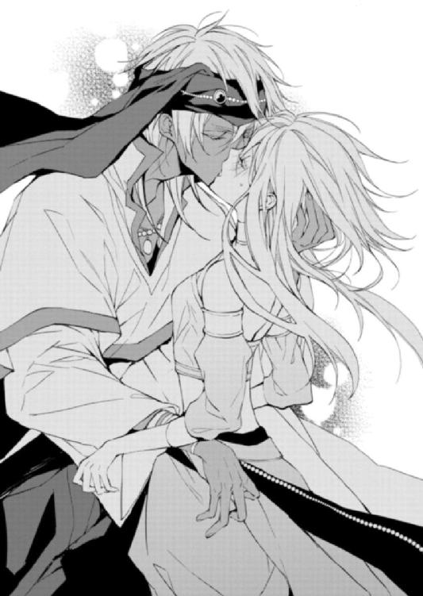

| アラハバートの魔法使い2 ～恋をよびこむ1億ディナール!～ (ビーズログ文庫) | |
| 仲村 つばき | |
| (2013) | |
本作品の全部または一部を無断で複製、転載、配信、送信したり、ホームページ上に転載することを禁止します。また、本作品の内容を無断で改変、改ざん等を行うことも禁止します。
本作品購入時にご承諾いただいた規約により、有償・無償にかかわらず本作品を第三者に譲渡することはできません。
本作品は本文縦組で制作されております。ごらんになるリーディングシステムにより、表示の差が認められることがあります。
炎が燃えるさまを初めて美しいと思ったのは、九つのときだった。
あのときのことを、よく覚えている。
白を基調とした宮殿の、第二王子の母が住まう居住塔。緑の植物をふんだんに配した中庭では、絶えず小鳥がさえずり、贅を凝らした噴水には扁桃の花が散らされていた。
この場所は、未来への期待が満ちあふれている。
家臣たちはみなラティーヤの、父と同じ白銀の髪と金の瞳を褒めそやした。
『将来が楽しみだ』と、口々に言った。
ラティーヤには兄弟がふたりいたが、大人たちの話によると、どちらも次の国王にはふさわしくないらしい。
ひとりは、兄のアフガット。アラハバート王家が代々受け継ぐ白銀の髪と金の瞳を持たず、鴉のような黒髪の、異端の子であった。正妃がひそかに不貞をはたらいていたのではないか......と噂されている。
もうひとりは、弟のシャフリヤール。身分の低い女が産んだ子で、『不吉』の名がつけられた。
有力大臣家から生まれ、父そっくりのかんばせをしたラティーヤは、王の座を約束されたようなものであった。
十歳の誕生日が近づいた昼下がり。いつものように、厳しい顔つきの父の真似をしてひとり鏡の前でにらめっこをしていた彼は、女官のひそひそ話に耳をそばだてた。
『国王さまが、アフガットさまとご一緒に狩りに出られたそうよ。最近はいつもシャフリヤールさまのところでいらしたのに。いよいよ次代の王を決められるのかしら』
『あの見た目だけれど、アフガットさまは剣術も勉学も抜きん出ておられるそう。ラティーヤさまは......それに比べると、ね』
何かが自分の中で、弾ける音がした。
父が母の庭園に姿を見せなくなったのは、いったいいつからだった？
ラティーヤは、飾り付けられた金の宝刀を持って扉を開けると、順番に女官の顔を切り裂いた。
こいつらは噓をついている。父上が僕だけに会いにこないなんて、あるわけがないんだ。
父上はお忙しいだけだ。僕が危なくなったら、何があっても駆けつけてくれるはずだ。
悲鳴を上げて逃げ惑う女官を放って、ラティーヤは、母の庭に火をつけた。
めらめらと燃えさかる炎が、水に浮かぶ花びらの色を変えてゆく。
これは、父上を呼び寄せる灯。
とても、きれいだった。
ふわりと、風がそよいで寝台の垂れ布を揺らす。
子ども時代の残影が消えうせる。炎に巻かれた庭園は、もうここにはない。
ああ、いつの間にか夜になっていたのか。
懐かしい夢を見ていた気がする。
「......誰？」
寝台の横に、女がひとり立っていた。
背が高く、栗色の髪を頭頂部近くで結い上げている。肌は日焼けしていたが、砂漠の民の色よりもずっと白かった。そして瞳は、すくい取った海水のような、薄青の色である。
バスコーよりも、もっと北方の出身に違いない、とラティーヤはぼんやりと思った。
「クルファと申します。ラティーヤさまにお仕えするために参りました、新参の女官です」
面倒だったので、ラティーヤは「そう」と寝返りを打った。
『新参の女官』は、ここ数カ月の間に数え切れないほどやってきている。
先の事件のおかげで、次代国王の座が『空位』になってからというもの、夜の寝所に代わる代わる女がやってくるようになった。
次の王冠の行く先が、誰にも分からなくなったのである。
王子二人の継承権が消えたことに関して、一般市民はいまだに知らぬままであったが、王宮に出入りする権力者たちの耳には──彼らの処世術はこういった情報をできるだけ早く手に入れることである──しっかりと届いていた。
ラティーヤが王位を手にする可能性を踏まえて、色めき立った成り上がり豪商や没落寸前の貴族たちが、娘を彼のお手つきにしようと、こぞって女官として送り込んでくるのだ。
最初のうちはむしゃくしゃしていたから気まぐれに手を出したこともあったけれど、最近はのちのち面倒なことになると分かったので、すげなく追い返している。
「悪いけど、そういう気分じゃないから。おやすみ」
「あなたさまの、王位継承権のことですが」
冷淡な口調だった。
ラティーヤは思わず、振り返ってしまった。
そのようにあらかじめ作られた仮面のような無表情で、女官は自分を見下ろしていた。不敬もいいところだが、まったく気にするそぶりも見せない。
「あなたさまは継承権を剝奪されたと聞き及んでおります」
「......君、僕によくその話題を振れるねぇ」
「先の争いであなたさまは兄王子を出し抜けず、あまつさえ弟王子に手柄を奪われてしまった。そうして今は、寝台の中で堕落する日々」
ラティーヤはぴくりと眉を吊り上げた。この女は、どうにかラティーヤに相手をしてもらおうと媚びへつらう、いつもの女たちとは違うらしい。
「君、殺されたいの？」
「先の戦いで、あなたは被害者だった」
灯を入れた燭台を手に取り、女は燃える蠟燭を見つめていた。揺らめく炎は、不気味な夜に溶ける緑色であった。
「兄王子は魔人を手にしていた。弟王子には魔法使いがいた。あなたはランプを所持していたものの、正しい使い方を知らなかった。あなただけが、置いてゆかれていたのです」
ランプや魔人のことは、父王が巧みに情報を伏せたはずである。
いったい、この女は何者だ──？
「私をお側に置きませんか。あなたさまを王座に近づけるお手伝いをしましょう」
ようやく女の表情が変わった。唇が赤く濡れている。ぞっとするほど妖艶な笑みだった。
「あなたさまはもう、何も知らなかった不利な王子さまではありません。魔法も魔人も、ちゃあんと知っているのです。少しずつ札を揃えて、手順を踏めば──必ず、あなたさまは王になれるでしょう。特別なお方なのですから」
王になりたい。──特別な存在に。
ずっと、あの王冠が欲しかった。いつからそうだったのか、分からないほど昔から。
「どうでしょう？ 『そういう気分』になっていただけましたか？」
「......悪くないね。『そういう気分』だ」
クルファが、そっと灯を吹き消す。
ふたりを照らしていたのは、分厚い雲にあらがうひっかき傷のような形の、心もとない月だけだった。
「何をやってもだめですね、あなたは」
呆れたように、腕を組んだカイルがぼやく。
シェヘラザードは下を向いた。下を向くよりほかにするべきことがないからだ。
上を向けば火の魔人イフリートのごとくまなじりを吊り上げたカイルと目が合ってしまうし、横を向けば反抗心があると思われる。ともなれば、下だ。絨毯の毛足にこびりつく──絹や色糸の残骸を、苦い気持ちで見ているしかない。
「あなたが無駄にした生地、いくらすると思いますか？ いくらうちの長が値切りの天才とはいえ、タダってわけじゃないんですよ。この......呪いの道具のような人形モドキにするくらいなら、そのまま生地屋の店先に出した方がマシです」
「ご、ごめんなさい。でもそれは人形じゃなくて、その、ラクダにかける首飾りを」
「何か言いました？」
「いえ、何でも」
鋭利に光る瞳で、じろりと睨まれた。怖い。怖すぎる。助けを求めるようにテントの入り口に目をやれば、野次馬よろしくギルドの仲間たちが覗いている。彼らの口に抑えきれない笑みを見いだしたシェヘラは、心の中で悪態をついた。
（絶対みんな面白がってる！ こっちを見て笑っているもの！）
カイルは深々と溜め息をついた。
「香料屋ではあらゆる匂いを混ぜすぎて異臭騒ぎ、果物屋では腐った果実を見分けられずにまともな商品まで腐らす、おまけに布で加工品も作れないとなると」
「......なると？」
「ラクダと荷車、どちらになりたいですか？」
「選択肢それだけですか!?」
暑い日差しの下で、ぜいぜいと息を吐きながら麻袋をかつぐ自分の姿を想像して、シェヘラはぶるりと背を震わせた。
「あ、あの。まだ染物師とか貴金属のたぐいも可能性あるかなーとは思うの......」
「染物師は長年の経験が必要な職人業。貴金属はサディーンが目利きになっておりますので必要ありません」
ぴしゃりと言い放たれて、シェヘラは口をつぐんだ。
事の始まりは、あの流星群の夜が明けてから。
王子たちの継承争いに巻きこまれながらも、行方不明だった魔人の父親が入ったランプをどうにか取り戻し、ギルドに残ると決めたシェヘラは、これからのことを考える必要があった。
そう、ギルドにおける自分の役割である。
これまでは、半ばお客様のような状態だった。砂漠で遭難していたシェヘラをサディーンが（一ディナールで）助け、何やかんやと世話を焼いてくれていたのだ。
けれど、ギルドで暮らしてゆくと決めたからには、やらなければならないことがある。
職を決めることだ。
通常ならば、それぞれの得意分野を生かし新しく商いを起こすところから始まるのだが、シェヘラにはあいにくと、得意分野というものがない。──あるにはあるのだが、それは使わないと決めている。
「シェヘラ、また失敗したんだって？」
ふわりとただよう、麝香の香り。つける香を変えたな、とシェヘラは反射的に鼻を動かした。
砂の土地に似合う、癖のある官能的な匂いをまとったサディーンはずかずかとテントに入ってきた。紅玉の飾りのついたターバンに入れ込んだ白銀の髪が少しだけこぼれて、後れ毛が揺れている。最近のお気に入りなのか蛍国製の派手な色合いの衣に身を包み、浅黒い肌の上に乗っかっているのは過剰なほどの装身具だ。
「おうおう、また派手にやらかしたな」
織機にこびりついた残骸をつまんで、サディーンはくつくつと笑った。
「こんなことをしなくても、俺はお前の適職をちゃんと見抜いているぞ」
「な、何!?」
シェヘラが身を乗り出すと、サディーンは得意気に言った。
「俺の奥さん」
がくりと彼女は肩を落とす。
「......あたしはちゃんと断ったわ」
「俺と仲睦まじく子育てする、世界中でたったひとりしかなれない、特別なお仕事だぞ」
「あたしは、それ以外のお仕事を見つけるの！」
顔を逸らしてそう答えると、サディーンはひらひらと手を振って、シェヘラたちに背を向けた。
「はいはい。それより夕飯だ。中央テントで配ってるぞ、食いっぱぐれるなよ」
軽く流されて、彼女は唇を嚙む。
（絶対、お荷物のままでいるつもりはないんだから！）
きっ、とかわいそうな布を睨みつける。
（次はどうにか......なってくれると、いいんだけど）
シェヘラが中央テントで受け取ったのは、サフランを散らしたごはんとレンズ豆のスープだ。夕食を手にした彼女は、涼しい風が吹いているので外で食事をとることにした。
ギルドは数カ月の間アラハバートの西部へ移動していたが、現在は首都へ向かって砂漠を横断中である。夕方をむかえても気温はあまり下がらなくなり、海と王宮の都・バスコーへ近付いていることを肌で感じ取る。
洗濯をするときに見つけたちょうどいい岩場に、シェヘラは腰を下ろした。
（これ......どうやって作るんだろう......）
食事作りは、一度鍋を丸焦げにしてしまった苦い経験がある。ギルドの食事係は当番制なので、次に当たるときまでいろいろと作戦を練っておきたいのだ。
「シェヘラには飾り菓子の係は頼めないなぁ～」
隣に腰を下ろしたニーダにそう言われて、シェヘラは首を傾げた。
「飾り菓子って？ 今度のおやつか何か？」
「違うよ！ 収穫祭の呼び物と言ったら舞姫と飾り菓子とバザールじゃない～。色とりどりのお菓子をさ、作って売るんだよ」
「収穫......祭？」
シェヘラの故郷には豊穣祭というものがあった。アラハバートでは数少ない畑の恵みを感謝する農耕儀礼だ。
「似たようなものかな。ほら、バスコーは港町でしょ。漁業とか、貿易がさかんなわけ。だから水の魔人に大漁と船旅の無事を祈るお祭りが開催されるのよ」
毎年、各商人たちの腕の見せ所は王に捧げる献上品。一番いい品を出した者はアラハバート中に名をとどろかすことになり、その年の売り上げにも大きく影響するのだとか。
「最近じゃ蛍国やベルシアの大使さまもお客様として招待するみたいだから、ここでいい品を出せば輸入先だって変化するんだよ！ みんな今から気合を入れてるの」
「そうなんだ。だからサディーンも最近よく買い付けに出ているのね」
なんでもお祭りに参加するには資格があるらしい。ギルドを五年以上運営していることや、一定以上の税を納めていること、数年以内に罰則による商売手形没収処分を受けていないことなど。
「うちは今年初参加だよ。サディーンとカイルがこの仕事を始めて、ちょうど五年たったからね」
シェヘラは計算をする。サディーンは今二十歳だから、五年前はちょうど十五歳。初めはカイルとふたりだけだった小さな隊商は、今や巨大なギルドに成長した。
「改めて、サディーンってすごいよね......。たった十五歳で商売を始めて、五年でここまで大きくするなんて」
それだけではない。実は、彼の本名はシャフリヤール・ディオン・アラハバート。『不吉王』の異称を持つ三代国王シャフリヤールの名を与えられて城を追われたとはいえ、彼は正真正銘、現国王の三番目の息子なのだ。
そんなすごい人が、自分なんかを妻にと言っていること自体が信じられない。
（確かに魔法を使えるという面だけを取れば、あたしは珍しいのかもしれないけれど。それがなければ普通そのものだわ......）
魔人の父と人間の母の間に生まれた半魔人のシェヘラザードは、父から三つの魔法の道具を受け取っていた。ひとつ、空飛ぶ絨毯。ふたつ、命の林檎。みっつ、どんなに遠くにあっても、望んだものが見える望遠鏡。
かつてさらわれた父を追って道具を携え神殿を飛び出したシェヘラザードを助けてくれたのが、彼女が身を置くギルドの仲間たち。サディーンはその主宰である。
（サディーンはあたしを奥さんにしたいと言ってくれたけれど......そんなのまったく想像つかないし。今はそれよりも、自立して、ちゃんと生活できるようになりたい）
シェヘラはサディーンの求婚を、きっぱりと断っていた。
神殿の外に出たばかりで、自分の進むべき道も曖昧なのに結婚と言われても、シェヘラは戸惑ってしまうのだ。
（今はギルドのお仕事で、ちゃんと地に足つけないと。外に出て頑張るって、父さんと約束したんだもの。自分にしかできないことを見つけなくちゃ）
シェヘラが持つ得意分野といえば魔法の力だが、シェヘラはこの力を公にするべきではないと考えていた。不思議な力は、人の価値観を簡単に変えてしまう。──過去に、シェヘラはそうして辛い経験をした。
（それに、魔法の力がなくてもギルドの人たちはここで立派にやっているわ。あたしもそんな風になりたい）
一人前になるまで、シェヘラは自分を甘やかさないことに決めている。
今も彼女の身を包むのは、神子時代から御用達の簡素な長衣である。
装飾の一切ない寂しい胸元に、ていねいに梳かしてはいるものの、下ろしたまま風に任せた髪。一見すると、彼女は掃除婦のようだった。
サディーンがいろいろと港で仕入れたきらびやかな巻き布や宝石飾りを贈ってくるのだが、シェヘラは丁重にお断りしていた。
「サディーンの贈り物、全部断ってるんだって？ ちょっとはもらってあげたら？」
「確かに素敵なものばかりだけど、お掃除や品出しのときにつけてると落ち着かないし」
質素に暮らしていた神子時代から考えれば気が遠くなるほどの贅沢品ばかり渡されるものだから（初対面で銀貨を巻き上げられたときのことを思うと、信じられないくらいだ）、シェヘラは恐縮しっぱなしで、サディーンが何かをかかえてこちらにやってくるだけで警戒するようになってしまった。
絹糸の帯や宝石のついた頭飾りを見たときは、どこのお姫さまの持ち物かと思って、慌てて突っ返したものだ。
贈り物をもらうばかりでは申し訳ないという気持ちと、もともとあまり装身具に興味がない上に、身につけるものは動きやすさを重視するため、華やかすぎる宝飾品は意識的に避けてしまうのであった。
「そんな格好で品出ししてる場合じゃないわよ。ギルドの女の子たちはお祭りで目いっぱいおしゃれすることになっているんだから」
「え？」
「うちは染物屋も衣装屋も宝飾店もあるでしょ。お祭りのときは女たちが商品を身につけて、宣伝するのよ」
「だって、水の魔人にお祈りをするためのお祭りじゃないの？」
「それはお祭りに来た人の目的。私たちの目的は、お祭りにやってきた人にできるだけ多くのお金を落としてもらうことよ」
ニーダが握り拳を作って力説する。さすがサディーンの教育が行き届いているというべきか、金が絡むと彼女も盛り上がる体質らしい。
「女子は飾り菓子作りか、もしくは体を張って宣伝人形になるかの、どっちかしか仕事はないわよ。前者がだめなら後者でしょ」
「確かに......料理は得意じゃないけど......」
注目を浴びることが苦手な彼女は、もごもごと口ごもった。
（でも、お仕事なら嫌がってちゃだめよね）
先ほどの失敗を取り返す、いい機会になるかもしれないのに。
「何の話してるんだよ？」
両手に皿を持ったサディーンがカイルと共に腰を下ろす。
「収穫祭の話だよ」
ニーダは「ね」、とシェヘラに同意を求める。相槌を打ちながら、シェヘラは不安そうにサディーンを見上げた。
「シェヘラザードは宣伝係でしょうか」
カイルが、「まさかこいつを菓子の係にしないよな」という意味合いを含めてサディーンに質問しているように感じるのは、気のせいだろうか......。
サディーンはもぐもぐと動かしていた口を休めてから、
「そうなるよなぁ......。菓子は菓子で人手が足りているし。貢ぎ物もうちは宝飾品にする予定だから、結構重たいものつけて歩いてもらうことになるけど」
「あたしでも、できるかな」
「心配するな。シェヘラは磨けば光る逸材だ」
サディーンの一言にぐさりと傷つく。つまり今は、磨かれていない、光っていない、ぱっとしない存在だということに......。否定はできないけれど。
「ま、収穫祭は楽しめばいいんだよ。それに今年は、初参加以上に大事な仕事がある」
「大事な仕事って？」
シェヘラがサフランライスを飲み込んでから質問すると、サディーンはよく聞いてくれたといわんばかりに、得意そうな笑みを浮かべた。
「舞姫の衣装を、担当できることになった」
舞を奉納する女性たちは、普段はハーレムの中にいるという王の舞姫たちだそうだ。
「衣装の担当って......王宮にいる、衣装係の人がやるんじゃないの？」
普通なら、市井の商人が舞姫の衣装を手がけるようなことはしない。あったとしても、御用商人として、しかるべき部署を通して品を納めるくらいのものだろう。
「選ばれたギルドにしか、この栄誉は与えられません。アラハバートの中でも屈指の豪商たちが自慢の品で舞姫を飾るのです。衣装は国王をはじめ貴族や親交国の大使たちに優劣をつけられ、良い品を出したギルドには国王から褒美が与えられます」
「本当は、枠はもう埋まっちまってたんだけど、例の活動援助のおかげでうちのギルドが割り込めたってわけ」
シェヘラたちは数カ月前、王位継承権争いに巻き込まれた。
それに対する謝罪として、国王は五年間、ギルドの活動を援助すると約束した。
今回はその一環で、例外的に名誉ある役割を与えられたのである。
「ちょっとズルっぽいから、手放しじゃ喜べないけどな。でも、この機会を無駄にするつもりはない。ズルだろうが何だろうが、金が手に入る機会は逃せないぞ！」
「そんなに、宣伝効果があるんだ......」
サディーンはスープをいっきに飲み干して、勢いよく続けた。
「自分のところの舞姫が一位に選ばれてみろ。成功すれば賞金一千万ディナールだって堅いかもしれない。何としてでも......俺は舞姫を優勝させる！ 金と名誉のためにも！」
ものすごく『金』の部分を強めに発音して、彼は拳を握ってみせる。
「これからすごく忙しくなるわね」
ニーダの言葉に、シェヘラはぎゅっとお皿の端っこを握りしめた。
今よりも、ずっとギルドは慌ただしくなる。シェヘラの面倒を見てくれているカイルや、まめに声をかけてくれるニーダも、収穫祭のためにさらに多忙になるはずだ。
（ひとりでも、ちゃんとできるようにならなくちゃ）
今のままではだめだ。あたしはここで何ができるのか、ちゃんと考えて行動しないと......。
「硬くなるなよ。俺たちが固まってちゃ、客だって寄ってこないぜ。とりあえず笑ってろ」
サディーンがシェヘラの前でにかっと笑ってみせる。それで少しだけ、気持ちが楽になった。サディーンの笑顔は不思議と、人を安心させる何かがある。
「せっかくだから、楽しめよ。舞だって見たことないんだろ？」
シェヘラは頷いた。故郷のイスプールで、神子の母が儀式のために舞ったのを見たことがあるくらいだ。それは娯楽を目的にした舞ではないので、舞台や衣装も簡素なものであった。
「アラハバート中の舞の名手が集まるんだ。そりゃ見物だよ」
懐かしそうな彼の横顔に、胸がずきりと痛む。
彼の母親は踊り子だった。ハーレムの中で、唯一現王が選んだ女性だ。
舞姫を見て、亡くなった母親を思い出したりしないのだろうか......。
「お前が今何を考えているのか分かるぞ」
「えっ」
「俺を慰めてくれるっていうならどんとこい」
両手を広げられたので、シェヘラは唇を尖らせて「べ、べつに」と返してしまった。もっと、何か気のきいた言葉を言えたらよかったのだけれど、いつもうまくいったためしなどない。
「シェヘラザードは人の心配よりもご自分の心配でしょうね」
カイルのとげとげしい言葉で、はっとした。
「まぁまぁ。堅いこと言うなよ。献上品さえ納めれば、あとは各々割り当てられた場所で好きなように商売していいんだ。きれいに着飾って俺の側にいてくれればそれはシェヘラの立派な仕事だよ」
「でも、みんな店頭に出るんでしょう？」
「シェヘラ。大丈夫よ、全員が全員参加するわけじゃないの。小さい子たちをお祭りに連れていってあげる人たちだっているし。ドライドなんか、この忙しいのに実家に帰るらしいし。強制じゃないわ」
それを聞いて、シェヘラは少し安心した。
ニーダは彼女の背中をさすって、男性二人に提案する。
「シェヘラはお祭り自体初めてだから、まずは会場の雰囲気を摑むのが今年の目標ってことでいいでしょ？ どうしても気になるならお菓子を売る係をやればいいわ。販売係は必要なんだし」
ニーダの意見に、ほかのふたりも賛同してくれる。しかし、シェヘラの心はもやもやしていた。
（みんなのお荷物にはなりたくない......当日までに少しでもうまく立ち回れるようにしておかないと。あたしを迎えてくれたみんなに何か少しでもお返ししたいし）
収穫祭のこともそうだが、いまだに自分の職が見つからないことも、シェヘラの悩みの種となっていた。先行きが見えず、気持ちは常に宙ぶらりんで、どうしようもない。
不安を口に出すことはできない。サディーンとニーダは「そんなに心細いなら結婚してしまえ」と言いそうだし、カイルは冷ややかな目でこちらを見てきそうな気がする。
まずは自分の力で頑張ると、父と別れたあと決めた。だからどうにかして自分で道を切り開きたいのだ。
「楽しみだね、お祭り」
シェヘラはとりあえず、夕食と一緒に不安を喉の奥へ流し込んだ。
アラハバート最大の都市であり王城のそびえる街・バスコー。
貿易と漁業がさかんなこの港町には他国籍な文化が入り乱れている。以前は無法者が幅を利かせていたのだが、ここ数カ月で賊に代わり国軍の姿が目につくようになった。
「以前はあんまり雰囲気が良くなかったけど、これはこれでものものしいよね」
シェヘラの側をいかめしい姿の警備兵が通り過ぎる。
現国王の復帰に伴い、バスコーの賊は一斉に粛清された。とはいっても、完全に元通りになるにはまだ時間がかかる。祭りのときは特に治安が乱れるので、国軍の警備は厳重だった。
「民衆は暮らしやすくなったけど、ハメは外しにくくなったよな」
それでも、以前のバスコーでは祭り自体開催できなかっただろうから、これも王の手腕のうちと言えるかもしれない。
王は、数カ月前まで病床に伏していた。それをシェヘラザードがどんな病気や怪我もたちどころに癒す、命の林檎を使って回復させたのだ。
第一王子アフガットが代理王権をふるっていた頃よりも国が良くなったのなら、自分の選択は間違っていなかったということになる。
（アフガットさまも、ラティーヤさまも......あのあと、どうなったんだろう）
二人の王子が王位継承権を巡って争ってから数カ月。
ベルシアの姫との婚約で国中を盛り上げたアフガット王子のことも、王の回復に伴い兄王子の監視から逃れたラティーヤ王子のことも、いっさい話題にのぼることはなかった。
二人とも隠者のようにひっそりと、王宮の奥に閉じこもっているらしい。
（サディーンは、王子ふたり、共に相応の罰を与えられたって言ってたけど、罰って何なんだろう）
気にしても仕方がない。けれど、一度自分が関わってしまった事件の顚末は誰だって気になってしまうものだ。
考えにふけっていたシェヘラを、ニーダがつついた。
「幸運だわ。舞姫が舞台を見に来ている」
「わぁ......」
シェヘラは、思わず声を漏らした
屈強な護衛に守られるようにして、天上の使いのような女性たちが十二人、あでやかな姿を披露していた。
容姿の美しさもさることながら、目を見張るのは舞姫たちの装身具である。十二人の舞姫たちはそれぞれ色違いの衣装を身につけており、分かれた絹の上下には銀糸の刺繡が、そして衣装の色に合った宝石が細かく縫い留められていた。
「あれでもう、舞台に出られちゃいそうだけど......」
改めてギルドが衣装を見立てる必要が分からず、首を傾げるシェヘラにニーダは説明をした。
「民間のギルドを衣装係に指名するのは、祭りを盛り上げるための仕掛けのひとつなのよ」
豪奢なトーブや宝石は、バスコーに住む女性たちだけでなく、賭博好きの男たちの注目も集める。
どのギルドが一番を取るかが賭け事の対象となり、あちこちの酒場で賽や札が飛び交う。勝負事が華やかであればあるほど、街が活気づいてゆく。
普段は指定された賭博場以外での賭け事は禁止されているのだが、このときばかりは、国は目をつむってくれるらしい。
「舞姫の衣装が豪華だといっそう、祭りが盛り上がるからね。あれは私たちギルドに対する注意喚起もあるわよ。下手な品を身につけさせないようにね」
舞姫を今よりみすぼらしくすることは論外、ってことか。
物語のお姫さまをいっぺんにたくさん見たようで、シェヘラの胸は興奮に高鳴っていた。
ニーダはひとしきり騒いでから、
「いいなぁ、ほんとうに。あの胸にはまった金剛石、金貨五十枚くらいってところね。ああ、それだけあればたらふく食えるわね」
と、口元をぬぐった。
「え......」
（食べちゃうのか......）
ふたりで舞姫の衣装を眺めていると、男連中がやってきて、むむっと唸った。
「違うだろニーダ。あれはでかいだけでカットの技術はいまいちだろ。手前の舞姫の翠玉の細工はすごいもんだ。あっちが金貨五十だよ」
「ダイヤの方が宝石的な価値観から見れば上よ！ あっちが金貨五十」
「どっこいどっこいというところですかね。専門家に聞いてみましょうか」
カイルがサディーンに耳打ちする。サディーンはそれぞれの乙女たちの衣装を眺めると、
「奥の赤い娘が総額二百枚で一位。ルビーと見せかけて髪と腰布の飾りがレッドダイヤ」
（すごっ）
値段もそうだが、ちょっと距離があるのにそれぞれの宝石を鑑定できるのがすごい。
「慣れた鑑定士なら光の反射具合だけでどんなもんか分かるぜ。さすがハーレムの女を出すだけあって、滅多な宝飾品はつけさせないな。こっちが出す品も気を遣わないと」
「もしかして、優勝するのってすごく難しいんじゃないの？ 王宮の方々は宝石なんて見慣れているでしょう」
シェヘラの疑問に、サディーンは頷く。
「まぁ、難しいかもな」
言葉のわりに、彼の表情からは余裕が窺える。
「実は、この日のために取っておきの品を大枚はたいて借りてきたんだよ。ちょっとやそっとの宝石じゃ負ける気しないね」
「どんな宝石なの？ レッドダイヤよりすごい？」
「当日までのお楽しみ。期待してろよ」
彼がそこまで言うのだから、よほどの品なのだろう。
当日が楽しみになって、シェヘラは今からそわそわとサディーンと舞姫を見比べた。
「うちのギルドの舞姫が出るのは、いつなの？」
「三日目と最終日だ」
カイルが手持ちの資料で確認を取る。
「祭りはこれから十二日間にわたって続きます。一日一人の舞手が建国記の物語に基づく舞を舞い、最終日は総勢十二名で『魔人たちの宴』を披露するんですよ」
「すごい......」
『魔人たちの宴』とは、初代国王を囲んで魔人たちが催した酒宴のことである。建国記の中では、人間と魔人が共存していた時代を象徴する、大変にぎやかしい場面として描かれている。
魔人の父に聞かせてもらった寝物語の中でも彼女の一番のお気に入りだ。
（父さんが話してくれた物語の登場人物が、この舞台で動きだすんだわ......）
幼い頃は、魔人の父が語るお話だけでも毎晩眠れないくらいどきどきしたものだ。まだ準備段階の会場を見ているだけだというのに、気持ちが高揚してくる。
「な、楽しめそうだろ？」
サディーンにぽんと肩を叩かれて、シェヘラも「う、うん」と頷いた。
実はこういった突然の触れ合いに、シェヘラは慣れないままだ。
彼が求婚してきてからというもの、必要以上に意識して硬くなってしまうのだ。
サディーンの求婚を受けていたら、両親のような（父さんは魔人だけれど、人間の母さんをすごく大切にしている。毎日ランプから飛び出すとすぐに頰にくちづけをしているくらいに）毎日を過ごしていたのかもしれない......と思うと、なぜだかむしょうに恥ずかしくなって、時折自分でもおかしいと思うほどに態度がぎこちなくなってしまうのであった。
（もっと、みんなみたいに自然に触れ合ったりできたらいいんだけど......）
男性陣が宴会で肩を組んでいたり、ふざけて体をぶつけ合ったりしていると、とても仲が良さそうでうらやましいと思うのに、いざ自分が......となると、どうしても緊張してしまうのであった。
（ニーダと腕を組んだり体をつつき合ったりするのは、平気なのにな......。彼にも、ほかの仲間と同じように接しなくちゃだめなのに......）
ぎこちなくなってしまったシェヘラに、サディーンは眉根を寄せた。彼の視線をごまかすように、シェヘラはカイルのあとに続いた。
密談は、決まって夜に行われる。
砂漠に銀色の月がのぼり、夜啼鳥の怪しげな声が響き渡る。
アフラ砂漠から首都バスコーへ繫がる街道、寂れきった宿の一室。
暗闇の中、ぼっと蠟燭の灯りが灯された。
浮かび上がったのは、ふたりの男の顔である。
「あんた、また顔を変えたんですか。ちょっと見ない間にずいぶんとおっさんになって」
「アリー。お前は若作りしすぎだ」
まったく、と今回は五十過ぎに見える男が、カフワ入れに粉をばさばさと入れた。顔立ちは変わっても、カフワ好きは変わらないらしい。
この男はどこへ行くにも鍋を持ち歩き、腰を落ち着ければすぐさま頼んでもいないのに他人のぶんまでカフワを淹れるのである。
「で、お前は相変わらず『アリー』でいいのか」
アラハバートで『アリー』という名前はありふれていて、街で人にぶつかれば大抵『アリー』だと言われているほどだ。彼は新しい顔になるたびに偽名を作るのが面倒なので、いつも『アリー』と名乗っている。
「いいですよ。あんたは今回の顔だと、やっぱり役どころは俺の上司ですかね。また先輩って呼びますよ」
「一応、『シフラ』って名前にしようかと思ったんだがな......」
また、そんなすぐにでも忘れちまいそうな名前を......とアリーはひとりごちる。
呼び間違えは、ぼろを出すきっかけとなる。アリーは目の前の男を『先輩』と徹底して呼ぶことにした。
壮年の男──シフラは咳払いをして、
「一族から裏切り者が出た」
「はぁ。どうせクルファのバカ女でしょ。連絡が取れなくなった」
「知っているなら、どんな手を打つ？ 俺たちは中立でなくてはならない」
「少なくとも、国王や長老にこのことを知られたら、俺たちまでとばっちりで殺されかねないですね」
注がれたカフワを口に含んで、アリーは顔をしかめた。喉にへばりつくような味がする。
少しは味に変化があったかと期待した自分に後悔しつつ、お世辞にも美味しいとは言いがたい飲み物を睨んだ。
「俺たちだけで話し合える問題じゃないでしょ。王子は三人いるんですよ」
口直しにナツメヤシの実を放り込みながら、アリーはばさっと書物を放り出した。
「のんきに旅してるコイツも、ここに引っ張り出して話し合うべきなんじゃないですか。俺たちはあいにくと、同じ王子の担当なんだし」
投げ出された書物をつまみ上げ、シフラは顔をしかめる。
「これ、お前......自分で買ってきたのか」
「さすがに女には化けられないんでね。恥を忍んで買ってきましたよ」
書面に綴られているのは、柘榴色の瞳を持つ乙女と砂漠の青年の、めくるめく恋物語である。......男性の愛読書にしては、いささか疑問を覚えるものだ。
「あいつに会ったら、今度はもっと真面目な書物に暗号を仕込むように言っておこう」
「無駄ですよ。この作風で人気者になっちゃってます。今から路線変更は不自然すぎる」
暗号によると、とアリーは続けた。
「第三王子のもとに、魔法使いは残ることにしたそうです。これでまた形勢が分からなくなった。二番目は絶対にないとしても、一番目と三番目。どっちを次代にするべきか。せっかく次代が『空席』になって、俺たち一族の出番がきたんだ、腕が鳴るね」
「二番目に関するお前の見解はいらない。それは国王と共に話し合って決めることだ。二番目を観察していた者の意見も踏まえてな」
じり、と蠟燭の炎が揺らぐ。
「その二番目の観察者が干渉しだした時点で、俺たちの涙ぐましい努力は無意味になるかもしれないんでしょ」
やってられるか、とばかりにアリーは足を投げ出した。狭苦しい部屋で足を伸ばすと、いよいよこのむさいおっさんとの距離が縮まって大変不快である。
「なんだかなぁ。先の継承権争いのときも関与できなかったのに、今回こんなことで乱されるのはすごく不快なんですが。それに、放っておけば我らがアフガット王子が次代だったはずでしょ」
「お前はアフガット王子が次代にふさわしいと思うか」
「ま、いろいろ問題は山積みだけど。長年見てきたオヤゴコロっていうの？ というか、ぜひとも毛色の違う王さまが見てみたいっていう他人事的な気持ちも混じっているというか」
「お前の感情の大部分は後半に偏っているな」
嘆息されて、アリーは「分かってますよ」とふてくされたように口に出した。
「三番目の担当と連絡を取るぞ。事が大きくなる前にクルファの始末にかかる。王が健在のうちに、長い『試験』を終わりにしたいものだ」
「じゃ、ギルドを追わないと。移動する王子は面倒だな。俺が担当じゃなくて良かった」
アリーは伸びをして、『柘榴の乙女』を胸元にしまい込んだ。
「......それ、持って帰るのか」
「先輩も好き嫌いせずに読んでみるといい。暗号抜きに面白いぜ。特になかなか柘榴の乙女が素直になれないあたりがこう、攻略したくなる男心をくすぐるというか──......」
「......遠慮しておく」
あっそう、とアリーは伸びをした。
収穫祭前の、浮き足立った街へとふたりは歩きだす。
部屋を出ると同時に、ふたりの顔の造作はすっかり変わっていた。
「露店の組み立てに時間がかかっちゃったわね。てきぱきいくよ！」
ニーダは言うなり、慣れた手つきで卓に敷布を広げた。
バザールの開始までに、するべきことは山のようにあった。
シェヘラは自身の身支度もそこそこに、開店の準備に追われていた。
ギルドの女性陣たちが焼き上げた菓子を並べ、試食品を取り分け、卓が見栄えするように飾りをこしらえる作業を速やかに行わなければならなかった。
売り場の責任者のニーダは、各商人に指示を出してゆく。
「シェヘラ、その下に菓子が入っている箱があるから、取り分けて並べてくれる？ 上に砂糖と木の実を振ってね」
シェヘラが箱を取り出すと、粉を練って焼いた素朴な形の菓子が顔を出した。収穫祭ではこの菓子に木の実や果物の砂糖煮をつけて、親しい人と一緒に食べるのだ。
焼き菓子の上に飾る具材の種類は商店ごとに異なり、お客たちはどこのギルドのお菓子を食べるかで毎年頭を悩ませる。
収穫祭で飾り菓子が好まれることには、理由がある。
いたずら好きの水の魔人に出会ったら、飾り菓子を捧げると、悪い魔法をかけないでいてくれるという言い伝えによるものらしい。菓子を魔人が気に入れば、船を荒波から守り、大漁の魔法をかけてくれるのだ。そのため、人々はお菓子を過剰に装飾し、魔人の気を引くために工夫を凝らすのである。
魔人であるシェヘラの父は特別甘いものが好きなわけではない（そもそも、いつもふよふよ浮いていて人間の食べ物は食べられない！）ので、これはおそらく商売上手なアラハバートの商人が作り上げた創作だろうと思われる。
それでもすっかり現在のアラハバートでは定着し、ニーダいわく、飾り菓子のない収穫祭は考えられないほどなのだそうだ。
サディーンのギルドも飾り菓子は充分用意していた。粉糖と木の実を使った、可愛らしいものである。
シェヘラは運び入れた荷物の中から、ようやくお目当てを見つけた。
（あれ、砂糖の壺がこんなに奥にある──）
どっしりとした壺はシェヘラひとりでかかえるには多少重さがあったものの、ギルドの商人たちは女や子どもでも力持ちで、このくらいの荷物は軽々と移動させてしまうのであった。
シェヘラもそれにならい、粉砂糖に手を伸ばした、そのとき。
「あ、シェヘラ！ 重いからそれふたりでやるよ!?」
「うわっ......」
シェヘラは壺の重さに耐えかねてよろめく。その際にだらんと垂れた卓の掛け布を踏んづけ──卓の上に置かれた値段表や、銀貨入れと共に、体勢を崩した。
降るようにおつりの銀貨がシェヘラの背中に落ちてくる。シェヘラは必死で、砂糖の入った壺をかかえ込んだ。
「大丈夫!?」
銀貨の雨から頭を守るためにうずくまっていたシェヘラは、はっと顔を上げた。
「砂糖が......」
シェヘラの膝から下に、相当な量の粉糖がこぼれ落ちていた。
彼女はみるみる顔を青くした。この粉糖は仲間たちが苦労して手に入れた、混じりけのない純白の粉糖であった。仕入れの量もぎりぎりである。
「ど、どうしよう......！」
ほんの少し前の自分を思い切り殴りつけたい気持ちになる。もう少し、足元に気を配れていたなら、このような事態を招くことはなかったはずなのに。
「落ち着いて。怪我はない？」
「うん......あたしは大丈夫。本当にごめんなさい。あの、あたし」
開店間近に、食材をだめにしてしまった。自分がしでかしてしまったことの大きさに、声が震える。
シェヘラの瞳にじわりと涙が浮かび上がって、ニーダは慌てて背をさすった。
（──だめ、泣くな！）
シェヘラはぎゅっと下唇を嚙み、けんめいにこらえる。
「とりあえず、ここはいいよ。菓子をどうするかは焼き手の人たちと考えるから、休んで！」
「でも」
「やっちゃったものはしょうがないって。それに全部こぼれたわけじゃないもの。午前中は余裕でしのげるくらいまだ残ってるし、明日には追加分が入るから。納品を一日早められないか、聞いてみるよ。この世の終わりみたいなそんな顔しなくていいから、大丈夫！」
ね、と肩を叩かれてシェヘラはしょぼんと下を向いた。
（この忙しいときに、とんでもない迷惑をかけてしまった......）
彼女はごしごしとまぶたをぬぐって、立ち上がった。
泣きに行くためでなく、周囲の片づけをするためである。とにもかくにも、散らばした砂糖を放っておくわけにはいかなかった。
（このままお菓子を出せなかったらどうしよう......）
もしも追加の粉糖が入らなかった場合、せっかくの稼ぎ時に品切れを起こすこととなる。
──何とかしなくちゃ。
泣いている場合ではない。こんなところでめそめそしていては、神殿にいた頃と何も変わらない。
代わりのものを買ってくることも考えたが、収穫祭のこの時期は、あちこちで飾り菓子を売り出すためどこでも粉糖は不足するはずだ。港の市では品切れの可能性が高い。
粉糖の代わりになる、何か見栄えのいいもの......。
シェヘラは掃除用具を探しつつ、あたりを見回した。搬入途中の商品の山に、ひとつだけ蓋の開いた木箱が放置されている。
中を覗くと、ところどころ疵のついたオレンジや桃が、ぎっしりと詰まっていた。
（これ......疵物で、出せない商品だ。こういうのは休憩時間のおやつにするしかないって、サディーンが前に言ってた）
──これを、使える？
シェヘラはオレンジの皮の、茶色くくすんだ疵をなぞって、眉を寄せた。
（でも、これじゃ見た目が悪いわ。このままじゃ使えない......）
昼食の煮炊き用に、外に置かれた調理具を引っ張り出し、シェヘラはナイフを取り出した。真っ二つにオレンジを割ると、中身は鮮やかな橙色で、店先に並んでいるものとほぼ変わらない。
（皮は使わず中身だけなら、大丈夫かもしれない）
気づけば、無我夢中でナイフを動かしていた。果汁が飛んで、頰や手を濡らす。中身がくたりと崩れて、シェヘラは途方に暮れた。もともと状態が良くなかったせいか、予想以上に実がもろい。これでは、ただの形の悪い果物だ......。
「何してるんですか」
声をかけられ、シェヘラは振り返った。けげんな顔つきでこちらを見ているカイルと目が合う。
「飾り菓子の砂糖をこぼしてしまって、代わりになるものをと思ったのだけれど......」
シェヘラの指の隙間から、果汁がしたたって、カイルは眉をしかめた。
「それじゃ、とても代わりにはならない」
シェヘラはしゅんとうなだれた。
「......たしか、混ざりものの砂糖だったらありましたね。果物とナイフを持って、こちらに来なさい」
カイルに指示されて、シェヘラは道具置き場の片隅に腰を下ろした。木箱の隙間が気に入ったのか、ちゃっかり絨毯もいる。
シェヘラの魔法の絨毯は、彼女の魔力を吸っては気ままに行動しているのである。
カイルは絨毯にはかまわずに、果物の箱を確認した。
「粉糖をこぼしたのは論外ですが、この果物に目をつけたところまでは、褒めてあげます。疵物は店に出せないので、ここで昼食の差し入れにする予定でした。今用意できる砂糖は純白ではないし、質が落ちるのでギルドの食事用でしたが......量は充分あるし、煮てしまえば見た目に関係はありません」
カイルは「剝きなさい」とシェヘラに果物を手渡す。
シェヘラがぎこちない手つきで果物を剝きにかかり、カイルは少しの間じっと見守っていたが、やがてしびれを切らした。
「へたくそ......」
「す、すみません......！」
カイルはオレンジを手に取り、軽々と剝いてみせた。橙色の果肉があっという間に顔を出す。不思議なことに、彼の手にかかると果肉は崩れなかった。
シェヘラも見よう見真似でやってみるのだが、手首の動きが危なっかしく、皮に余計な疵を入れるばかりである。
「シェヘラザード。まずはよく見て。そして自分との違いを考える。これは何をするにも基本です。自分から率先して動けるようになるのは、それができるようになってからですよ。これはあなただけじゃなくて、誰もがそうです。ひとり立ちしたいなら、オレンジくらいさっさと剝いて」
「は、はい！」
とはいっても、見たからといって即座に自分の技にできるわけもなく......。
「手つきがおかしいんですよ。刃の向きも考えてないし。失礼」
カイルがシェヘラの手の上に自らの手を重ねて、シェヘラを指導する。彼の手が重なると、果肉を無駄にせずにすんだ。
「すごい......」
「もたもたしないでください、次」
シェヘラが返事をして再び果物と格闘を始めると、後ろから聞き慣れた声がかけられた。
「何やってるんだよ？」
サディーンである。彼は腕にいくつもの宝飾品や布地をかかえており、何かのついでに顔を出したようであった。
「砂糖をこぼしちゃったので、代わりを作っているの......」
カイルは鍋に火をつける作業に取りかかり始めている。沸騰するまでにさっさと剝けということなのだろう。シェヘラはサディーンに目もくれず、必死に刃を動かした。
「ふうん......頑張れよ」
サディーンが耳元でささやいたので、シェヘラは危うく果物を取り落としそうになった。
「シェヘラザード！」
カイルの雷を食らって、涙目で手を動かし続けるシェヘラに向かって、絨毯は応援するように房を揺らしていた。
カイルに三回ほどはたかれながら、シェヘラは砂糖煮を完成させた。つやつやと輝く果物の砂糖煮は、目に鮮やかで宝石のような華やかさがあった。
（綺麗な純白のお菓子はできなかったけれど......これはこれで、可愛いんじゃないかしら）
絨毯がそーっとカイルの後ろから砂糖煮を覗いている。彼が振り向くとさっと引っ込んで普通の絨毯のふりをするので、シェヘラは思わず笑いをこらえた。
「何にやにやしてるんです」
「い、いえ何でも......！ あ、あの、教えてくれてありがとう」
「早く運んでしまいなさい。もう開店時間です」
カイルは結局、ほとんどの作業をシェヘラに任せた。彼が作ればもっと早く完成させられたはずだが、不器用なシェヘラに辛抱強く付き合ってくれたのであった。
「本当に、ありがとう」
「シェヘラザード」
ぺこりと頭を下げ、表へ向かう彼女を、カイルは呼び止めた。
「焦らずに落ち着いて、よく周りを見ること。周囲の意見を取り入れつつ、自分なりの答えを出すことが最終的な目標であることを、忘れないように」
それだけ言うと、カイルはシェヘラに背を向け、見回りへ向かってしまった。
──周りを見たうえで、自分なりの答えを出す......。
カイルの言葉を心の中で繰り返しながらシェヘラが店先に顔を出すと、ニーダはシェヘラの抱えていた砂糖煮を見るなり顔を輝かせた。
「シェヘラ、すごい！ 砂糖の搬入を早めることができなくて、実はちょっと危なかったんだよ！ 調理係の人たちが動く前に、シェヘラが代わりを作ってくれたんだね。一時はどうなるかと思ったのよ」
「ううん、これ全部、カイルが助けてくれたのよ」
彼がいなければ、きっとシェヘラはぐすぐすと鼻を鳴らしながら掃除をしていただけであった。自分の力では、どうすることもできなかったのだ。
「そうなの。カイルは怒ると怖いけど、教えるのがとっても上手だからね。忙しいサディーンの代わりに下の子たちを指導してたら、いつの間にかカイルが鬼教師になっちゃったのよ。でも途中で放棄せずにちゃんとついていけば、早ければ二年くらいで立派な商人になれると思うわ。すっごい茨の道だけど」
「そうなんだ......」
早ければ二年。そんなにも、かかるものなのか......。
シェヘラは自分の甘さに、気づかざるを得なかった。
職を見つけてしまえばすぐにでも一人前になれると、勘違いしていたのだ。
（それは、カイルがあたしに怒るわけだわ。あたしがやろうとしていたのは、ただの商売人ごっこだ......もっと、先を見据えてお仕事をしなければいけなかったんだわ）
自分なりの答えを出すまでの段階に、シェヘラはまだたどり着いていない。
一番乗りでやってきたお客が、オレンジの飾り菓子を注文する。
ひとまずの滑り出しに、シェヘラはほっと胸を撫で下ろしたのであった。

煮えたぎる鍋を見つめながら、クルファは自身の中に流れる熱の川を感じていた。
目の前で沸騰する湯よりも、ずっと熱く、まがまがしい。気泡が弾けるたびに、肌の裏から己の体が焼き尽くされていくような感覚にとらわれる。
苦しくはない。痛くもない。ただ衝動的に、手先が動く。
銀のさじで、右から順番に並べた粉薬をすくい取ってゆく。分量をほんのわずかでも間違えようものなら、これは作用を表さない。そうして肘を動かさずに、さらさらと鍋に落とす。さじを傾ける高さまで、すべて計算し尽くしている。
ラティーヤは、クルファのすぐ側で、彼女の作ったものを飲み干した。荒い呼吸を整えてから、
「マジッドはまだ戻らないのか」
と、口元をぬぐって尋ねた。
ラティーヤの言葉に、クルファは嘆息した。
かつて彼の腹心であった男は、継承者争いの後に、ラティーヤの側を去っていた。
掃除婦としてラティーヤを観察していたときには、彼の信頼を一身に集めていた家臣のように見えたのだが。
（この王子を見限りたくなるのも、無理はないわね）
こうもたびたび暴れ回るようでは、さすがのクルファも苛立ちを隠すのに苦労する。先ほども、目を覚ましたかと思えば絵皿や花瓶のたぐいを窓に叩きつけ、王子の私室は見るも無残なありさまとなった。
夢見が悪いときのラティーヤは、手負いの獣よりも始末が悪い。また彼が城に火をつけるのではないか、と危ぶむ声も聞こえてくる。
継承者争いの後から、彼の癎癪は強まった。兄弟に出し抜かれたことはもちろんのこと、そのおりに失ったマジッドという部下は、ラティーヤにとって必要な男であったのだと思う。
まぁ、じゃまな腹心がこの王子の行動に目を光らせなくなったおかげで、私はこうやって堂々と身分を偽ることができるのだけれど。
「あなたの家臣は、じきに戻りますわ」
クルファはなるべく上品に見えるように、唇だけで笑ってみせた。
感情を隠すことは、幼い頃から仕込まれている。ときおり、体中の熱が氾濫しそうになるけれど。
「それよりも、お薬はいかがですか。ラティーヤさま」
「すごく気持ちよくはなったけど。でもこの薬は、父上が認可していないものだろう」
「外用にしたものは、塗り薬としてベルシアで一般的に使われております。成分に問題はございません。アラハバートは少々......考え方が古いのです」
無事に粉末が溶け合ったのを見届けて、クルファは鍋に蓋をした。
「最先端の医療技術や流行は、すべてベルシア経由でアラハバートに渡ってきます。それも、ベルシア国民が使い古したものの、ほんの残りかすがね。それでは他国に後れを取るばかりです」
クルファは、ベルシアや蛍などの諸外国を、運輸業にたずさわる家族と共に渡り歩いた。たまたまアラハバートへ帰国したときに、ラティーヤの女官になるように父にすすめられ、王城へ上がった......ということに、なっている。
「私は、あなたに王になっていただきたい。異国の地を踏んで、そう確信いたしました。アフガット王子ではこのままずっとベルシアの言いなり、そしてシャフリヤール王子は庶民くささが抜けません。どちらも次代にはふさわしくない。アラハバートの国づくりのためにどんなお手伝いでもいたします」
「君は、王妃になりたいのか？」
クルファは逡巡した。
王妃は彼女がもっとも望む地位でありながら、けして届かないものである。何しろ彼女には、表だって発表できる身分がない。
王妃になるには、たとえば、大国の姫君であるとか、屈指の手腕を持つ政治家の娘であるとか、そういった国にとって利のある家柄の娘でなくてはならない。
クルファは、アラハバートの『闇』にひそむ血筋の者である。本来、けして表舞台へ出るべきではないのだ。重々言い聞かされた掟を破って、彼女は今ここにいる。
「──いえ、ラティーヤさま。私では、あなたの国の母にはなれないでしょう」
ラティーヤは、クルファのおとがいにそっと触れた。
「そうだね。僕もきっと、王になれば国の力となる妻を求めるだろう。でも、君が望むなら側室にしてあげるよ。こんなに僕の役に立ってくれているのだから」
ラティーヤは、日ごとにクルファに執着し始めていた。正確には、クルファではなく、彼女の与えるものに。
私とこの男には、同じ熱がある。
求めるものが手に入らぬゆえに、持て余し、くすぶっている、行き場のない熱が。
「嬉しゅうございます。それでは、未来の側室にひとつ、贈り物をくださいませんか」
「何でも言ってごらん？」
ラティーヤは機嫌がよかった。
彼女が秘伝の薬を与えると、ラティーヤは、どんなにひどい状態に陥っていたとしても、まるで悪夢から醒めたかのように落ち着きを取り戻すのだ。
ラティーヤは、心身ともにクルファに依存しきっていた。
あとは、分量を最適にした、鍋の中の新薬が完成すれば良い。
「魔法使いが欲しいのです、ラティーヤさま」
「魔法使い？」
「あなたも、ご覧になったことがあるはず。あの力は必ず王国の役に立つ。手元に置くべきですわ......」
クルファには考えがあった。
次代の全知は空位のままだ。国王は絶対に、王冠を受け継ぐ者を選ぶために『試験』をする。これは、確実なことだった。
慣例では、次代国王は『長子相続』とされているが、過去にはそうでなかった例もいくつかある。
今回のように不祥事によって継承権を失ったり、長子に病が見つかったり、さまざまな理由からほかの王子が次代となった例は、歴史をひもとけばけして少なくないのである。
そうして、次代の座を決定づけるものは、いつの時代も『試験』であった。
試験は実力がありのままに出る。判定者がいる以上、ごまかしはきかない。
でも、試験の内容が、ラティーヤが絶対に勝てるものだったら？
クルファは、薄い笑みを浮かべた。
アラハバート最大の祭典、収穫祭。これを利用しない手はないのだ──......。
彼女の体内に流れる川が、さらなる熱をはらんだ。
休憩時間を迎え、シェヘラは木陰にひとり座って水を飲んでいた。
急遽仕様を変更した砂糖菓子は好評であった。壺に残った粉糖は、カイルの機転で『数量限定販売』の純白菓子となり、それにつられてやってきた客が柑橘の菓子を一緒に購入してくれる。
ニーダいわく、「祭りで限定販売とくれば買わない理由はないわよ」ということらしい。
風が吹き、砂埃に目をすがめると、背の高い青年がそこに立っていた。
シェヘラは思わず、顔をほころばせる。
あちこちで引っ張りだこであったギルドの長にも、ようやく休憩時間が回ってきたようである。
「捜した。ここにいたのか」
サディーンが横に腰を下ろした。シェヘラは少し詰めて、日陰の場所を彼に分ける。
「今休憩？ 菓子の方はどうだ？」
「とっても順調よ。予定より百枚以上多く出てるし、午後は完売かもしれないって......。あの、それでね。あたし大事な砂糖をこぼしてしまって......」
「カイルから詳しく聞いた。言ってくれれば、俺が動いたのに。でもちゃんと、自分でその穴埋めはしたんだろ。偉かったな」
長である彼にちゃんとお詫びと報告をしておこうと思ったのに、彼はひらひらと手を振って、「大丈夫だったんだから、気にしすぎないでいい」と流してしまった。
「ちゃんとカイルから指導も受けて、問題を解決したんだ。今さら俺が何か言うこともないよ。充分あいつに怒られたろ」
「う、うん......」
ふわりと花の香りがただよって、シェヘラはサディーンを見上げる。
「どうした？」
「何だか、いい匂いがしたから......」
「ああ、最近ニーダの実験台にされてるんだよ。珍しい香料を仕入れたらしくて、調合するたびに俺につけろって言ってくるんだ」
ニーダはギルドで、普段は香料を売る仕事をしている。最近サディーンのつける香りがよく変わるのはそのせいだったのか、とシェヘラは納得した。
「ほら」
彼が手首をシェヘラの鼻先に近づけたので、彼女は思わず身を引いた。
（あ、あれ......？）
心臓がはねて、うまく呼吸ができない。また、サディーンが触れるとびくびくしてしまう例の症状が再発してしまったようだ。
「うん？」
サディーンは難しい顔をして、シェヘラの頰に指先を置いた。そのまま首筋へ指を滑らせたので、ぞわりとして彼女は堅く目をつむった。
彼の爪が鎖骨にひっかかり、シェヘラは耐え切れなくなった。
「もう、香りは分かったから。手をどけて」
「......カイルは背中から手を回して、お前と一緒に果物を剝いてたよな。でも、平気そうだった」
「サディーン？」
「俺じゃ触るのもだめなのに、あいつはいいのかよ」
サディーンの顔はみるみる不機嫌になっていった。いつも屈託なく笑っている彼が機嫌を損ねてしまうと、シェヘラは迷子の子どものようにどうしていいか分からなくなる。
「あの、ごめんなさい......？」
（あれ、この場で謝るのって正しかったのかしら）
とにかく、相手を不愉快にさせてしまったのなら謝りなさいと、父にはいつも言い聞かされてきた。男女のいさかいは特に、自分が悪くなくても、謝るのだと。それが、「父が母に嫌われないための最大の秘訣だ」と、長々と語っていたものだった。
（けれど、今回は父さんの助言、うまくいってないかも......）
サディーンは、シェヘラの言葉に驚いたような顔をしていた。
それから、低い声で「分かった」と言うと、のそりと立ち上がった。
「もう行く。邪魔したな」
彼の周りの空気が、ぴりぴりと苛立っている。
やばい。何だか分からないけど、怒らせた。
「サ、サディーン、あのね」
言葉を続ける前に、彼は背中を向けてしまった。シェヘラザードはその場に立ち尽くしているしかなかった。
収穫祭、初日の夜。みな、めいめいお酒を手に反省会議という名の宴会を催していた。
初日なので、お店のことや普段とは違う客層について盛り上がっているようだ。
「シェヘラ......サディーンと何かあったの？」
そのさなか、ニーダは強めのお酒を片手にシェヘラの隣にやってきた。大家族用の絨毯の上に置かれた羊の肉や果物のようなごちそうにも、正直手を出す気分にはなれなかったので、シェヘラは一番はじっこで目立たぬようにして座っていた。
「めっちゃくちゃ、機嫌悪いよ」
ニーダが指さす方には、サディーンがあぐらをかいて酒をあおっていた。カイルが注ぐままに杯を傾けている。彼はとんでもないうわばみだから、心配はないと思うけれど。
サディーンが視線に気づかないうちに、シェヘラは目を逸らした。
「それが、何であたしのせいになるの」
「初日の売り上げは上々だし、サディーンが機嫌損ねるとしたら、残るはシェヘラのことくらいじゃないかと思って」
（や、やっぱりそうなのかな......）
実はあれから彼に何度か話しかけようとしたのが、見事に空振りしているのである。
さ、避けられている......ような。
気になって食事も手につかず、もやもやとした気持ちを薄めた酒でごまかしていたのだった。
「ねぇねぇ、喧嘩したんでしょう!? 話してよ話してよ」
「何でそんなに嬉しそうなの......」
「だってあの手の早いサディーンが、シェヘラをいつまでも落とせないみたいだからさぁ。ここらで何かものすごくいやらしいことを仕掛けたに違いないと踏んで、こうしてやってきたってわけよ」
「いっ、いやらしいことなんてあるわけないじゃない！」
シェヘラは慌てて声の大きさを落とした。
危ない危ない。周りの商人の耳に入ったら、恰好の餌食だ。ただでさえサディーンと気まずい思いをしているというのに、自ら墓穴を堀るような真似はできない。
ニーダはシェヘラの回答に、不満そうである。
「シェヘラ、こっそり言ってみなよ。この経験豊富な私がスバラシイ解決方法を伝授してあげてもよくってよ」
ひっく、と続けられるとそのスバラシイ解決方法とやらの内容も怪しいものだけれど......。ニーダはかなり酔っている。口からはぷうんとぶどう酒の匂いがするのに、手に持っているのは別の蒸留酒......。
じれたニーダが、シェヘラを小突いた。
「おら、言えっ。言わなきゃ触るぞ！」
「ええぇ......」
ニーダに強引に自白を迫られ、シェヘラは少しの間迷った。
けれど、シェヘラもこのままずっとサディーンと気まずいのは嫌だった。
こうなったらアラハバート神でもニーダさまでも、すがれるものはすがってみるしかない。
わずかな酒が入っていたこともあって、シェヘラはもうやけっぱちであった。
こそこそとニーダに耳打ちすると、ニーダは「うそっ」と声を上げる。
「あんた、それまずいわよ」
「ほ......本当に？」
「だって、サディーンに触られるのいやだって言ったようなものじゃないの」
ほかの奴は良くて、俺はだめなのかよ。それに対し、シェヘラが返したのは「ごめんなさい」、これではサディーンの言葉を肯定したも同じこと、らしい。
「え、そんなつもりじゃ」
（......なかったのか、あたし）
ニーダはにやにやしながら、満足そうに頷いた。
「なんだなんだぁ～。本当は触ってほしかったのね、この子ったら」
「そ、そんなんじゃ......」
「よしよし。シェヘラの性格じゃ、自分を見てなんて真っ向から言いづらいよね。ちょうどお祭り期間だし、あれをやるっきゃないな」
「......あれって？」
ニーダはふふふと笑って、シェヘラの髪を撫でた。
「お祭りの期間中、サディーンと二人きりになる機会があったら、髪飾りを贈るのよ。これは収穫祭に伝わる、言い伝えなの」
「言い伝え？ どんな？」
「収穫祭で髪飾りを贈るのは、昔からのおまじないで......えーと、日頃の感謝の気持ちを伝えて、私はあなたともっと親しくなりたいと思っています、って意味があるのよ。うん。もらって悪い気がする男性はいないわ」
誤解を解くにはぴったりでしょう、とニーダは続けた。
確かに、口べたな自分はあれこれ言葉で説明しようとしても、相手に伝えられないことが多い。髪飾りを渡せばいいだけなら、気負う必要はなさそうだ。
「ありがとう、ニーダ。あたし、絶対サディーンと仲直りしてみせるよ」
「その意気よその意気！」
ニーダにばしんと背中を叩かれ、シェヘラはぐっと上を向いた。うじうじしても仕方がない。大事なのは、これからどうするかだ。
「さっそく、明日に備えてあたしはもう休むね」
シェヘラが席を立ち、宿に移動するさまを、ニーダは立ち上がって見送った。
「頑張れ、シェヘラ。......健闘を祈る！」
人の悪い笑みを浮かべて、彼女は新しい酒と料理を手にするべく宴会の真ん中に突っ込んでいったのだった。
収穫祭、三日目。
とうとうシェヘラたちギルドの舞姫が舞台に立つ番になった。
シェヘラはサディーンの方をちらと見てから、髪につけた飾りに触れた。
結局、昨晩はサディーンが装身具の準備に追われてしまい、これを渡すことができなかったのだ。
シェヘラは、普段の様子からはあり得ないほどめかし込んでいた。
今日はサディーンのギルドが舞姫の身を飾る番なので、販売係たちもとっておきを身にまとい、宣伝活動をするように言われているのである。
ニーダが選んでくれた夕焼け色の染め物は、襟元から足元にかけて少しずつ色が変化してゆく珍しい布地であった。橙色から、夜を迎える直前の空に似た濃紫へ。シェヘラは初めてこれを見たとき、思わず驚きの声を上げたものだ。
「大きい髪飾りをつけておくね」とニーダが挿したのは、星の形の可愛らしいものだった。酔っぱらっていても、ニーダはしっかり話の内容を覚えていたらしい。
（この装いに、恥ずかしくない働きをしよう。仲直りはそれからだわ）
シェヘラはとにかく、ニーダに従うことにした。独断で動くにはまだ自分の経験は浅い。それなら、今は商売がどういうものなのかを、学ぶしかない。
うまくやろうとしなくていい。カイルの助言通り今は、周りがどんなふうに動いているのかを見よう。
先はまだまだ、長いのだから。
そうすると、不思議とこわばっていた肩から力が抜けた。
お客さんはひっきりなしにやってきた。さすが王都のお祭りだけあって、その賑わいはイスプールの豊穣祭とは比べものにならなかった。
舞の見物人だけでなく、各ギルドの特色を摑んで、どこの衣装が一番を取るのかを賭けている者たちもいた。通りにはロバや馬が連なっている。大量に購入商品を運ぶために、動物連れが珍しくないのだ。
さすがに飾り菓子七百枚を一度に注文されたときなどは面食らったが、初めの頃から比べれば、だいぶそつなく対応できるようになってきた。
「シェヘラ。休憩がてら、珍しいものを見に行こうよ」
客足も落ち着いた頃、ニーダに手を取られ、シェヘラは首を傾げた。
「珍しいものって......？」
「しっ。気づかれたらやばいから、気をつけて」
ニーダについていくと、たどり着いたのは小さなテントであった。
小さいとはいっても、黒ヤギの毛で織られた生地は高級品で、このテントが出されることは滅多にない（ちなみに、シェヘラたちがいつも寝起きに使っているものは羊の毛で織られた白いテントである）。
賓客を招くときは、このような取っておきを出すのだが......。
「あのテントで、舞姫が衣装合わせをしているのよ」
「えっ」
「舞台に出ちゃったら宝石や衣装って近くで拝めないでしょ？ 今しか機会がないのよ！」
──そ、それって覗きって言うんじゃ......。
既に噂を聞きつけた何人かの商人たちが、黒テントに群れをなしている。
「ふたりとも、見てみろ！ すごいから」
前の位置を空けてニーダとシェヘラを押し込むと、みな示し合わせたように息を殺した。
「あ、あの、あたしは違......」
「シェヘラ、静かにしろ。気づかれるだろうが」
（ううっ......これじゃ本当に覗きだわ。でも、ちょっと中に興味ある......）
サディーンが自信たっぷりに用意した宝石。これを逃せば近くで見られないのだとしたら......。こんな風に盗み見るのは良くないことだと分かってはいても、好奇心が頭をもたげてくる。
かたわらのニーダは、ためらいなく黒テントの幕をめくった。
せめて着替えの真っ最中ではありませんように、とシェヘラは願いながら、そうっと、薄目で中の様子を窺った。
幕の隙間から──艶のある黒髪の女性が、見えた。
目鼻立ちがはっきりして、切り揃えられた前髪から覗く猫のような瞳が魅惑的だ。舞台映えしそうな豊満な体が、露出度の高いトーブから見える。
美人で求婚者が絶えなかったという自分の母よりも美しい女性だった。
形の良いふっくらとした唇に、細い首にかかった真珠飾り。
シェヘラの目線の先で、背の高い青年が舞姫と向かい合っていた。
（サディーン!?）
サディーンは舞姫をじっと見つめて、何かを考え込んでから、さらに細かな真珠の首飾りを出してきた。舞姫が頷くと、彼は彼女がつけている真珠飾りを丁寧に取り外して、新しい飾りに付け替えている。
（物語の、挿絵みたいだわ......美男美女で、絵になる二人）
物語屋のドライドが書く夢物語に出てくる男女のようだった。王子さまとハーレムの女性が、恋をする話。
「長はすげぇなぁ。あんな美人に対しても腰が引けないんだからさ」
後ろで、商人たちが羨ましそうにサディーンを見ている。
考えてみればおかしなことでも何でもなかった。サディーンは、本当は王子様だから。
本来なら、彼の傍らに立っているべきなのはああいう人なのだ。
気まずくなってしまった数日前のことを思い出し、シェヘラの胸はちくりと痛んだ。
彼が舞姫の装いを飾ったからといって、なぜこんなにも動揺しているのだろうか......。
「あれね。サディーンが死ぬ気で借りてきた『砂海の涙』ってやつ」
ニーダがシェヘラにそっと耳打ちをした。
もやもやした気持ちをごまかそうと、シェヘラは舞姫の衣装に注目した。
サディーンが舞姫を飾ったものは小ぶりの真珠をいくつも重ねた首飾りである。黄と白を混ぜ合わせたような柔らかい色合いの珠は、『砂海の涙』の名の通り、太陽を浴びて輝くアフラ砂漠の砂が凝縮したかのようであった。光を帯びると金糸雀色に見える真珠の連なりが二の腕や背中まで延びて、頭にかぶったベールと繫がっている。ベールはなめらかな肌が映える透けた朱の生地で、肉感的な体を引き立てていた。
「普通の真珠の何倍も輝きが違うのですって。滅多にとれるものじゃなくて、アラハバートの海域で見つかったのはまだたったの七十三個だそうよ」
「七十三って......少なくともあの飾りに五十はついているように見えるけど」
「つまりは、相当な秘宝ってことよ」
（いくらで借りたのだろう......）
舞姫のもともとの美しさもあるだろうが、砂海の涙を身につけた姿はひときわうるわしく、天上の舞手のようである。
舞姫は立ち上がり、お揃いの朱色の薄物をサディーンにあてがってみせた。彼は穏やかに笑って、彼女にターバンをつけ替えてもらっている。アラハバートで男性がターバンを触らせるのは、家族のような親しい間柄の人だけである。後ろで成り行きを見守っていた男性陣が羨望の溜め息をついた。
ニーダはシェヘラと舞姫を比べて、早口でまくしたてた。
「あ、あれはたぶん、舞姫とギルドの長は同じ色を身につける習慣があるからだと思うの、深い意味は特にないのよきっと......！」
美姫に見とれる男性陣のひとりが「いいなぁ、俺も舞姫に遊んでもらいたい」とつぶやくのが聞こえてくる。
「遊んで......」
シェヘラが絶望的な声を漏らすと、ニーダは彼女の手をぎゅっと握った。
「シェヘラ、も、もうここ出よう。ね！」
シェヘラはゆるゆると頷くほかに何もできなかったのであった。
バスコーの夜はふける。
初日と二日目からは比べものにならないくらいの観客が、特設舞台へ詰めかけるように集まっていた。
美しい『炎』の舞姫と──彼女の首にかけられた、『砂海の涙』を見るために。
人に押されながら、シェヘラはニーダと共に、ようやく観覧席にたどり着いた。立ち見だが、目の前に背の高い人物がいないので、どうにか遠目に舞台を見ることができそうだ。
屋外に造られた舞台のあちこちに、火を入れる照明器具を運び入れている。幻想的な灯籠の灯りと、裏手の海から聞こえる波音が、会場に特別な夜の始まりを告げているかのようだ。
「ふうっ、すごい人ね。呼吸できなくて死ぬかと思ったわ」
ニーダのすすめで、魔法の道具をギルドの金庫番に預けてきて良かった、とシェヘラは人混みを眺めた。望遠鏡や林檎はともかく、大きな絨毯をかかえて、こんなところまで来るわけにはいかなかったので。
絨毯にはずいぶんいやいやとだだをこねられたのだが、格闘の末に、ひもでぐるぐる巻きにしてしまったのだった。
（きっとしばらく、お手入れさせてくれなくなるわね......）
へそを曲げた絨毯とやり合うには、かなりの忍耐が必要なのである。
「今日の舞台は火の魔人の話だよね！ 丸焦げのロバが見られるのかしら」
ニーダの言葉に、シェヘラは苦笑した。
シェヘラがギルドにきてから戸惑ったことのひとつに、物語がある。
シェヘラが子どもたちに聞かされる建国期の冒険譚は、彼女の記憶と食い違うことばかりだった。
千年前のおとぎ話は、さまざまな脚色や要素が盛り込まれ、現在まったく別の話として成立しているらしい。
父から直接伝説を聞かされたシェヘラにとっては、信じられない展開の数々である。
「私が知っているイフリートは、ロバじゃなくて漁師と戦うのよ」
「えー？ かしこいロバを殺して食べた魔人が、百日間下痢で苦しむお話じゃなかったっけ。イスプールでは漁師を食べるのか」
「た、食べないよ！ 戦うだけ」
「それなら、シェヘラの知っているお話のほうがいいわね。百日間下痢で苦しむ様子を情熱的に舞われても、こっちまでお腹が痛くなりそうだわ」
確かに......とシェヘラは思わず笑ってしまった。
そこら中にぶら下がっていた灯籠の灯りが消され、二人は口をつぐんだ。
ぼぼぼっ、と照明に灯された炎の揺らめきは、深い緑色であった。
（どうやって、炎に色をつけているのだろう......）
まるで、想像できない。もしかして自分のほかに、魔法使いがいるのではないかと思えるほどに。
舞姫の手を引いて、サディーンが現れた。
衣装を手がけたギルドの者は、開演前に舞台に上がり一礼するのが習わしである。
サディーンが優雅に礼をすると、予想通りというべきか、前の方に座っている女性陣から黄色い声が上がった。
「サディーンと一緒に見られなくて、残念だったわね」
ニーダにからかうように言われると、シェヘラはうつむいてしまった。
（そもそも、まだ、仲直りしていないし......）
自分の頭に乗っかったままの星飾りに触れると、気持ちが沈んでくる。
「さっきの、衣装合わせのときのこと気にしてるの？」
ニーダの問いに、シェヘラは口を閉ざした。
彼が、女の人の扱いに慣れていることは、以前から分かっていたことである。
今、自分がなぜだかその事実に動揺してしまっているというだけで。
「大丈夫よ。シェヘラが来てからは、すっごく控えめになったから」
「あれはお仕事だし、それにサディーンが女の人と一緒にいたって、あたしが口を出すことじゃないもの。求婚だって断ったんだし......」
「意外と口出ししてもらった方が、喜ぶかもよ」
「そんなわけないでしょう。とにかく、喧嘩したままなのが、あたしはいやなだけ」
「まぁ、何にせよ仲直りしなきゃ始まらないね」
ニーダと言葉を交わしている間に、サディーンが舞台を降り、舞姫と踊り子たちだけが残される。
舞の始まりを告げるウードやミズマールの調べが、おごそかに響き渡った。
シェヘラはいつの間にか、悩んでいたことも忘れて、舞台に吞まれていった。
波のさざめく音と、幻想的な楽器の音色が重なって、夜にふさわしい音楽となる。
『砂海の涙』は、月明かりに照らされてなめらかに光っていた。
舞姫の足首で躍る金の足輪が、足をさばくたびにしゃらりと鳴る。太鼓の音に合わせるように響いて、シェヘラはこれも楽器の役割をしているのだと気がついた。
舞姫は、剣をたずさえたかと思えば、音色が切り替わるとそれをベールで隠し、魔人と人の二役を演じているようだった。
どうやらこの舞は、シェヘラの知るイフリートと漁師の戦いを表しているらしい。
足さばきが速くなる。だんだん、だんだんと。金の楽器が休むことなく響いて、いっときも目を離すことは許されない。
舞は佳境に近づいていた。
終幕の近さを感じ取って、シェヘラは息を吞んだ。もったいない、もっと見ていたい。興奮のあまり足の裏がふわふわとして、同時に寂しさが込み上げてくる。
炎の魔人と漁師の戦いは激しさをきわめ、そして漁師の知恵によって魔人が倒れる、最後の場面に差し掛かる。
緑色の炎が、いっせいに消えた。
観客たちは、ほんの少しの間、それを緊張感あふれる演出の一環だと思っていた。
「ねえ、ちょっとじらしすぎじゃない？」
ニーダの言葉に、シェヘラは頷く。
明かりが消えてから、しばらくたっている。長すぎる沈黙だった。
人々が席を立とうか悩み、そわそわとあたりをうかがいだした頃、ようやく炎が灯った。その色は緑でなく、ただの、何の変哲もない赤橙である。
舞台の上は、変わり果てていた。
先ほどまで観客を魅了し、情熱的に舞っていた舞姫の姿は、どこにもなかった。
代わりに残されたのは、そこが凄惨な事件の現場なのではと思わせるほど、大量にまき散らされた真っ赤な痕と、それから......。
『舞姫はいただいた。彼女を妻にしたのちに、千年前と同じ運命をたどらせる。三代国王──』
シャフリヤール。
舞台の垂れ幕にべっとりと赤文字で書かれた一文に、観客たちは息を吞んだ。
サディーンの本名を騙った何者かが、舞姫を舞台から連れ去った。
取り調べが彼に及ぶまでに時間はかからなかった。サディーンは特に抵抗することもなく、警吏と共に会場を後にしたらしい。
夜空が薄くなってきた頃、サディーンはギルドに帰ってきた。
仲間たちはまんじりともせず朝を迎え、それぞれ目の下に隈を作って、難しい顔をしていた。
最初に気がついたのは、カイルだった。うとうとしかけていたシェヘラの横で素早く立ち上がると、天幕の側までよろめきながら駆け寄った。
「心配かけたな......って、何て顔してるんだ、お前」
サディーンの声で、シェヘラも完全に覚醒した。
（サディーン、よかった......怪我ひとつしてない）
犯人が彼ではないということは、もちろんみんな分かっていた。ただ、あの舞台の終わり方は異常であった。血痕のような犯行声明は、シェヘラの胸のうちを嫌な予感で満たしていた。
もしものときのことを考えて、彼女は一晩中林檎を握ったまま体をこわばらせていた。ようやく少しだけ、力が抜けた。
「帰りが遅すぎます」
「悪いな。思ったより警史の連中がご親切だったもんで」
サディーンの表情に、ちっとも疲れた様子はなかった。深刻に待機していたこちらが拍子抜けするほどだ。
「舞姫がさらわれた。犯人は俺の本名を騙っている。この様子だと、だいたいみんなこのくらいは知ってるって感じか」
シェヘラを含む、仲間たちはみな頷いた。
「なら、話は早い。一応宣言しとくけど俺は犯人じゃないぜ」
「分かっています。早く本題へ」
カイルが苛立たしげに険しい視線を送った。シェヘラが今まで見たカイルの中で、一番怖い仕草である。
「俺も、何が起こったのかをちゃんと理解しているわけじゃないんだ。舞姫が消えたのは、舞台の上でのほんの一瞬のことだったからな」
「無事なのかしら、あの女性は」
ニーダが心配そうにつぶやくと、サディーンも難しい声を上げた。
「そうだな......。実際の男女関係はないといっても、舞姫は王の女だ。犯人は何かしらの要求を国に受け入れさせるために、ハーレムから彼女が外へ出るこの機会を狙ったんじゃないかと思う。だとしたら、舞姫を生かしておいた方が、取引はしやすいだろう」
これから身代金の要求があるのではないかと、警吏や国軍の兵たちは『シャフリヤール』を名乗る者からの接触を待ち構えているのだという。
「そんなところだ。あとは警吏に頑張ってもらうしかない」
「サディーン。ギルドにとって重要な問題がまだです」
サディーンは傍らに立つカイルをちらと見た。いや、でもみんなもう疲れてるだろ、とか、また落ち着いてから、とか、サディーンが小声で言っても、カイルは頑として譲らなかった。
溜め息をついて、サディーンは後ろ髪をかく。
「じゃ、言うけど。舞姫がさらわれたおかげさんで、総額金貨一億ディナールがパアになりました」
「一億ディナール!?」
さすがに、みな言葉を失った。金貨一億ディナールといえば......国の予算並みの金額である。
「それって、あの『砂海の涙』って宝石の値段......？」
シェヘラは、舞姫の二の腕や背中で輝いていた、あの真珠を思い出していた。
この世にほんのわずかしか存在しないという、秘宝......。
サディーンの話によると、『砂海の涙』は買い取ったのではなく、取引先から一時的に借り受けたものであったらしい。ギルドが普段から懇意にしている取引先は、宝石の宣伝のため特別に相場よりもずっと安く貸し出してくれたのである。
「『砂海の涙』の賃貸料は、せいぜい金貨百ディナールだ。ただこれをなくしたり壊したりした場合は、俺たち全員の稼ぎをもってしても、きっぱり言うと払えない！」
絶句である。みな何も、次の言葉が続かない。
ニーダが、震える声を絞り出した。
「舞姫は生きてるかどうか分からない。『砂海の涙』も無事かどうか分からない。もし無事じゃなかった場合、私たち──」
サディーンはこんなときですら余裕の表情で、むしろこんなときだからこそ、大して動じもしない様子がよりみなの恐怖をかき立てた。
「このままじゃ、俺たちは一貫の終わりだ」
ギルド中に若者たちの絶叫が響き渡った頃、ようやくバスコーの町に太陽がのぼった。

白の王宮、王座の間。
玉座へ伸びる天鵞絨の赤い絨毯を踏みしめる男がいた。
黒瑪瑙のような黒い髪と瞳は、雪花石膏の白を基調としたこの王宮建築の中ではひときわ異端めいた印象を強めている。
男は玉座から定められた位置まで足を運ぶと、膝をついた。
「アフガット、呼び出しに馳せ参じました」
この礼の仕方は、王位継承権を持つ国王の子としてはあり得ないものである。まるで、臣下が主に頭を垂れるような所作だ。
第一王子アフガットは、次代のアラハバート王であると現王によって明言されていた。国王を補佐する立場として、他の臣下と席を同じくすることはあっても、それはけして同列であるということではない。
本来ならば。
だが、今、アフガットは王位継承権を持たない。弟のラティーヤでさえも。
「お前に失地回復の機会を与えてやろう」
前置きもなしに、国王は言い放った。先日まで奇病で床に伏していたとは思えないほどの威厳を放っている。
近年まれに見る政治的手腕を誇る王。いつまでも現王の治世が続くようにと願っている民は多いと聞く。
金色のまなこは、息子を冷ややかに見下ろしていた。
「収穫祭の舞姫が消える事件が起きた。次の犯行予告つきでな」
「舞姫が......」
国王のところまで話がいっているということは、警備兵や舞姫の護衛たちは彼女を見つけられなかったということなのだろう。
ハーレムの舞姫は、後宮の女たちだ。王の寵愛を受ける身分である。
ただ、現王と男女関係があったのは、三人の王子の母親だけ。
ハーレム出身で手がついた女は、第三王子の母だけだ。
それでも、王の女として生活を保障している以上、彼女たちの失踪はゆゆしき事態となる。
「さんざん民の期待を裏切ったお前が国王の座につくには、信頼を取り戻すしかない......これは、『試験』だ」
王の言葉に、アフガットは答えた。
「必ず、取り戻してみせます」
民を巻き込み、首都を賊にまみれさせ、勝手にベルシアの姫との婚約を取りつけた。
アフガットはその罰として、自分が父から与えられた偵察部隊や離宮、財産だけでなく、王位継承権まで取り上げられていた。
父王は、親交国のベルシア国王に対し、次代の王に関する親書を送っていた。
次代の全知をもう一度選定し直すため、アフガットとベルシアの姫君との婚約は白紙に戻してほしいと──。
ベルシア国王からの返事は、意外なことに了承の旨であった。
ただし、次に選ばれた王はベルシアの姫を必ず正妃として娶ることという、条件つきではあったが。
つまりは次代に誰が選ばれたとしても、アラハバートとベルシアの関係は続くこととなる。
ベルシアの力を借りてのこととはいえ、アラハバートは新興の海洋国家に発展していた。ベルシアとしては、アラハバートを手放したくないのだろう。
（これで私が王に選ばれなくとも、両国の関係は悪化しないことになった......）
王は、もうアフガットを優遇などしない。現在、アフガットは次代の国王どころか、財力も権力も何ひとつ持たず、城に住むだけのごくつぶしである。
それはアフガット自身が何より我慢ならない罰だった。これなら、まだ鞭打ちの刑にでも処してくれた方がましというものだ。
（唯一の救いは、継承第二位のラティーヤも資格を失ったことだが）
現在、次代の『アラハバートの全知』は空位状態となっている。
「兵も持たせぬ。財も持たせぬ。自身の力でどうにかせよ。私は、お前には何の力も貸さぬ。お前が見事事件を解決してみせたら、継承の件は考え直してやらぬこともない」
「──かしこまりました」
柘榴の少女が国王を目覚めさせてから、数カ月。
もともとアフガットが魔法の力を望むあまり、賊と手を組む仕儀に及んだのは、父王を病から救うことで唯一の後ろ盾を失わないようにするためであった。
国王が倒れることさえなければ──人外の力を求めることもなく、このまま戴冠のときまで真っ直ぐに道を歩んでいたはずなのだ。
（けれど、私は知ってしまった。王が倒れたとき、己の足場が崩れ落ちてゆくさまを）
王の子でありながら、アラハバートの王族が代々受け継ぐ白銀の髪と金の瞳を持たぬアフガットは、次代後継者として自分を推した父親が世を去ればそれまでの存在だ。
ラティーヤにも、城を追われた不吉の第三王子にも王位を渡したくないのなら、国王が健在であるうちに、王の器にふさわしい働きを示さなければならない。
「この話、ラティーヤには」
聞くのは賢くないかもしれないと思ったが、聞かずにはいられなかった。
「あれはまだ病んでいる。だが、お前が使えなければあれを使うだけだ。私が永遠に生きられるわけではないのでな」
これ以上は無駄、と言わんばかりに王は立ち上がる。
ラティーヤは城に連れ帰られてから、しばらく錯乱状態にあった。今は回復に向かっているとのことなのだが、王はまだ外に出すのは危険だと判断したのだろう。
大臣の呼び出しに、王は頷いて部屋を出てゆく。これから諸外国の使者との謁見を控えているのだ。
収穫祭にはベルシアや蛍などの親交国の大使を招待している。不吉な事件があっては、国の体面に関わる。
かつてアフガットが従えていた魔人・ジルータスは既に地上を去っている。全て自身の力をもって動かなくてはならない。
どうすればいい。
このままでは、父はあのシャフリヤールに王位を譲るかもしれない。
父にとってあの弟が特別だということは──けして、父はそれを表に出そうとしないが──アフガットには分かっていた。
ディオンの名を与えるほどに、父はシャフリヤールを愛している。
もしシャフリヤールが王位を望めば、『試験』を行うのかどうか、アフガットは聞くことができなかった。それだけは、どうしても。
アフガットは唇を嚙んだ。
王にならなければ。そうでなければ、自分はいったい何だというのだ？
王の子かどうかも疑わしい、黒の王子。異母弟よりも、よほど自分の方が──王家にとっては、不吉な存在だ。
それを認めてしまえば、自分はどうなる。異国のベルシアから嫁ぎ、冷たい視線に曝された母はどうなる。絶対に、自分は国王の第一子であると声を張り上げていなければ、王宮で生き残るすべはなかった。
アフガットが異端の見た目を持つにもかかわらず、アラハバートの第一王子だと認めた父がいたからこそ、彼は今こうして王宮内を歩くことができるのだ。
だからこそ、国王が倒れたときは、真っ先に林檎の力を欲した。
王位継承権は失くした。だが、父王は生きている。継承権を永遠に取り上げられたままというわけではない。
「望むところだ」
アフガットは、忌まわしいものを追い払うかのように、歩を速めた。
サディーンの衝撃的な告白の後、シェヘラは自分の荷物をごそごそと漁って、宝玉のついた望遠鏡を取り出した。
（これを使えば、きっと舞姫の居場所も、真珠のある場所も分かるはずだわ......）
どんなに遠くにあっても、望んだものを映し出す望遠鏡。シェヘラが持つ三つ目の魔法の道具である。
舞姫の命も、ギルドの命運もかかっているというのなら。控えていた力を、使うべきときだ。
ギルドはかつてない困難に直面している。
犯行声明はすぐに隠されたとはいえ、人の口に戸は立てられない。『不吉王シャフリヤール』が舞姫をさらってしまったらしいと、町中その話題で持ちきりだった。
不吉王は稀代の悪王。悪政の限りを尽くし、民を震え上がらせた三代国王はアラハバート国民にとって不吉の象徴である。千年以上前に冠をかぶったにもかかわらず、国中の乙女を葬った所業は現在も語り継がれるほどだ。
サディーンは、その名を継ぐ王子である。しかしながら彼は城を出て、現在は今の名前を使い別の人生を始めていた。
アラハバートの国民たちが第三王子の生存を知ったのちも、サディーンのことは『公然の秘密』のような状態で、このような事件が起きるまでは、特に問題なく過ごしてこられたのだが......。
シェヘラは、サディーンが戻ってきたのちの朝方の出来事を思い出していた。
仲間たちはどうにかこうにか店を開けたが、彼らを待っていたのは、通行人からの冷たい視線だった。
指をさされ、気味の悪いものを見るような目を向けられ、ようやくやってきたと思われた客は、昨日買い上げた飾り菓子を返品にきた者だった。
ニーダはその菓子を複雑そうな顔で見下ろしながら、
「飾り菓子は縁起物だから、昨日のことがあって返したくなるのは分かるけど......」
と、ごみ捨て場に運んでいった。
返品は引きも切らず、せっかくカイルと一緒に作った果物の飾り菓子も、一夜にして大量に処分されることとなってしまったのだ。
縁起物の飾り菓子を、わざわざ『不吉』な店で買う者はいない。ギルドの売り上げは、かつてないほど落ち込んでいた。
昨日の舞台の影響で、何の関係もないギルドがとばっちりを受けたのだ。
（舞姫が無事かどうかも、心配だし......）
シェヘラは、ぎゅっと望遠鏡を握りしめた。
このままにしておくわけにはいかない。
ひとり宿に戻ったシェヘラは、魔法の力を借りることにしたのだ。
「魔法の望遠鏡。あたしに、舞姫の居場所を見せて」
シェヘラが魔力を込めると、望遠鏡の玉石は輝き始めた。そして、覗き込んだシェヘラの瞳に、まず暗闇を映し出した。
（何......？ 暗い場所に、いるってことなの？）
真っ暗闇というよりは、薄闇だった。どこかで灯りが灯されているらしく、揺らぐ光がちらちらと映り込む。
（ずいぶん、賑やかな壁ね）
ようやく望遠鏡の中の暗闇に慣れると、どこかの室内が浮かび上がる。
壁にはところどころかすれた古代絵文字が描かれているようだ。端から端まで、びっしりと連なっているが、薄闇のため読み解くことはできない。
現在のアラハバートで古代絵文字は、解読が困難をきわめる謎の言語として位置づけられている。
今となっては一般的な家屋や建築に、絵文字を刻むことはほとんどなく、この場所が相当古い場所──それこそ、シェヘラの実家の神殿ほどの古さだ──であることが、見受けられた。
絵文字から手がかりが得られないことを悟ると、シェヘラは壁から視線をずらした。
卓上に香炉壺が置かれ、その煙が望遠鏡の視界をぼやかしている。濃い緑色の、不思議な煙であった。
煙の向こうで、赤いものが上下している。
（望遠鏡。もっと魔力をあげる。もう少し、寄ってみてちょうだい）
シェヘラの願いに、望遠鏡は応える。よりいっそう玉石の輝きを強めて、シェヘラの望むものを映し出した。
赤いものは、彼女の思ったとおりに人であった。床に敷かれた絨毯の上に横たわっていたのは、サディーンが『砂海の涙』をかけた、赤い衣装の舞姫だ。
呼吸も安定しており、ただ眠っているだけのようである。彼女の首に輝く『砂海の涙』を確認し、シェヘラはほっと胸を撫で下ろした。
真珠と一緒に、舞姫も無事でいるらしい。
（良かった。これでみんな、ひとまず安心できるはず......）
問題は、彼女がどこにいるかだ。そして、『シャフリヤール』を名乗る人物は、何者なのかも。
少しでも手がかりとなるものを摑みたい。シェヘラは目を皿のようにして望遠鏡の景色を探った。
扉が、開く。
彼女は、望遠鏡の向こうの光景に戦慄した。
（うそ......）
そんなはずはない。彼は今、王宮の中にいるはずだ。先の争いによって、相応の罰を受けたと、サディーンから聞かされたではないか。
けれど、この顔を見間違えるはずがない。
（ラティーヤ王子......）
舞姫を見下ろし、王子はほくそ笑んでいる。シェヘラは思わず望遠鏡を取り落としていた。
アフガットは、立ち込める熱気をものともせず、黒いターバンで目から下を隠していた。
彼の肌はどういうわけだか、日焼けをしない。どんなに日差しを浴びたとしても、白皙のまま、異端の色のままだった。
褐色の肌の持ち主が多いこのバスコーにおいて、彼の容姿は目立つ。
供のひとりも連れ歩けず、アフガットは仕方なく一般庶民を装うしかなかった。
彼がたどり着いたのは、舞姫が忽然と消えたとされる、例の舞台である。
警吏隊の男たちがそこかしこに配置され、猫の子一匹通さぬほどの念の入れようだった。
「おい、お前。そこで何をしている」
離れた場所から舞台を睨むアフガットを不審に思った警吏のひとりが、彼を上から下まで眺めてから、吐き捨てるように言い放った。
「酔ってはいなそうだな。野次馬にくるには遅いぞ。とっとと帰れ」
アフガットは、殴りつけられたような気持ちになった。
自分は国王の第一子であり、兄弟の中で唯一ベルシア王朝の血を継ぐ者である。
こんな場所で、酔っ払い呼ばわりされるような人間ではない。
家臣をなくし、財産をなくし、そしてアフガットは失ったものの大きさに気がついた。
身分が奪い取られることの、恐ろしさである。
皮肉なことに、彼が王の子であると証明するものは──彼が忌み嫌ってきた、この容姿しかないということ。
アフガットは、顔を隠していたターバンを取り払って、警吏の男を睨みつけた。
「私は、第一王子アフガットだ。王の勅命により事件の調査をする。責任者の男を出せ」
警吏の表情の変わりように、アフガットは急速に気持ちが醒めてゆくのを感じた。
王の血を利用しなければ、何もできない。しかし、このまますごすご帰るなどもってのほかだ。王子であることを最大限利用するしかない──少なくとも、今は。
ほどなくして、アフガットは血のりらしきものがついた現場まで案内された。
「シャフリヤール......」
べったりとつけられた犯行予告。この名は、いやでもあの異母弟の顔を思い出す。
顔をしかめたアフガットに、警吏の男は昨晩第三王子を取り調べた内容を詳細に報告した。
舞姫が舞台から消えた時刻、彼はとっくに祭りの運営係数名と共に控え室へ向かっていたと裏が取れたため、釈放されていた。
そもそも犯人が彼であったなら、堂々と自分の名を残すことはしないだろう。異母弟か悪王かどちらかは判断しかねるが、犯人はシャフリヤールの名を騙ったまったくの別人である。
べっとりとつけられた血の痕。アフガットは壁に鼻先がくっつくかどうかのぎりぎりまで鼻を近づけ、その臭いをかいだ。そして、もうかさかさに乾いている血痕をじっと睨んだ。
「これは、人の血ではないな。獣の毛が交じっている」
「今しがた、大量の動物の死骸が発見されました」
警吏の男は、膝をつきながら答えた。
「反アラハバート神派の仕業......と、巷の者が噂をしております」
かつて、初代アラハバート王は魔人や精霊を従えて人から神に昇格した。そしてその子孫たちが、現在のアラハバート王朝を作り上げてきた。
だが、アラハバート王は神ではないとする一派が歴史の狭間に現れては、反乱を起こしてきた。どの時代の反乱軍も、反アラハバート神派と呼ばれた。
反王政派たちは自分たちの活動を正当化するために、歴史をよく調べていた。そしてそれを自分たちのいいように解釈した。記された史実のほとんどが、アラハバート王朝により改ざんされているだけだと、口々に唱え、剣を取って王政と戦ってきた。
彼らがシャフリヤールの名を騙ることの意味について、アフガットは考える。
シャフリヤールの悪業は現在まで語り継がれている。アラハバート神が選んだ一族が王権に値しないことを露呈した象徴だ。悪王を名乗ることによって神の一族を名乗るアラハバート王朝が正しくなかったことを強調しているのだろう。
（だが......）
これは本当に、反王政派の仕業なのか？
動物の死骸を使った古めかしい儀式。印象には残るが、犯人が何を求めているのかがいまいち分からない。
「......これは？ お前は何か知っているか」
アフガットは、海へ続く道の砂をすくい上げた。緑色の粉が交じっている。
このあたりの砂は白に近い黄色だ。明らかに異物である。
「詳しくは分かりませんが、舞台の照明からも同じものが見つかっております」
古い歴史を踏襲せんとするやり口を見るに、これもそのうちのひとつなのかもしれない。
「国王から、次の犯行予告が届いていると聞いた。詳細は？」
「次の舞台でまた舞姫をかどわかすと石板が届きました。同じく血文字でべったりと、書かれていたそうです」
石板。ずいぶん古くさい手を使う──と、アフガットは眉をしかめた。
「礼を言う。もう充分だ」
アフガットはそのまま振り返らずに、バザールの方へ歩きだした。
しばらく、シェヘラは呆けたように座り込んでいたが、やがて我に返った。
彼女は落としてしまった望遠鏡に「ごめんね」と声をかけてから、そっと懐にしまい込んだ。
望遠鏡は、絨毯と違って感情をあまり表に出さない性格なので、撫でられても反応を示さない。
舞姫のいた部屋に、ラティーヤ王子がいた。
事実を、サディーンに伝えなくてはならない。
実の兄が、自分の名を騙り舞姫をさらったと知ったら、彼はどんな思いをするのだろうか......。それでなくても、サディーンは彼に、命を狙われたばかりである。
そう思うと、シェヘラはなかなか動くことができなかった。
（ううん、だめ。あたしが黙っていても、何も解決しない。一緒に、どうしたらいいのか考えないと）
立ち上がって、シェヘラは自分がサディーンと気まずくなっていることに気がついた。誤解させたまま、まだ謝っていなかったのである。
（でも......今は、それどころじゃないものね）
シェヘラが宿屋を出て、バザールにあるギルドの店先へ向かうと、看板には『都合により一時閉店』という文字が殴り書きのように綴られていた。
どんなときでも、店は変わらずに開けておけと、サディーンは指示をしたはずなのに。
嫌な予感がして、シェヘラは休憩用のテントへ急ぐ。
「絶対に許しません！」
カイルが、珍しく声を荒らげていた。
そろそろと天幕をくぐったシェヘラは、はじっこにぽつりと座っていた物語屋ドライドの隣に移動した。
「どうなってるの？」
「......長が、出ていくと言ったら、カイルが怒った......」
「何でサディーンが出ていくことになるの？」
ちらとカイルを見ると、どうやら怒りは腕を組んで座っているサディーンに向かっているようだった。サディーンはむっつり黙ったまま、カイルに答えようとはしない。
「サディーン。あなたがいわれのない中傷に屈する必要はない」
「俺は決めた。少なくとも収穫祭の期間中は、一度バスコーを離れる。それ以降はおいおい決める」
どうやら彼は、噂からギルドを守るために姿をくらますつもりのようである。
「私たちを捨てる気ですか」
「たちの悪い女みたいなことを言うな。ほとぼりが冷めるまで、離れた場所で様子見をするだけと言ってるだろう」
サディーンがギルドを離れる。そんなこと、想像できなかった。
ここはサディーンのギルドだ。みんな彼を慕ってここに集まり、力を合わせてやってきたというのに。その信頼関係は、まだここに身を置いて日の浅いシェヘラだって、何より絶対のものだと分かる。
「日がたてばみな飽きてこんな噂などすぐに忘れます。今あなたが出ていった方が、ギルド内が混乱する」
「事件はすぐに解決するとは限らない。とにかく俺が店に顔を出すのはまずいだろう」
「宿屋でじっとなさっていればよろしいでしょう。まさかここを出ていって、『砂海の涙』の代金をひとりで工面するつもりですか」
サディーンは答えなかった。それを肯定と取ったカイルは、サディーンの襟首を摑んだ。
「ふざけないでください。借金くらい私だって背負えます」
「バカかお前。だいたい借金なんて名前が書けりゃ誰だって背負えるぞ。お前じゃなくたっていい」
「最初に『砂海の涙』の取引人を見つけてきたのは私だ。私だけ知らぬふりはしない」
「お前が出ていって、残された奴はどうなる。誰がこのギルドをまとめるんだ」
ニーダが、とりなすように言った。
「なによぉ、サディーン。水くさいじゃない。借金くらい、私たちだってどうにかするわよ。みんなで働けば、きっと返せるわよ」
そうだそうだ、と仲間たちは口々に声を出した。それもどこか、やけというか空元気というか、そんなものだった。
逆さに振っても払えそうにない金額をどうやってひねり出せばいいのか、分からない。分からないまま、どうにか立ち上がろうと、手探りするような気分でみなニーダの言葉に賛同していた。
「無理しなくていい。なに、俺はちょっと旅に出るだけだ。旅先で会ったら、よろしく頼むな。オマケしてくれよ」
「サディーン！」
カイルが摑もうとした手を、サディーンは振り払った。
「お前は、ここにいろ。この天幕にいる者は、お前の家族だ」
そうして、カイルが後ろにいる仲間を振り返っている間に──サディーンは出ていってしまった。
仲間のひとりが、天幕を飛び出そうとする。その背中に、カイルはきつい言葉を浴びせた。
「あんな勝手な男は追わなくてよろしい」
「でも、カイル......」
「出ていくなら出ていけばいい。この不吉なギルドが嫌になった者は、今すぐサディーンのあとを追いなさい」
そう言われると、誰しもが動けなくなる。
（そんな、サディーン。舞姫も真珠も、まだ無事なのに）
すぐに対処できない自分が情けなかった。魔法の力を持っていても、魔人の父のように指を鳴らすだけで何でも叶えられるような、万能の力を持っているわけではない。
「......シェヘラザード、追って」
傍らにいたドライドが、シェヘラの履物を見ながら声を出した。
「自分はちょっとの間だけ、ギルドの外に出なくちゃいけなくなる......だから、頼む。長を追って。そして、話を聞かせて......」
ドライドは珍しく、シェヘラのことを真っ向から見つめた。彼はいつも、誰に対しても下を向いてぼそぼそと喋るのだ。長い前髪に隠された、ドライドの目は不思議な薄青色だった。
「本当は、ここにずっといたいんだけど......収穫祭で久々に、家族に会う予定だから......」
ドライドはそういえば、実家に帰ると言っていた。ギルドが揺れている状態でここを離れなければならないのは、彼にとっても辛いことなのだろう。
「分かった。行ってくるね」
（サディーンに、伝えなくては。あたしが望遠鏡で見つけた手がかりを）
そうしてシェヘラは、カイルを振り切り、サディーンを追いかけて走りだした。
シェヘラザードはようやくサディーンの背中を見つけた。
走ってきて乱れた呼吸を整えてから、シェヘラはサディーンの名前を呼んだ。
彼はこちらを振り返る。いつものように、向けられた者をほっとさせるような笑顔では、もちろんなかった。
「何で追いかけてきた」
シェヘラは、ごくりと唾を吞み込んだ。普段快活なサディーンが怒っているときは、ひたすら怖いのである。
でも、どうにか自分を奮い立たせて......彼女は、頭に挿した髪飾りを引き抜いた。
「これ、受け取って欲しいの」
まずは仲直りをしなくちゃ。ギルドに戻ってきてほしいと、説得する前に。
サディーンは髪飾りとシェヘラの顔を交互に見た。眉を寄せて、困惑気味な表情だ。
何だか、思っていた反応と違う......。
（髪飾りに、髪の毛いっぱいくっついてたとか!?）
それは汚い。しかし一回出したものを引っ込めづらいし......あれ、よく見たらそんなものついてない......。
「それ、ちゃんと意味分かってやってるか？」
サディーンは、確かめるように、そう尋ねた。
「えーと、たしか、日頃の感謝の気持ちと、もっと親しくなりたいって......」
ニーダが言っていた。
「ふむ。昼間からなかなか積極的だな、お前も」
サディーンはシェヘラを路地裏に引っ張り込んで、したり顔で笑った。
「？ お願い。これで仲直りをして......それで、ギルドに戻ってほしいの」
「前半はいいけど、後半は嫌だ。こうなっては、お前と結婚もできなくなったことが残念でならないよ」
サディーンは淡々とそう言った。
（おかしいな......。この髪飾りをもらって、嫌な気持ちになる男性はいないとニーダは言っていたのに......）
結婚のことはともかくとしても、ギルドにはサディーンが必要である。
シェヘラはどうしても彼を連れ戻したかった。
「あたし、サディーンと一緒にいたい。ギルドのみんなだってそうだと思う。ギルドに戻って」
「シェヘラは、俺よりカイルやニーダといる方がいいんじゃないのか？」
意地悪そうな顔でそう返される。サディーンは、先日の仲違いのことを言っているようであった。
シェヘラはたどたどしく答えた。
「この間は気まずくなっちゃったけど、本当はあなたと仲良くしたいのよ。だからその、いつも親しくしてくれてありがとうって、感謝の気持ちを伝えようと思ったの......」
サディーンはしばらく、難しい顔をしたまま動かなかった。
星の形の髪飾りが、場の空気に不釣り合いなほどに輝いて、シェヘラは悲しい気持ちになった。
（せっかくニーダが教えてくれたおまじないだったのに......。うまくいかなかったみたい）
受け取ってもらえなかった髪飾りを手の平の中に隠そうとすると、サディーンがそれを乱暴にむしり取った。
「サディーン......？」
すぐ近くに、サディーンの顔があった。金色の瞳は、いたずらっぽく揺れている。
何だかすごく、嫌な予感がする。
「仲良くね。意味が分かっていたというのなら、何よりだ」
低い声が、耳元に落とされた。シェヘラは思わず、硬直した。
（何、何がどうなっているの。思ってたのと違う）
今のサディーンはとても怖い。先ほどの拒絶されるような怖さではなく、もっと別の種類の恐ろしさを感じる。収穫祭の初日、休憩時間に彼と過ごしたときのような......。
そうだ。気まずくなったときも、サディーンに触れられそうになって、心臓がおかしくなったのだ......。
首筋にサディーンの吐息を感じて、シェヘラはびくりと背を震わせた。逃がさないとばかりに、鍛えられた腕が壁とシェヘラの間に回された。
これで逃げるそぶりを見せたら、また話ができなくなってしまうのだろうか。
（今度は頑張って、びくびくしないようにしてみせる......！）
彼女はぎゅっと目をつむって、サディーンのマントを握った。
小刻みに震える彼女の指を見下ろし、サディーンはふう、と息を吐いた。
「はい、これでおしまい」
彼はシェヘラの背中を、あやすようにぽんぽんと叩いた。
「へっ......」
「どうせニーダだろ。お前にこんなことを吹き込んだのは」
髪飾りをシェヘラの前にぶら下げて、サディーンは呆れたようにぼやいた。
「その様子だと、言い伝えの正しい意味も教わらなかったみたいだし。ちょっと期待したけど、まぁ焦るのはやめよう」
「正しい意味......？」
「私を、あなたのものにしてください」
──......はい？
サディーンが言うと妙に艶っぽくて、何だか芝居の台詞を聞かされているかのようだった。
「と、いう意味が込められている、非常に大胆な告白をしたんだお前は。たった今」
ほらよ、とサディーンがシェヘラの髪で器用に編み込みを作り、その間に星の髪飾りを留めた。
「えええええええええっっ」
酔っ払ったニーダの顔が思い浮かぶ。最初からきっと、彼女は知っていたのだ。頭を殴られたかのような衝撃に、シェヘラは愕然とした。
みるみる顔を赤くして、シェヘラは後ずさった。
「あたし、そんなつもりじゃなくって、その」
「うん、分かってる」
シェヘラは、はっとした。そもそも、サディーンとの誤解は触るのがどうのこうのとかよく分からないところから始まったのであった。これはきちんと、釈明しなくてはならない。
「ええと......触るのは、サディーンだけが駄目ってわけじゃなくって......サ、サディーンだと必要以上に緊張してしまうというか」
「俺だと？ 俺だけ？」
「う、うん......」
サディーンが、何かをこらえるように口元を押さえている。
どうやら、笑っているらしい。
（彼にだけ緊張するって、おかしな子だと思われたかもしれない......）
シェヘラは落ち着かなくなり、かかえていた絨毯に顔をうずめた。できることならこれに飛び乗って逃げ出したい気持ちだ。
「緊張するだけなら、いつも俺がべたべた触っていれば慣れるんじゃないか？」
「えっ」
サディーンがとんでもないことを提案してきたので、シェヘラは言葉を失った。
「ニーダやカイルには触らせているのに、俺だけ避けるって不自然だろ？」
（そ、そうなのかな......。そんなことないような気もするんだけど......）
けれど確かに、同じギルドの仲間として接し方に違いがあるのは、彼の言うとおり問題があるような気もする。
「あ、あのじゃあ......手とか、普通の場所なら......大丈夫だと思うんだけど、その、とにかく、変な風に触らないで」
「難しい注文だな。ほかにもいろいろ触りたくなっちゃうし」
サディーンは明らかに、シェヘラのことをからかっていた。
それに気がついたシェヘラは、もういい、と下を向いた。むきになればなるほど、相手の思うつぼだ。
「へそを曲げるなよ。もうこうしてちょくちょく会えなくなるかもしれないんだし。しばらくお別れだと思ってからかいすぎたよ」
よいしょ、とサディーンはシェヘラを抱き上げた。大人が子どもにするようなやり方だったので、不思議とシェヘラは緊張しなかった。
「旅のはなむけに笑顔をおひとつ、お嬢さん」
「だめ。行かないで」
サディーンの肩に両手を乗せて、シェヘラは息を吸った。
「望遠鏡を使ったの。舞姫と真珠は無事だよ、でも、その......」
ためらうシェヘラを、サディーンは見上げていた。打って変わって、真剣な表情だった。
「犯人を見たんだな」
（......サディーンは、ラティーヤ王子が舞姫をさらったと知っている）
彼の表情で、シェヘラはそう確信した。
「サディーン。あの夜に、何があったの？」
サディーンは、少しだけ声の大きさを落とした。
「舞台挨拶から、控室へ向かうまでの途中だった。ほんの一瞬のことだったが、あいつによく似た人影を見たんだ。そして、俺の名前をわざわざ騙ったあのやり口。ラティーヤが動くとしたら、継承権がらみのことだ」
第三王子シャフリヤールが生き延びていたことは、先日の船の上で明らかになってしまった。
彼の安穏な生活は、それと共に終止符を打ったのだ。
「俺の問題に、ギルドの仲間を巻き込みたくない。あいつらはシャフリヤールとしてでなく、サディーンとして出会った家族だからだ」
サディーンは、ギルドに戻る気は本当にないようだった。たったひとりで、ラティーヤ王子と対決するつもりなのだ。
彼は一度決めたことを、簡単に覆す人ではない。
「連れていって、サディーン。あたしも行く」
「お前はギルドにいろ。お前にはお前の、仕事があるだろう」
「ギルドのお仕事も、できるだけお手伝いはする。帰ってからね......。けど、今は魔法使いとしてのお仕事をさせてほしいの」
「だめだ。危険な場所だったらどうする」
彼はシェヘラの申し出を断るつもりだ。シェヘラは懐から、望遠鏡を取り出した。
「あたし、ずっと自分がギルドで何ができるのかを考えてた。不器用で、何も役に立たなくて。でもね、これだけは......これだけは、あたしができることなの」
魔法を使って、人を助けること。
あたしは、信じるもののために魔法を使いたい。この力で人を助けたい。そのために、魔法使いになった。
さらわれた舞姫や、ギルドの仲間たち、何よりもサディーンを助けるためになら、シェヘラはどんな危険も厭わないつもりだ。
サディーンはしばらく、シェヘラのことをじっと見つめていた。何かを考えているようだった。
「魔法使いへの、お仕事依頼料は？」
「いらない、そんなの」
「俺は家族としてのお前を危険な場所に連れていきたくない。魔法使いとして、どうしてもというなら別だが。魔法使いの仕事なんだろ。仕事は相応の対価をいただくのが基本だぜ。タダ働きは論外だ」
「でも......」
「無料でお困りのところを解決します、ってか？ そんなうさんくさい魔法使いはやっぱり連れていけないなぁ」
（うう、あくまで置いていくつもりね）
サディーンがギルドを出ていったのは、仲間を巻き込まないためであった。
不思議な力を使うシェヘラだからこそ、同行を許してもらえるのだとしたら。
シェヘラはサディーンの目を見下ろした。初めて、自分が必要とされるときだ。
しかし、金額といってもまったく見当がつかないのであった。
「せ、成功報酬でいいわ」
「何だ、つまらないな」
そっと地面に下ろされて、サディーンはシェヘラの髪をわしわしと撫でた。
まるで愛玩動物にするような手つきである。
「じゃあ、あとでお前の働きに見合ったご褒美をあげよう」
「ご依頼、承りました。ご主人様」
「ご主人様か。悪くないな。なかなか男心をくすぐるぞ」
シェヘラが魔人流に挨拶をすると、彼は口元をにやつかせて歩きだしたのだった。
シェヘラザードはサディーンと共に、バスコーの外れを歩いていた。
望遠鏡で何度も舞姫の居場所を覗き見たのだが、舞姫はあれからどこにも移動はしていないようだった。
できるだけ室内を引いて見ようとしても、あたりには壁画や扉が映るばかりであった。
壁画には絵文字とは別に、人間や鳥の姿が描かれているということが新たに得られた手がかりであったが、残念ながらそれだけでは場所の特定にまで至らない。
おまけに、例のくゆる香が邪魔をして、シェヘラまで酔ってしまったのだ。
「サディーン、ごめんね......もう少しで、何か分かりそうなのに」
「無理するな。気分が悪くなったら、休んでいいんだ。魔力の消耗が激しいんだろ」
よろめくシェヘラを休ませるために、サディーンは街の茶店で飲み物を注文し、垂れ幕で区切られた個室に彼女を通した。
多くの水夫が行き交うバスコーでよく見かけるこのような茶店は、追加料金を弾むと個室を貸してくれる。宿にあぶれた見習い船乗りたちが、一時しのぎの睡眠場所としてよく利用するのである。
薄荷の葉と檸檬を入れたシャーイを口に含んで、シェヘラはようやく吐き気をなだめることができた。
「舞姫は、ずっと眠りっぱなしなの。それに、変な香も焚かれ続けている......。あれを見ていると、とても気分が悪くなってくるのよ」
サディーンは、シェヘラの飲み物に砂糖を入れてやりながら、彼女に質問した。
「香って、どんなものなんだ？」
「えっと、これくらいの大きさの壺で。煙は緑色なの」
シェヘラは手で、子犬ほどの大きさを示した。
「緑色の煙が出る香か......珍しい品だな。ニーダの香料屋でも、そんな商品は扱っていないな。舞姫が目を覚まないのも気になるし」
そういえば、舞の演出で使われていた炎も、緑色だった。
もしかしたら、部屋に焚かれているのは香ではなく......もっと、妖しげな何かなのかもしれない。
ぐずぐずしている時間は、なさそうだった。
「ちょっと気分がよくなったから、もう一度見てみる」
「やめろ。もう今日は魔法を使うな」
サディーンにぴしゃりと言い放たれて、シェヘラは「でも」と口ごもった。
「今度は、舞姫じゃなくてラティーヤさまを追ってみるわ。彼はずっとあの部屋にいるわけじゃないみたいだし、そうしたら香の煙も見なくてすむもの」
「それでもだめだ」
むっとして、シェヘラは言い返した。
「何で？ だって、早く舞姫と真珠を見つけないと......」
「お前に何かあったらどうするんだ。とりあえずさらわれた舞姫の無事は確認できたんだから、もうそれで充分だ」
「でも、肝心の居場所が分からないままだし」
「自由に使えるようになったからって、ぽんぽん力を使っていいのか？ 違うだろ」
サディーンの言うとおりであった。けれど、今は人の命がかかっている。
多少の無茶も、やむを得ない場合だってある。
納得できない様子のシェヘラに、サディーンは溜め息をついた。
「ご主人様の言うことが聞けないとは、悪い魔法使いだな」
がくん、と体が揺らぐ。シェヘラは急に重たくなったまぶたにあらがうため、必死にまばたきをした。
「サディーン......？」
「お前、徹夜だろう。昨日」
サディーンの帰りを待ちわびて、シェヘラは昨晩、寝台で休むことができなかった。そうしてそのままサディーンと共にギルドを飛び出し、魔法を使い続けたのだ。
知らずにつけていた傷に気づいて初めて、痛みを自覚するように、サディーンの指摘によって、シェヘラの体に疲労がのしかかってきた。
「やだ......眠りたくないの」
「お前が飲んだ茶は、緊張をほぐすために好まれるものだよ。甘味も入れておいた。これでぐっすり眠れるな」
サディーンが、自分の飲み物だけに砂糖を入れていたことを、遠ざかる意識の中でシェヘラは思い出していた。
一度ゆるんでしまった気持ちを再び引き締めようとしても、うつらうつらと体は揺れて、あっという間にまどろみに引きずり込まれる。
（お茶、いっぱい飲んじゃった......）
「おやすみ、シェヘラ」
シェヘラはそのまま、サディーンの腕の中で力なく眠りについた。
温かい。
ぬくぬくと心地よい温かさに、シェヘラはすり寄っていた。
髪に柔らかいものがそっと触れて、シェヘラは「うぅん」と声を上げ、まだ目覚めたくないと眠りに体を委ねた。
優しく髪を撫でてくれる人がいる。きっと、父さんだ。
難しい絵文字をちゃんと描けたら、父さんは、あたしの頭をいつも撫でてくれた。──ただし、その間中ずっと、父さんの煙が視界を覆って、何も見えなくなってしまうのだけれど。
シェヘラは夜しか、父親と一緒に過ごせない。ランプの魔人を昼間に召喚して、村人に見られるわけにはいかないのだ。
だから神殿にいるとき、ずっと彼女は夜更かしだった。
朝がこなければいいのに、といつも思っていた。
人の子に必要なのは夜の月でなく、明るく地上を照らす太陽である。
シェヘラの父、魔人フーガノーガはそう言って、真夜中には寝台に入るようシェヘラに言い聞かせた。
シェヘラは夜が更けると、もう少しだけ、と建国期の冒険譚をねだった。ランプに戻る父の姿を見たくなくて、だだをこねたこともある。......父さん、
「......だいすき」
シェヘラが声を漏らすと、頭を撫でる動きがやんだ。
「ほんとうに？」
耳元でささやかれて、シェヘラは夢見心地に頷いた。
「じゃあ、結婚してくれるか？」
父さん、何を言っているのかしら......。もう父さんには母さんがいるのに。
「できないよ......」
「どうして？ 俺のこと、好きなんだろう？」
「だってもう、大切な奥さんがいるでしょう......」
きっと母さんは、たとえ相手があたしであったとしても、父さんがほかの人に求婚したら怒りだすに決まっているもの。そうなれば、困るのは父さんだ。
それよりも......もう、撫でてくれないのかな。
シェヘラは残念な気持ちになった。できればもう少しだけ、甘えていたかった。
ここのところずっと、シェヘラは気を張り詰めていた。ようやく、安心できる場所に落ち着けたというのに。
......場所？
そういえばここは、どこなのだろう。
あたしは、イスプールの神殿を、飛び出してきたはずなのに。
「シェヘラ......念のために言っておくけど、俺は一度も結婚したことはないぞ」
シェヘラはぱっちりと、目を覚ました。
ここは神殿ではない。薄荷と檸檬の香りが、個室の中を漂っている。銀細工の置物や、くたびれた注文票が床に置かれ、薄暗い店内を照らす灯籠が天井から吊られていた。
そして目の前には、ふてくされたような顔をしたサディーンが、横たわっている。
彼の腕を枕にしていたことに気がついて、シェヘラは慌てて飛び上がった。
「えっ、何で一緒に寝てるの！」
「俺も徹夜だったから」
前後の記憶をなかなか取り戻せず、シェヘラは狼狽した。
そうだ、たしかサディーンとお店に入って、お茶を飲んだんだわ。そうしたらたまらなく眠くなって......。
「ひどいわ、眠くなるお茶を飲ませるなんて」
「別にあれは睡眠薬じゃない。一般的に飲まれる、ごく普通の茶だ。緊張をほぐすものだって言ったろう。徹夜でもして相当疲れてなきゃ眠りこけたりしないさ」
（疲れている人に飲ませたのだから、同じようなものじゃないの！）
サディーンは、シェヘラを再び腕の中に引っ張り込んで、むすっとした声を出した。
「せっかくいい心地だったのに、お前の爆弾発言によって台無しだ。まさか俺に内緒で既婚者といい仲になってるんじゃないだろうな」
「ち、違う！ あれは父さんと間違えて......」
ぐいぐいと抵抗しながらそう答えると、サディーンは、あからさまに落胆したような顔をした。
「まさか、『だいすき』から？」
「......あたし、そんなこと言ったの？」
「うわぁ......」
彼の盛大な溜め息が、耳元にかかってびくりとする。
背が高く、肩幅のある彼に腕を回されると、まるで自分が小さな子どもになってしまったかのようだ。
（あ、あたしそういえば......サディーンと一緒に眠ってしまったんだ......）
意識したら、急に顔が熱くなってきた。
「あ、あのサディーン。まさかその、何か......」
「何もしてないよ。我慢した。俺は節度を持って腕だけ差し出し、一晩過ごしました」
その言葉に、シェヘラはほっと胸を撫で下ろした。
「気分を害したので、俺はこのままふて寝する」
「だ、だめ！」
彼の吐息を感じる、背中が熱い。回された彼の腕から、心臓がばくばくしているのが伝わってしまいそうで、シェヘラはどうにかこうにかじたばたと動いてみるが、まったく逃れられそうにない。
（ま、また心臓がおかしくなる......！）
動悸が速まり、羞恥心で呼吸すらもままならない。すぐにでも彼を突き飛ばしてしまいたい衝動を、シェヘラは必死でこらえた。
以前彼に触れられたときの失敗を思うと、再び誤解を与えかねない。自分でもうまくは説明できないのだが、とにかく彼自身を拒絶したいわけではないのだ。ふるまいには気を遣わなくては......。それにはともかく、平常心である。
そうだ、サディーンをニーダだと思えばいいんだ。そしたらこうしてくっついて眠るのなんて、大したことじゃないもの。宿が狭いときは、ニーダと一緒に眠ったりもしてるし。サディーンは、ニーダなんだ。だから大丈夫大丈夫大丈夫大丈夫......。
「お、おい。何ぶつぶつ言ってるんだ」
「はっ」
口から暗示が漏れ出ていたことに気がついて、シェヘラは口元に手を当てた。
サディーンは物悲しそうな声を上げた。
「俺と一緒にいるのは神にお祈りしちゃうくらい、苦行ってことか？」
「違う、ぜんぜん違う。今のお祈りじゃないわ」
「......分かったよ。こうしたら、大丈夫？」
腕の力をゆるめて、サディーンは少しだけ体をずらす。彼は額をシェヘラの背中にこつんと当てて、下を向いた。彼の髪の毛と吐息が首筋から離され、熱を失うとシェヘラは深く息を吐いた。
彼と自分の体の間に、新鮮な空気が流れてゆく。
シェヘラは、もぞもぞと体を動かした。
離れたら離れたで、なんだかちょっとだけ......物足りない、ような。
（ま、まさかね）
あまりにも心臓に悪いことばかりで、感覚が麻痺してしまっているのだろう。
サディーンは注意深く、確かめるようにシェヘラに尋ねた。
「本当に、俺のことが嫌いってわけじゃないんだよな？」
「そ、それはもちろん」
「じゃあ好き？」
シェヘラはしばらくためらってから、
「サディーンは、父さんやあたしの恩人で、大事な人だよ」
これは、はっきりと言えることであった。
「......もう少しそこより上にいきたいんだけど」
そ、そんなこと言われたって......。
「サディーン、な、何であたしなの。あたしよりきれいな人だってたくさんいるじゃない。たとえば、さらわれた舞姫とか......」
「あれは国王の愛人軍団のひとりだぞ。つまりは俺の父親の女になるかもしれない相手だ」
「それにしては、すごく仲が良さそうだったけど。真珠をつけてあげたり、ターバン外させたり......」
「......覗いたのか」
はっ、とシェヘラは体をこわばらせた。
うっかり口を滑らせてしまったが、シェヘラが見た光景はまぎれもなく盗み見によるものだったのである。
「違うの、これにはいろいろとわけが......」
「しかも妬いたのか」
サディーンはだんだんと、上機嫌になってゆく。
「なんだ。ちょっとは俺のこと気にしてくれてるんだな。これはまったく脈がないわけでもなさそうだ」
「も、もう出る！ 早く舞姫を捜しにいかなくちゃ！」
サディーンが再び体を密着させて、ささやいた。
「あれは俺が国王の息子だったから、あっちも少し気を遣っただけだよ。客商売だから、仕事で優しくするべき人には、俺は優しくするけど。損得抜きで優しくしたいのはシェヘラだけだから、嫉妬しなくても大丈夫」
「そんなの知らないから！ もう外に出るよ」
サディーンは、びくともしない。
シェヘラは涙目になって、部屋の隅に丸めて置かれた絨毯に助けを求めた。実はずっと、あの場所でうずうずしていたのに気がついていたのだ。
「絨毯、こっちにおいで。体がなまってるんでしょう」
シェヘラの言葉に反応して、絨毯はばっと体を広げ、二人の上に覆いかぶさった。
「わぷっ」
いきなりの襲撃に、サディーンは驚き、飛び起きるはめになったのだった。
アフガットは、宮殿の南に位置する、資料室に閉じこもっていた。
卓の上には、ここ四百年のアラハバートの歴史的事件の記録（もっと古いものをさかのぼりたかったが、あいにくとすぐに読めるものはこれだけだ）と蛍やベルシアに伝わる薬物の資料が、うずたかく積まれていた。
そして、瓶に入った緑色の粉。
もし以前のアフガットなら、これをすぐさま自分の押さえている学者たちに渡し、調査結果を待つだけで良かっただろう。
だが国王は、アフガットが持つすべての特権を取り上げてしまったので──アフガット自らが、普段は忘れ去られている、城の書庫までやってきたのだ。
忘れ去られているといっても、城の者たちによってこの場所は丹念に磨き上げられ、貴重な書物が虫に食われぬように、手入れは常に怠っていない。新しい資料が増えるたびに複写官がここを利用し、資料の複製に努めていた。
（この場所に来たのも、久々だな）
アフガットは調査隊を手に入れてからというもの、調べ物は専ら人任せであったため、膨大な資料の中からひとつの答えを導き出す喜びを、忘れつつあった。
幼い頃は、『試験』のためにここをよく利用した──そしてたびたび、己と同じ、白い肌と黒い髪を持つ王を探しに。
アフガットは、積み上げた歴史書を広げてゆく。
まずは、反アラハバート神派がどの時代に現れ、どのように当時の王族と戦ったのかを見極めなくてはならない。
もしこれが本当に反王政派の仕業だとしたら、あの血のりの意味も、そして犯人の意図も、ここから摑める可能性はある。
巻物を広げる。最近に反王政派が現れたのはアラハバート歴千百年。国王、二十四代。
山脈を挟んだベルシアとの国境付近のいさかいにより、国境の自治権を求めて王政へ直訴するが、国軍により鎮圧される。
その後、当時の国王はベルシア政府と山脈に二国間の共同自治軍を置く条約を交わし、海路による首都間の往還を推進する。
（特に、何か特別な武器や道具を使った記録はない......）
剣や弓ならともかく、下手をすると耕作道具をたずさえての反乱だったようである。
動物の血を使用した怪しげなまじないの記述も、ここにはない。
アフガットは嘆息し、次の巻物に手を伸ばす。
十九代目、十七代目。十代目。歴史のあちこちに反アラハバート神派は現れるが、特に今回の舞姫誘拐事件と共通する点はない。
（今回だけが、むしろシャフリヤールの時代に忠実すぎる演出をしているのか......？）
何かしらの理由によって不安定になった世情から、民の不満が蓄積し、反王政派は生まれる。民はべつだん、神を否定したいわけではなく、王族を否定したいのである。
つまり「アラハバート王朝の子孫たちは、そもそも神の子孫ではない。だから国王にふさわしくない」というのはあくまで建前であって、原因は、もっと別のところにあるということ。
（今回の事件で、不自然な点はそれだ。反アラハバート神派の仕業にしては、王政へ抗議したい内容がまるで見えない）
舞台に上がった舞姫をかどわかすという、面倒な手段を使って、犯人はただ悪趣味な血文字を残しただけだ。
まるで、注目を集めたいだけの愉快犯のよう。
シャフリヤールの名を継ぐ王の第三子の存命が明らかになったばかりの、この収穫祭の時期を狙って。
（反アラハバート神派の犯行にしては何かが嚙み合わない。しかし、目立つところに動物の死骸が置かれ、シャフリヤールの血文字は残されている）
この事件によって、自分の異母弟であるシャフリヤールの印象は、間違いなく悪化した。
彼のギルドは今も営業が困難な状況にあるらしく、長である彼もそれに伴い不在だという。
（犯人は、疑いの目を反王政派に向けさせ、シャフリヤールを追い落としたい者。建国期の歴史と、薬物に詳しい人間）
緑の粉の成分は、アフガットが資料を片っ端から引っくり返し、ようやくそれらしきものを把握した。
アラハバートでは現在栽培を禁止されている植物、ジャクラマール。ベルシアでは加工品が塗り薬として広く流通しているが、種類の違う植物をいくつか混ぜ合わせると、強烈な幻覚作用をもたらす。
たちの悪いことに、この植物はさじ加減で作用がまったく異なってくる。一時的な快楽をもたらすにとどまるものから、わずかな間催眠状態にいたらしめるものまで。
（この植物の種は、ときおり砂漠からの出土品に交じっていることもあった。わが国では、アフラ砂漠発生以前に存在しただけのものだと思っていたが──）
そもそも、この種は徹底的に砂漠の気候と合わない。強烈すぎる太陽の熱は、この植物にとって毒なのだ。
アラハバートで栽培できるとしたら、ベルシア付近の北方。もしくは穴でも掘って、わずかに日が差す空間を与えた地下で育てるしかない。
現場にその粉末が落ちていることが、不自然なのだ。
（犯人が反王政派に見せかけた理由のひとつは、おそらく捜査をかく乱させるため。ならば、注目すべきはこちらの粉末の方か）
幸いなことに、こちらも調べ物は得意だ。
王の特徴を持たずに生まれたために、アフガットは人一倍王族に対する執着心を持っていた。
アラハバート建国期から現在にいたるまでのすべての王の政治・外交・性格・子の数や死因まで、ありとあらゆる王族の歴史に精通していたのだ。
そうしてその知識の一部は、この部屋で培われた。
アラハバート、蛍、ベルシア。アラハバートのみに限らず、親交の深い各国の文献は、この場所に集結している。
アフガットは長い闘いになることを予想して、次の書物に手を伸ばした。

潮風に混ざる、酒と甘ったるい菓子の匂いが昨夜の余韻を感じさせる。
シェヘラとサディーンは、港沿いを歩きながら、望遠鏡で得た情報を整理した。古びた絵文字の壁、暗い室内、そして怪しげな緑の煙をくゆらせる香炉壺。
「あの香に何かがあるんだわ。それに、舞台の照明の色が、緑だったことも気になるし......」
「炎の色が変わったときは、俺も驚いた。あの技術を、客寄せのときにぱーっと使えば......いや、やっぱり街中を移動するときに......」
──また、儲けることを考えてる......。
シェヘラの冷めた目線に気づかず、サディーンはあちこち町の様子を眺めている。
ふたりは店を出てから、ふたたび舞台を目指すことにした。
現場に戻れば、何か手がかりになるものがあるかもしれない......と踏んだのである。
（本当は、望遠鏡を使いたかったのだけれど）
サディーンが「せめて別の情報が手に入るまで、無闇に力を使うな」というので、シェヘラはおとなしく従うことにしたのだった。
休んで頭を冷やしてみれば、確かにやみくもに力を使うべきではないと感じた。魔法の力は、シェヘラ自身をひどく消耗させるだけでなく、使い方を間違えれば大きな問題を起こしかねない──それは、シェヘラが一番恐れていることである。
自分の考えだけで行動して痛い目を見るのは、先日の砂糖の一件で身にしみていた。まずは焦らず、現場に立ち返ることにする。
「シェヘラ。照明を担当した人間に会いに行こうぜ。何か分かるかもしれない」
「ついでに、その人のこと、ギルドに勧誘するつもりじゃないでしょうね」
「そんなにかりかり嫉妬するなよ」
（してないわよ！）
むすっとしながら、サディーンと共に舞台へ歩を進める。
まだ朝方ということもあり、警吏以外の人物を見かけることはまずなかった。収穫祭の間は、バスコーは夜通しバザールや舞台で盛り上がるため、街全体が寝坊気味なのである。
「でも、係の人って誰なのか分かるの？」
「演出については、城で雇われた人間がいるはずだから......まだ幕を開けるつもりなら、あんな事件があったあとだし、いろいろ確認にくるんじゃないかと思ってな」
「そもそも、まだ収穫祭の舞台を続けるの？ 中止されそうな気もするんだけど」
前回は観客に被害が出なかったとはいえ、今回もそうとは限らない。次の舞姫も略奪されるかもしれないのに。
「あの男は、絶対に収穫祭を中止しない」
サディーンは、きっぱりとそう言った。
迷いのない口調に、シェヘラは首を傾げる。
（あの男って、国王様のことよね？）
「どうして分かるの？」
「何となく」
それ以上聞きようもなかった。肩をすくめて舞台の方を見やると、彼女は驚くべき光景を目の当たりにする。
「ほんとに、照明を確認しにきてる......」
海を背にした舞台の片隅で、灯籠のひとつが炎を揺らめかせていた。
ぼっ、と炎が燃え上がる。黄色味がかった緑色であった。
「やったな、早く行こう。これで手がかりと広告宣伝手段が増える！」
（や、やっぱり儲ける気だ......）
サディーンと共に舞台近くまで駆けつけたシェヘラは、炎の前にたたずむ人物を前にして、次第に表情を失くした。
「うそ......」
黒瑪瑙のような髪と瞳。黒のターバンを首に巻き、庶民の若者が着るようなマントに身を包んだ青年は、ゆっくりとこちらを振り返る。
アラハバート国王の第一子、アフガット王子である。
数カ月前、シェヘラは彼に連れ去られ、王家の牢に閉じ込められた。魔法の林檎で、不治の病であった国王を治すために。
このような場所に、いるべき人ではないはずだ。
アフガットは、こちらに驚くこともなく、値踏みするかのような冷たい視線をふたりに向けた。
おかしな夢にとらわれてしまったかのごとく動けなくなったシェヘラの手を、サディーンが握った。
「やっぱ勧誘はナシだ。行こうぜシェヘラ」
サディーンがきびすを返そうとするので、シェヘラは慌てて彼を引き止めた。
「て、手がかりは!?」
「あいつから得る手がかりはいらん。そしてあいつじゃ宣伝に使えない。一ディナールにもならん」
（そもそも、なぜアフガットさまがこんなところに）
供のひとりもつけずに、舞姫がさらわれた場所で、緑の炎を見つめている。
以前のことを思い出すと、今もアフガット王子のことは少し怖いけれど、これはもしかして解決への糸口になるのではないだろうか？
「待て、シャフリヤール」
アフガットの方から、口を開いた。
「ずいぶんと困った様子だな。バザールからつまはじきにされるとは」
ぴくりと、サディーンは足を止める。
「こうして現場をうろついているということは、不吉の汚名を晴らせぬまま締めきれずにいるのだろう」
安い挑発に乗るつもりはないとばかりに、サディーンは再び歩きだそうとした。
「緑の炎を仕掛けた者は、事件の夜をさかいに姿を消している。目撃者いわく、肌の白い女であったそうだ。だが、関係者の名簿の中に、女はひとりとしていない」
アフガットの口上に、ふたりは思わず振り返る。
「これは、女が現場に残していったものをもとにして私が再現した炎だ。試作品だがな。シャフリヤール。おそらくこれは、舞姫を見つけ出す手がかりとなる」
「それで、あんたは何を言いたいんだ」
サディーンは兄王子を、忌ま忌ましそうな目で見た。
「私もこの事件について調査している。取引がしたい。そこの魔法使いと、私の持つ情報を交換しろ」
「却下だ」
（は、早い......！）
シェヘラはサディーンのマントの裾を摑んで、彼の瞳を見上げた。
「シェヘラ。こいつは以前もお前を利用している。俺は絶対にあいつとは手を組まない」
「でも、アフガットさまは何かを知っているわ、サディーン」
シェヘラの望遠鏡の力には、限界がある。
彼女の魔力以上のものは映し出せない。そしてその魔力も、無限に出せるわけではない。
それに、犯人がラティーヤ王子だとしたら......その兄である、アフガット王子も、まったく無関係ではいられないはずだ。サディーンがそうであるように。
シェヘラは意を決して、アフガットに尋ねた。
「取引と、言いましたね。情報はその炎のことだけですか？」
アフガットは淡々と答える。
「私が要求するものは、魔法使いの能力。そして、引き換えとするものは知識のほかに、もうひとつ。その希有な力に見合う報酬を。これはきっと、そこのシャフリヤールが喉から手がでるほど欲するものだ」
「シェヘラ、聞く必要はない」
サディーンは自分の背にシェヘラを隠した。
彼の言うことを聞いて、二人だけで調査を続けた方がいいのだろうか？
アフガット王子の言うことが真実ならば、炎を作り出した職人は消えてしまった。そうなれば舞台からあの煙の手がかりは、もう追えない。
ここでまた振り出しに戻ってしまうのだ。
（あたしの魔法は、万能ではない。情報収集を魔法に頼るわけにはいかない。でも相手は、アフガット王子......）
サディーンにどうするか、尋ねるまでもない。彼はここを立ち去ろうとしている。アフガット王子が有益な情報を持っていたとしても、サディーンは自らのしがらみや過去のいきさつから、アフガット王子に協力するとは口にしないだろう。
（どうすればいい？ 次にどう行動するべき？）
これを逃したら、もう機会はないかもしれない......！
「......話を聞くだけ聞いてみよう、サディーン」
「おい、お前何言ってるんだ」
手詰まりになりかけている。これが状況を打破できるきっかけになるなら、賭けてみるべきだ。
たとえ、相手がアフガット王子でも。
「案内しよう。炎のもとになった薬品を、見せてやる」
サディーンが物言いたげに、シェヘラを見ている。シェヘラが恐る恐る、彼と視線を合わせると、口をぱくぱくさせて、「あとで」と伝えられた。金色の瞳は、笑っていない。
あとで、ぜったいに怒られるだろうな......。
激昂する彼を想像して、シェヘラは今から心臓が縮こまる思いだった。
アフガットに案内されたのは、出稼ぎの若者が一時的に借りるような住居だった。
扉の鍵は壊れているし、壁にはひびが入っている。窓の日除け布は黄ばんでいて、雑魚寝用の絨毯は年季が入っていた。
「ずいぶん質素な部屋を選んだな」
「金がない」
アフガットの口から出た言葉とは思えず、シェヘラとサディーンはお互いに顔を見合わせた。
──アラハバート国王の息子が......ベルシア王朝の血を引く王子が......金が、ない。
「部屋を借りるにも、金がいるということを、失念していた」
「突っ込んでいいのかそれ」
ねずみが走り去って、シェヘラは思わずびくっとした。
「ははぁ。それがあんたの罰ね。金も兵士も取り上げられたから、俺たちに声をかけたわけ」
アフガットは答えなかった。どうやら、否定はしないらしい。
王は調査のための費用を与えるどころか、アフガットがもともと持っていた資産ですらすべて召し上げてしまった。
（でも、舞姫をさらった犯人を見つけないと国王さまだって困るはずなのに......）
王はどうして、犯人探しに協力しないのかしら？
王が昏睡している間に、アフガット王子とラティーヤ王子との間に王位継承権争いがあった。関係のない民間人が巻き込まれ、首都バスコーの治安は乱れた。
（もしかして......あの事件のせいで、国王さまもアフガットさまを全面的に支援するつもりはないのかもしれない）
それなのに、ほかの家臣に任せずにアフガット王子に事件解決を命じた。
（国王さまは、何を考えていらっしゃるのかしら......）
サディーンはおもむろに、口を開いた。
「言っておくが、俺はラティーヤにもあんたにも肩入れしないぞ」
サディーンの言葉に、どういう意味があるのだろう、とシェヘラはふたりの様子をうかがう。
「ラティーヤと一緒にするな。お前の協力は望んでいない。私には魔法使いさえいればいい」
「勘違いするなよ。シェヘラは協力することを承諾したわけじゃない」
彼を無視して、アフガットは椅子に座った。
「あらためて、取引を申し入れたい」
アフガットは、二人に座るように言った。腰をかけただけで軋んで、シェヘラは椅子の脚を折ってしまうのではないかと内心どきどきした。
「取引って何だ。あんた、金持ってないんだろ。先立つものがないと話にならないね。悪いが俺は金のない奴は嫌いだ」
シェヘラはうわぁ......という顔でサディーンを見たが、彼はまったく意に介さなかった。
「まず、取引をしたいと言うのなら、あんたが隠し事をしたままではこっちは信用できない。俺はあんたがシェヘラにしたことを、許してないんでね」
アフガットは、しばらく染みの目立つ布がかかった卓を見下ろしていた。それから、重々しく口を開いた。
「私は父上から財産と自由に動かせる兵、そして王位継承権を取り上げられた」
（王位継承権まで......）
シェヘラは、そっとアフガットに視先を向けた。彼の表情に特に変化は見受けられなかった。
「だが正直なところ、これはかなり温い処分だ。そして父上に、舞姫事件の話を持ち出された」
サディーンの目の色が変わる。
「やっぱり、試験か」
「ラティーヤも私と同じ立場だが、あいつは試験を受けていない」
「あの......試験って？」
シェヘラが質問すると、サディーンが答えた。
「王家の子どもたちは、たびたび『試験』と呼ばれる力くらべをさせられる」
「力くらべ......？ 剣術とか、そんなもの？」
「剣術のときもあるし、狩りのときもある。異国の言葉で喧嘩をしろと言われるときもあるし、笑えるのには一番早く飯を食った奴が勝ちなんてやつもあった」
アフガットが、とん、と卓に指を置く。
「要は、優れているか否かを試されている」
試験の内容は多種多様。また、はっきりと『試験』と告げられないこともままあり、兄弟で遊んでいたらいつの間にか周りの家臣から優劣をつけられていた、ということも珍しくはないのだ。
王家の子どもたちのほとんどは『試験』制度のため次第にぎすぎすした関係になってゆくらしい。
（それは......今の王子様たちを見ていれば分かるかもしれない......）
現在王宮に住んでいるアフガット王子とラティーヤ王子がいがみ合うところは想像できても、普通の家庭で育った兄弟のように仲良くしているところなど、とても考えられなかった。
「これが試験だったとして。問題は、私が誰と比べられているかということだ」
アフガットは、サディーンを見ながら、ゆっくりと言葉を切った。
「最近、王宮に呼ばれた覚えは？」
「冗談きついぜ。俺が試験の相手だって言うのか？」
「ラティーヤは退場した。私は何のためにひとりで試験を受ける？」
「ただあんたの器を量るためじゃないのか」
サディーンは椅子にもたれかかって、天井に向かって息を吐いた。ぎしみしっ、と木材の断末魔のような音がしたが、椅子は壊れなかった。
「お前の真意を問いたい。王になる気はあるのか、否か。ないなら魔法使いの力を貸せ」
サディーンは身を起こして、不審そうにアフガットを見る。
「もし、あるって言ったらどうなるんだ？」
試すような口調に、アフガットは目をすがめる。
「協力して事件を解決すれば、私の手柄にはならない。この話はなかったことにする」
「それで、前みたいにシェヘラをさらって言うことを聞かせようってか」
「言ったはずだ。これはあくまで取引だと。......以前のように、赤い煙を出されてはかなわないからな」
苦々しく答えるアフガットに、シェヘラは以前、自分の出した魔人の煙がアフガットを追い詰めたことを思い出した。
（そういえば、あの煙......。あれから一度も出てはいなけれど、これからも出ないって保証はどこにもないのよね......）
魔法の道具が使用できなくなり、力を暴走させた結果。自身は自らの意思とは関係なく、重力を持つ赤い煙を発生させたのであった。あれは、シェヘラが魔人と人との境界をさまよったがゆえの現象であったのだと、彼女は理解している。
魔法の力を取り戻してからは、そのようなこともなく落ち着いた日々を送っているのだが──アフガットは、いつなんどきシェヘラがあの力を暴走させるか懸念しているのかもしれない。
うつむいたシェヘラをちらと見てから、サディーンは口を開いた。
「安心しろ。俺はとんと、王座に興味はない。で？ 参考までに聞いてやるけど、あんたは何を引き換えにしようっていうんだ？」
「私には財産もない。使える兵士もいない。あるのはただ、ふたつの王家の血だけだ」
ふたつのうちのひとつは、サディーンと同じアラハバート王朝の血。
そしてもうひとつは、異国の王家から受け継いだもの。
アフガットの母親は、隣国ベルシアの王女である。
アラハバートを北上した場所にある大国ベルシアは、アラハバートの親交国だ。外交関係や首都バスコーの要である交易も、現国王とベルシア王女の婚姻により格段に発展した。
「父上が私から奪ったのは、アラハバート王家の子に与えられる財産および権利のみ。ベルシア国王の十二番目の孫に与えられたものは、そのまま残されている」
「ベルシアから与えられた、財産......？」
シェヘラが首を傾げると、アフガットは首にかけていた鎖を外し、卓に置いた。
鎖の先に繫がっていたのは、長方形の銀細工である。花や動物の入った象形文字に、ベルシア国の象徴である黒馬が刻まれていた。
「ベルシアの産業都市・バクラーシへの入場手形だ」
サディーンは、目を見開いた。
「マジかよ......。これで、あの閉ざされた街に入れるってことか......？」
バクラーシ。シェヘラにとって、初めて聞く名前だった。
「サディーン。あの。バクラーシって......？」
今日は何だか質問してばかりだな、とシェヘラは反省した。
試験制度のことは王族のしきたりなので庶民のシェヘラが知らなくとも仕方がないのかもしれないが......。サディーンが食いつくような有名な都市の名前も分からないなんて、無知な自分がちょっと恥ずかしい。
「ベルシアの首都のすぐ近くにある、大型商業都市のことだ。シェヘラは、ベルシアから輸入できる品の、ほとんどに規制がかかっているって知ってるか？」
シェヘラは首を振った。
「ベルシアは毛織物と染物の優秀な職人を多くかかえている。その職人が諸外国へ流れないように職人都市を作ったんだ。それがバクラーシ」
ベルシア王室は素晴らしい織物や染物を好み、進んで外交の場に身につけていった。
それを見た他国の王族はベルシアの産物を気に入り、高額で装飾品・服飾品を買い求めたのだ。
「周辺諸国の富裕層の間では、ベルシア産のものを身に付けるのが流行で、いわば金持ちの特権ってやつだったんだよな」
そうなると、やはり自国に職人を招きたくなる。関税だってばかにならない。みなこぞって、ベルシアの職人を好条件で引き抜きにかかった。
それで困るのは、ベルシアである。
せっかくの自国の技能が流出してしまえば、もう『ベルシア産』に特別な価値は生まれない。
ベルシアは、職人都市バクラーシを作った。町を囲むように高い城壁を造り、職人たちの生活を潤沢に保つことを保障した。そこへ足を踏み入れられるのは選ばれた者──ベルシアの血を引くやんごとない身分の者だけ。
ベルシアで職人になることは、国一番の誉れである。職人たちは、国内では貴族と同等の存在となり、他国へ流れることはない。
「これが、その特別な町へ入れる手形なのね」
一見何の変哲もない装身具に見えるが──とシェヘラは卓の上の銀細工を見つめる。
「実際は、これに基づき代理人の入場証を発行することになる。商売人のお前なら、これをいかようにも利用することができるはずだ」
サディーンの瞳に、好奇心の光が閃くのをシェヘラは見逃さなかった。
「ベルシアの品は質を保つため、輸入できるのは年に一度、限られた数だけ。しかもそのほとんどは王家やゆかりの貴族たちのもとへゆく。庶民はもちろんのこと、たとえ豪商であったとしても、ツテがない場合は、品を見ることすらできない。毛織物の規制は国同士での決め事なので、これからもそれは変わらないだろう」
だが、とアフガットは続ける。
「通行権を持つ個人が直接職人と交渉して品を買い取る場合は、その限りではない」
条項に、個人取引の場合については特に何も示されていない。
バクラーシに入れるのは、ベルシア王家と縁がある者だけ。手形の個人利用は王家ゆかりの人間が自身の衣服を数点、注文するくらいのものだ。そのため、厳しい制約は個人には適用されなかった。
アフガットの持つ手形は、個人のものである。国同士の取り決めに縛られずにバクラーシの商品を取引できる。
「これがあれば、俺が直接ベルシアへ渡って仕入れができるってことか」
「私の名が入った手形だが、私の代理人としてお前が出向くという形にしてやれる。悪い条件ではないはずだ」
バクラーシに入れれば、サディーンは珍しい品をギルドに持って帰れる。
庶民にはまず手に入らないという品を、ギルドで扱えばどうなるか。これ以上ないくらい注目されるに違いない。もちろん、今とは違った、いい意味で。
そうすれば、傷ついたギルドの看板も、どうにかできるのではないだろうか？
舞姫を見つけて、『砂海の涙』を取り戻し、バクラーシへの通行手形を手に入れる。
（もしかして、何もかもうまくいくんじゃない......？）
じわじわと、シェヘラの頰が興奮で紅潮する。
状況を打破できるかもしれない。未来への希望が、シェヘラの胸に射し込んだ。
「サディーン、やろう」
シェヘラは、サディーンが何かを切り出す前に、言った。
「あたしたちは、アフガットさまと手を組むべき。もしこれが『試験』で、サディーンがアフガットさまと対立する立場なら、あたしはもちろん、サディーンについていくつもりだけれど......。サディーンは王族の試験に興味はないんでしょう？」
「当たり前だろ」
「シャフリヤール王子としてではなく、サディーンとしてこれから生きていくつもりなら、この機会を逃す手はないと思う。それに、サディーンだって行ってみたいんじゃない？......バクラーシへ」
先ほどの、サディーンの表情を忘れていない。
シェヘラの命の林檎を見たときと、同じ顔をしていた。
面白いものを見つけたときの、小さな子どものような顔。
王子たちの確執をすべて抜きにしてしまえば、商人としての彼は、バクラーシへ行きたくてたまらないはずだ。
「確かに、まったく興味がないといえば噓になる。けどな、引き換えはお前の力なんだぞ」
「ギルドに残ったみんなはどうなるの？ このままだったら、アラハバートで商売をするのも、大変になる。あたしは、みんなが困るのを何もしないで見ているのは嫌だよ」
これは、サディーンとシェヘラザードだけの問題ではない。今、汚名を着せられたギルドで奮闘している仲間たちがいる。
手形があれば......ベルシアの品があれば、状況を変えることだってできる。
「仲間は大事だ。でも、お前も大事なんだ。あいつらだって、お前をアフガットに売ることをよしとしないと思うぞ」
サディーンは譲らなかった。
王位継承争いの一件を考えれば、彼の心配ももっともである。
シェヘラは、自分がかかえた魔法の道具を見下ろして、きゅっと唇を結んだ。
シェヘラが反応を示さないので、サディーンは言葉を荒らげた。
「忘れたのか。こいつはお前を利用した。強引に拉致して、しかも船では顔を殴ったんだ。本当なら今すぐ、こいつをそこの海にブチ込んで、鮫の餌にしてやりたいところだ！」
サディーンが、卓に拳を振り下ろす。いよいよ卓が、ひびわれた。
シェヘラが驚いて肩をすくめてしまったので、サディーンはきまりが悪くなったように、ふてぶてしく言い放った。
「弁償しないからな」
一連のやり取りを見ていたアフガットは、息を吐いた。
「今回においては、魔法使いに危害を加えるつもりはないと言っているだろう」
「一度拉致した人間の言葉は信用ならない」
サディーンは乱暴に立ち上がった。
「もうここを出る。シェヘラはあんたに近づけさせない」
「お前が決めることではない。本人の意志の問題だ」
アフガットが、シェヘラの方に視線を向けた。
あたしが決めるんだ。
賽を投げるときだった。アフガットの手を取るか、それとも、やめておくべきか。
サディーンの言うことを聞いておくべきなのかもしれない。
けれどシェヘラは、魔法を取り戻したときに、自分の信じるもののために力を使うと決めていた。
あたしは、信じたい。みなが笑顔で迎える未来を。
（サディーンの言うことは、正しい。けれど、あたしが出す答えは......）
サディーンやアフガットの言葉を受けて、最終的に彼女は決断した。
先を恐れてばかりいては、前に進めない。
「アフガットさま。望遠鏡で見たすべてのことをお話しして、魔法を使います。その代わり、アフガットさまが持つ情報をください」
サディーンは後ろ頭をかいて、ああもう、と唸った。
「くそ。シェヘラとあんたをふたりきりにするくらいなら、どんなに嫌がっても俺はついてくぞ」
「いてもいなくても私は構わないが、せいぜい足を引っ張ってくれるなよ」
サディーンはシェヘラをじろりと見た。
シェヘラは、柘榴の瞳を不安げに彼に合わせる。
（サディーンはものすごく、怒っている。当然か......心配してくれたのに、あたしが言うことを聞かなかったから）
シェヘラはおずおずと、望遠鏡で見た真実を切り出した。
暗闇で見つけた、彼らのもうひとりの兄弟について──......。
再会した仲間の前髪がだらしなく伸びているのを見るなり、アリーは不機嫌になった。
ギルドにいた彼がよくぞこれで浮かなかったものだと、感心してしまう。客商売でこの髪は、どう考えてもなしだろう。
客たちは、樽ひとつ分は砂糖を吐きそうな物語の作者がこいつであると知って、どのような気持ちになるのだろうか......。
第三王子を担当する観察者『ドライド』と落ち合い、三人はいつもの寂れた宿で酸っぱい臭いのカフワ鍋を囲うようにして座り込んでいた。
「ドライド。お前みたいな妙ちきりんな前髪の奴がうろついてたら、せっかく顔を変えている俺たちまで、目立つだろうが。隠密行動の邪魔だぜ」
「アリーの兄さんこそ、若すぎる......と、思う......。無理しなくても......」
「若い方が、女にモテるんだよ。それに、無理はしてないぞ。どこらへんが無理って思うのか言ってみろこの野郎」
アリーは、鍋の持ち主のシフラに見つからないように、そっと自分の泥水カフワを窓から捨てた。
「でも......自分のおしめも......アリーの兄さんに変えてもらったくらいなのに......」
「くそ、あのときはお前がこんなに変装へたくそで陰気な奴になると思ってなかったぜ。こんな風に成長させるために俺はくっせえおしめを取り替えたわけじゃないんだぞ」
「そこまでにしろ。今はおしめの話じゃないだろう。あと、カフワは捨てるな」
チッ、とアリーは舌打ちした。
「アフガット王子が、魔法使いとシャフリヤール王子に接触した」
「またややこしくなってきたな。どっちが事件を解決するか。次の王さまの予想がつかない」
泥水のような味のカフワをさりげなく脇へ押しやって、ドライドは喋った。
「クルファを見つけて......これ以上第二王子に関わらないように言うべき......。彼女は、自分と同じで変装ができないから......すぐに一族の者だって、分かる......」
北方の遊牧民族・ドゥルタヤ。
千年前のアラハバートで、彼らの祖先は魔人との間に多く子を生した。
千年たった今、半魔人ほど大きな力を使うことはできないが、魔人の残した知識をもとに、幻覚を使うことに長けた者たちが活動している。
とある、盟約のもとで。
「クルファは『顔』の暗示がかけられない。行動範囲は限られている」
「つっても、俺たちだって『顔』は長持ちしないぜ。せいぜい拳ひとつ大の砂時計一往復分ってところだろうな。第三王子のところの、魔法使いみたいにはいかないよ」
それよりも、とアリーは言葉を切った。
「先輩。クルファの潜伏先はもう当たりがついてるんですよね？ 何で突入を許可してもらえないんですか？」
「俺たちが今動けば『試験』を妨害しかねない。こらえろ、アリー」
「くそっ、あのまま偵察部隊だったら結構簡単にクルファを確保できたかもしれないのに......。アフガット王子に命じられてさ」
アリーとシフラは、継承権争いより前はアフガット専属の偵察部隊として活動していた。もちろん、彼を観察するためである。
不祥事によって偵察部隊とアフガット王子は切り離されてしまった。おかげで、王子を見張るにも顔を変え装いを変え、さらには裏切り者の同胞まで追いかけるはめになるとは。
「こうなった以上、とっととどうにかしないと。次代を決めるのは王とドゥルタヤだ。一族の名に恥じない王を誕生させるのが、俺たちの役目だろ」
ドゥルタヤと王家の盟約は、国民には伏せられている。知るのは当のドゥルタヤ族と、現在、王冠をかぶる者だけ。
千百年以上も昔。ドゥルタヤ族の娘は王族に嫁ぎ、二代国王の妻──そして、三代国王である、悪王の母となった。
不吉王シャフリヤールを一族から出し、その罰として国を追われたドゥルタヤは、混沌の時代を生み出したがために迫害を受けていた。
彼らは迫害から逃れるため、地下に住まいを移した。しかし、それも長続きはせず、穴から引きずり出されては、悲惨な運命をたどる者もいた。
シャフリヤール王没後も治安は乱れ、ドゥルタヤはアラハバートの歴史上初めての、反アラハバート神派となり、王政へ反旗をひるがえした。
シャフリヤールの後の四代目国王は、半魔人を多くかかえる類希なる力を持つドゥルタヤたちの力を、憂慮した。
そして当時のドゥルタヤ族の長に、提案を持ちかけたのである。
シャフリヤール王が王権をふるった混沌の時代。自らの血族が王となったことで、ドゥルタヤたちは重臣の位を多く占め、国政に幅をきかせてきた。王の凶行も見ないふりをしたし、むしろ乙女を殺すのは国に吉事をもたらすまじないで、正しいことだとうそぶく者もいた。
そのような一族が再び日の当たる場所で暮らすことは、難しかった。
ありあまる力で国を再び混沌に巻き込むくらいなら、役目を引き受け、闇の一族として生きないかと、四代の国王は持ちかけた。
三代国王シャフリヤールが悪政を敷いたことにより、四代は『長子が次代にふさわしくない場合』を考慮し、試験制度を採用した。
試験には、派閥や血筋にとらわれない公平な試験官が必要となる。
幻覚をはじめとする特殊能力を使い、ドゥルタヤは秘密裏に『試験』の採点者となる。その代わりに、地上で暮らすに充分な報酬と、仮の戸籍や身分を得る。
継承権を持つ者たちの人となりや試験に対する姿勢を漏らさず伝え、現国王とドゥルタヤの採点者たちで、次代の王を決めること。
地下暮らしで疲弊していた当時のドゥルタヤは、王を指名する、裏の一族として生きながらえることを受け入れた。仮の身分を利用し遊牧民族となったのは、そのずっとあとの時代のことである。
「始まりは確かに不名誉なことだったかもしれない。けど、今は違う。国の根幹にドゥルタヤは深く関わっている。それをクルファが乱しているんだ。第二王子が王位を継ぐ可能性だって、あいつが潰しているんだぞ」
ドライドは、カフワを強引に飲み干し、むせ込みながら、質問した。
「クルファは......今、どこに？」
「地下だ。おそらくは、俺たちのよく知る場所だよ」
アリーは鼻で笑った。
「はっ。まさに『砂モグラ』のやり方ってわけだ」
北方への逃亡時、ドゥルタヤが地下道を掘り進めたことから、過去に彼らは『砂モグラ』という蔑称で呼ばれていたのである。
穴ぐらに住まう、卑しい一族として。
「腹立つねぇ。一族の守り場所をこんな形で使われるとは」
「これでますます俺たちは国王にクルファの関与を報告しづらくなった。あの場所はドゥルタヤ以外の人間にとって禁足地だ。最悪ここにいる全員、同胞を止められなかった罰として首が飛ぶかもな」
恐らく、クルファは自分たちが一族の不手際を報告できないよう、わざと地下を選んだのだ。
「クルファは、一族の薬をあらゆる形で使用できる。俺たちの誰よりも器用な女だ。......アフガット王子は、クルファの使った薬の正体に気がついている」
シフラの言葉に、ほかふたりはカフワをおかわりしていないにもかかわらず、苦い顔をした。
「昼間、同じようなものを作ってましたね。さすがにクルファと同じものにはならなかったが。あの王子さまは、歴史に造詣が深い。俺たちの役目は分からなくとも、気づかれるのは時間の問題だ」
「......長とシェヘラ......大丈夫かな......」
ドライドは、空っぽのシフラの器を眺めながら、ぼそりと呟いた。

アフガットが借りた部屋の、幕で仕切られた奥の空間は、いっときシェヘラザードたちの言葉を奪うに十分な威力を放っていた。
サディーンはところどころに穴があき、裾が変色した幕をかき分け、顔をしかめた。
さまざまな植物の花・種・葉、色のついた液体や謎の動物の骨が転がり、建物の古さもあいまって、うろんげな儀式を行う魔法陣の中のようだった。
サディーンはようやくの思いで、月並みな感想を述べた。
「悪趣味だな」
シェヘラは、瓶の中に入ったトカゲや虫の頭を見るだけで背筋がぞわりとして、何の言葉も出てこなかった。
（アフガットさま......王子さまなのに、意外とこういうの、平気なんだ......）
アフガットはきらびやかな王宮の中で育ったにもかかわらず、こういったもの（変色したねずみや、虫のたかった何かの肉、傘にびっしりとぶつぶつが生えている紫色のきのこ！）が部屋にあっても、何とも思わないようである。
（うっ......きのこの表面意外とくる......）
顔をきのことそっくりの紫色にして、シェヘラはよろよろと後ずさった。
「あんたが部屋をわざわざ借りたのって、これを持ち込むため？」
「新鮮な素材を王宮まで持ち込むのは時間がかかる。採取の手間も考えると、砂漠と海の両方へ出やすいこの場所が最適だ」
アフガットは干からびたトカゲを蹴飛ばし、ごそごそと小瓶を取り出した。
これが、緑色の煙の正体。
「文献に沿ってあらゆる材料を混ぜ合わせたが、まだ完成形はできていない」
「いっそ諦めろ。犯人捕まえる前に、こっちが原料だけでキそうだぜ」
サディーンが、シェヘラに原材料を見せないように体の向きを変えて、彼女の背をさすった。
「試作品では、炎の色はわずかな時間、しかも黄色味がかったものにしか変えられなかった。完成にはほど遠い。炎を作り出した人物は薬の扱いに長けている。そしてアラハバートで一般的に普及している薬学以外の知識を併せ持つ人物」
「炎に、何か意味があるのですか？」
いっそのこと林檎を使って胸のむかつきを治めたい衝動をこらえて、シェヘラはサディーンの脇から質問した。
「幻覚だ」
試作品の粉末が入った小瓶を、アフガットはつまみ上げた。
「主成分は、ベルシアで一般的に生育しているジャクラマールの葉だ。ベルシアではやけどの際に使われる塗り薬として加工品が流通しているが、アラハバートでは国王が栽培を禁止しているので、ほぼ見かけることはない」
アフガットが試作品として使ったのは、本物のジャクラマールではなく、地下に自生していたジャクラマールの亜種である。探し回ったものの、彼はジャクラマールを見つけることができなかった。本物の栽培は、砂漠の土地ではまず成功しないのだそうだ。
栽培困難な上に、国王の輸入禁止令が発動しているため、アラハバートではジャクラマールが手に入ることはない。
「でも、ベルシアで使われているってことは......悪い薬ではないんですよね？」
「使い方の問題だ」
ジャクラマール自体に問題があるわけではないのだが、とある成分をまぜあわせると、それは人体に危険な影響をもたらすようになる。
「成分次第で、作用の強弱は異なる。強く作用すれば一定時間幻覚を見続ける......。かつてベルシアの戦場で傷ついた兵への痛み止めに使用されたが、記録はその危険性を鑑みて今は燃やされ失われている」
五感を狂わすことで、痛みを忘れさせる。
痛み知らずで戦える兵は、戦において何よりの強みとなるが、ジャクラマールの使用は依存性を伴うため、やがて廃人と化す者が続出した。
そうして、ベルシア国内においてジャクラマールの使用は、外用薬のみに規制されたのである。
アフガットは、緑の粉末を手の平にさらさらと落としてみせた。
「これは、今手に入るあらゆる資料をもとにして作った試作品だ。つまりは、手当たり次第混ぜ合わせてようやくこの形となっただけのもの」
「文献はもうないんだろ？ じゃあ犯人はどうやってこれを作ってるんだ？ だいたい、古代の資料って、どのくらい前の時代だよ」
「該当する時代は、今から千二百年前だ」
千二百年前のアラハバート。
その時代、シェヘラの父のような魔人と人間が手をとり合い、豊かな国を築いてきた。
アフラ砂漠が、発生するまでは。
突然の天変地異によりアフラ砂漠が発生してからというもの、それ以前の文献や歴史的資料はほぼ失われてしまったといわれている。
「ちょうど、その境目の時代だ。この薬に関することも、他国の資料を使ってようやく断片を摑めたにすぎない。当然、解毒薬も作れない。つまり、敵に対抗するには膨大な時間と労力が必要になる」
薬で妨害されては、舞姫を取り戻すどころか、こちらの命が危なくなる。
「そこで、魔法使いの林檎の力を借りたい」
アフガットは、粉薬からシェヘラザードの方へ視線を移した。
「あらかじめ魔法の恩恵を受けておけば薬は効かない。命の林檎は病気を予防できるか？」
「そんな使い方はしたことがないので......何ともいえません。すでに幻覚を見ている状態から、正常な状態へ戻すことはできると思いますが」
サディーンは、アフガットに向かって抗議した。
「おい、待てよ。もしかして、幻覚の対策はこいつ頼みか。三人いっぺんに林檎の力を使うことになるぞ」
「確かに、たくさん魔力を使うことになるから......。成功するかどうかは分からない。でも解毒する方法って、分からないんですよね？」
禁じられた薬への対抗策を、三人は持ち合わせていない。
もしこの先の障害を乗り越えるのに、シェヘラの力が必要だとしたら──魔法の力を使うよりほかに、手だてはないように思えた。
「解毒方法が分かれば、初めから魔法の力は必要ない」
「分かりました。やります」
「俺は反対だ」
サディーンの言葉に、アフガットは眉を寄せた。
「林檎を使いすぎて、シェヘラが動けなくなったらどうする。賛同はできない」
「バクラーシの手形はいらないのか」
「俺は最初からシェヘラの協力に反対していた。バクラーシよりも、こいつの方が大事だ」
ふたりの間に、ぎすぎすした雰囲気が流れる。
（あたしが、頑張って力を使えば......舞姫も、サディーンも、ギルドも助けられる）
サディーンが心配してくれるのはとてもありがたいけれど、シェヘラはここで自身の身を優先したいとは思わなかった。
今は賭けるしかない。魔法に、そして皆が助かる未来に。
「サディーン。止めても、あたしはやるよ。これでうまくいくのなら、それに越したことはないもの」
「シェヘラ」
「解毒薬を作る時間はないのよ」
シェヘラの決心が揺るがないので、結局は、サディーンが折れたのだった。
「シェヘラに無理はさせないと、約束しろ。もし守れないようなら俺は妨害行為に出る」
アフガットは、その怜悧な双眸をサディーンに合わせて、
「こちらも、魔法使いを失うのは痛手だ。約束しよう」
と、つぶやいた。
サディーンは、首に下げていた金の飾りのひとつを、ぷちんと外した。
「約束の証に、お互いの身につけているものを交換するのがアラハバートの商人の間でのならわしだ」
アフガットは黙って首に巻いていたターバンを外し、サディーンへ放った。
「安心した。腕につけてる、その小汚い包帯だったらどうしようかと思ったぜ」
「安心しろ。その巻き布も、十分小汚い」
サディーンは心底嫌そうな顔をしながら、黒い布を腰に巻き付けた。
アフガットの部屋を出てから、サディーンは急に黙り込んだ。
シェヘラは、両手に抱えていた絨毯を、ぎゅっと抱きしめる。きっと今が、「あとで」の時間なのだ。
覚悟はしていたものの、彼がなかなか何も言ってこないので......シェヘラは落ち着かなくなってきた。
そわそわしながら、彼を盗み見る。目鼻立ちの整った顔は、無表情だと、よくできた仮面を見ているようでとても怖い。
「シェヘラ」
「......はい」
ようやくサディーンが彼女の名を呼んだので、いたずらをしかられる子どものように、シェヘラは下を向いて返事をした。
「今が、『あとで』の時間だ。分かっているな」
「......はい」
「あんまり危なっかしいことばっかりしていると、魔法の道具を没収することになるぞ」
シェヘラの腕の中で、絨毯がびくりと動揺した。
大丈夫だから、とシェヘラは絨毯を揺すってなだめてみる。
「でも、これで相手の使う薬のことが分かったわ」
「でもはいらない。大体お前は、無茶ばっかりする。特別な力を持っているんだから、ちょっとは危機感を持て。この間の力の使いすぎもそうだし」
シェヘラが口下手なのをいいことに、サディーンは彼女が口を開く前に、畳み掛けるように話をしてくる。
（心配してくれるのは分かるけど、ちょっとひどい）
シェヘラだって、いろいろと考えて動いているのだ。アフガットの話を聞くと決めたこともそうだし、舞姫を望遠鏡で追おうとしたことも。
「じゃあ、サディーンはあのままあたしたちだけで調査していて、古代の薬が使われているって、分かったと思う？」
「アフガットが考えることくらい、俺だって......」
言いつつ、彼は口ごもった。
アフガット王子の持つ知識は専門的なものだ。いくら旅暮らしで物知りのサディーンでも、ジャクラマールに関してまでは手がかりを得られたかどうかは分からない。これはシェヘラも同じくである。
「事件は早く解決できた方がいい。それなら同じ目的を持っている者同士が協力し合うのが、一番だと思うのよ」
「それとお前が魔法の力を酷使することは別だろ。問題をすり替えるな」
サディーンは咳払いをして、そう言った。
「とにかく。俺が言いたいのは魔法の力を安売りするなってことだ。アフガットが何を考えているのか、よく分からないんだし」
「あたしは人を助けるために魔法を使う。バクラーシの手形を魔法で買ったわけじゃない。大事なもの......人の命や、ギルドの仲間を守るためだよ」
絨毯がシェヘラの腕の中でこくこくと頷いている。以前に比べれば、絨毯はずいぶんシェヘラの言うことを聞いてくれるようになったのだ。
「魔法の力を使いすぎて、いざ自分が危ないときに、魔力がなかったらどうするんだ？」
「実際、危ない目になんて遭ってないわ」
（あ、しまった......）
さあ、とシェヘラが背筋を冷たくしたときにはもう遅かった。
サディーンの雰囲気が、険しくなってゆく。
「ほお」
たじろいたシェヘラを、サディーンは見下ろしている。
「お前には自覚が足りないみたいだな」
サディーンの腕が、伸びた。シェヘラが惚けている間に、彼の首飾りが、すぐ目の前で揺れる位置にあった。
「ほらこうやって、簡単に取っ捕まる。油断しているからだ。このまま何されても、文句は言えないんだぞ」
「サ、サディーン」
あわあわと、周りを確認する。ここは街道の真ん中である。とてもじゃないけれど、男女が抱き合うような場所ではない。
幸いにも、人はいないけれど......。
サディーンがシェヘラの腰に手を回し始めたので、シェヘラはびくりと体をこわばらせた。
「もう、離れて」
「嫌なら空を飛んで逃げればいい。でも、あの建物の二階には人がいるかもな？ 本当に絨毯を使えるか？」
絨毯は困ったように体を揺らしている。
（うう......こんなに明るいうちに飛んだら、さすがにごまかしはきかないわ）
「それと、アフガットも言っていたが。お前、もう赤い煙は出ないんだよな？」
「えっ......」
「この前は魔法の道具が手元にない状態で力が暴走したから、あの魔人の煙が出た。でもこれから先同じ状況にならないとは、言い切れないだろう？ 道具を失くしたり、体が変化したりする場合だってあるかもしれないよな」
サディーンは、憂い顔で続けた。
「あの煙が出たら体に火がついたみたいに熱くなるって言っていたじゃないか。よく分かんないけど、シェヘラが火傷したりとか......もしものことがあったらどうするんだ」
シェヘラの道具たちは、今彼女にとても忠実で、言葉は話せずとも彼女に協力しようとしてくれている気持ちが、伝わってくる。
一日一度の回数制限も消え、シェヘラが与えた魔力のぶんだけ、彼女に力を貸してくれるのである。
けれど、それはシェヘラの気持ちひとつでいかようにも変わるかもしれないのだ。
突然魔力を失い、暴走させた過去が彼女にはある。
サディーンはアフガットに危害を加えられることのほかに、魔力の暴走の可能性も考えていたのだ。
「......ごめんなさい」
シェヘラが急にしおれてしまったので、唇を尖らせていたサディーンは慌てて彼女を離した。
「どうした、まだ痛いことしてないけど」
「サディーンがあたしのこと、いろいろ考えてくれているのに、反発ばっかりしちゃってるから」
「ま、まぁ煙がアフガットをけん制してるんだから、そこまでシェヘラがしょぼくれることないだろ」
先ほどの強い口調とは打って変わって、なだめるように言葉をかけると、サディーンは自身の頰をぽりぽりとかいた。
「ごめん。ちょっと強く言い過ぎたよ。本当は、シェヘラが魔法で無理しないように助けてやりたいのに、俺には不思議な力も、何もないからさ。焦ってたのは俺の方かもな」
「サディーン......でも、あたしはカイルに周りをよく見ろって、言われたの。サディーンが注意してくれてたのに、それを無視したのはあたしだよ」
「人の言うことを聞くのも大事だが、自分の直感を信じることも大事だ。それで転びそうになったときは、周りが助けりゃいいんだ。そのために仲間がいるんだろう。お前のしたいようにやってみろ。俺が助けてやるから」
俺の教育方針はカイルのとはちょっと違うんだよ、とサディーンはシェヘラの背中を優しく撫でた。
「守ってやる。シェヘラの考えるようにやってみな」
シェヘラは、サディーンを見つめ返した。
撫でられている背中が心地よく、勇気を出してサディーンに体重をかけてみる。
彼が少しずつシェヘラの腰に手をずり下げていったそのとき──絨毯が房でこしょこしょと、サディーンの手を撫でた。
ほんのいっとき、自分を忘れられていたことが気に食わないらしい。
「かゆっ！」
サディーンが大げさに手を離す。
シェヘラはその声に、はっとした。
「ごめんね、絨毯も助けてくれるんだよね」
絨毯はシェヘラの手を離れ、彼女にぎゅうぎゅうと巻き付いた。とりあえずはこれで、守っているつもりのようである。
「役得だなぁ、絨毯は」
「何が？」
シェヘラの言葉に、サディーンは「なんでもない」と、小さくつぶやいた。

舞姫を迎えるかがり火が、あたり一帯に燃やされている。
収穫祭が始まってから、六度目の夜だった。
四日目・五日目は舞台を取りやめにしたものの、六日目には幕を開けるというので、バスコーは年に一度の祭典の再開にほっとしつつ、まだ捕まらない犯人の影に脅えていた。
物騒な事件が起きたにもかかわらず、舞台の周りには多くの見物人が集まっている。
「みんな、怖くないのかしら......」
「おそらく、ここにいるほとんどが雇われて客のふりをしている者だ」
アフガットの胸元で、サディーンの首飾りの装飾が、ぼんやりと光を映していた。
祭りは、サディーンの予想どおり続行されることとなった。
祭りを中止にすることは、反抗分子に屈し対抗する力を持たないと表明するようなもの。他国の賓客を招いている以上それは絶対にできない、というのが国王の方針なのだそうだ。
望遠鏡で舞姫の無事を確認できたものの、隠し場所まで特定することができなかったシェヘラたちは、舞台を見にやってきていた。石板の犯行予告によると、おそらく今夜も『シャフリヤール』は現れる。
次の舞姫がさらわれるところをあえて看過し、あとを追う作戦に出たのである。
「ラティーヤの姿があれば、すぐに教えろ」
アフガットは、犯人の正体を想像以上に冷静に受け止めていた。
『あいつが犯人であったのなら、反王政派の犯行を演出した狂言の線が濃厚だな』と推理していたほどだ。
炎は赤橙色の、通常の色だ。
シェヘラは緊張のあまり、背筋をぴんと伸ばした。
アフガットという思わぬ協力者を得たことで、シェヘラたちの調査は進展しつつあった。
（ラティーヤさまは......さすがに、客席から見えるような位置にはいないわね）
あれから何度か、シェヘラは望遠鏡を使っていた。
ラティーヤ王子の居場所を探ったが、彼はいつも王宮の寝台で眠りについていた。覗きをしている気分になり、すぐに魔法を解いたのだ。
舞姫は相変わらず、暗い部屋の中に目覚めることなく横たわっていた。
「シェヘラ。具合は大丈夫か？」
シェヘラが望遠鏡を使って気分を悪くしてからというもの、サディーンは彼女の体調を気にするようになった。
「平気よ。まだまだ大丈夫」
これから林檎を使うことになるかもしれない。疲れている場合ではないのだ。
サディーンは、すっきりしない表情で、シェヘラをうかがった。
「なあ、ちょっと顔色が......」
彼の言葉を遮るように、照明がいっせいに消えた。
会場に緊張が走る。シェヘラはとっさに望遠鏡を握りしめた。
「魔法使い。私は舞台裏へ移動する。お前は次に照明がついたときに望遠鏡を使え」
舞台裏からはアフガットが、正面からはシェヘラとサディーンが、それぞれ周囲を警戒すること。不審人物が現れた場合は、見つけた者がそれを追う。
それが今回の作戦内容であった。
アフガットの指示に、シェヘラはかがり火を凝視する。
舞台の上は、長すぎる沈黙が続いている。見張りの兵たちが舞台へ突入するのを阻むように、緑の炎が舞台を焼いた。
（いまだ）
風を切る音がした。
シェヘラが魔力を込めようとしたそのとき、彼女の手の甲に痛みが走った。
素早く横切る人影に、シェヘラは思わず肩をこわばらせる。
「誰だ」
気がついたときには、シェヘラの頰にサディーンの金色の首飾りが触れていた。
サディーンがシェヘラを腕に抱き込んで、目の前の人物を威嚇する。
緑の炎に照らされたのは、目以外のすべてを隠す古い装束のずきんである。まるで布が意志を持って歩いているかのような、ずるずると長い衣の隙間から、研ぎ澄まされた針の先端が顔を出した。
シェヘラは、ひっかき傷をつけられた手の甲に触れる。
（この人......望遠鏡を盗ろうとした）
短剣の鞘を抜いて、サディーンは相手に切っ先を向けた。
「答えろ。なぜこいつを狙う。炎もお前の仕業か」
頭からすっぽりとかぶるずきんのため、相手の表情どころか、髪や肌の色さえ判別することはできない。
ただ、体つきは華奢である。背丈はあるが、男性にしては低く、上背のあるサディーンと比べると劣っている。
相手はすぐさま、海岸の方へ走りだした。
「待て！」
シェヘラは大きく息を吸って、手の中の望遠鏡に魔力を込める。
「あの人の居場所を追って」
目まぐるしく景色が変わる。謎の人物は馬に飛び乗り、海岸沿いを駆け抜けていた。
「地下水路......」
そうして、シェヘラザードは、ひとつの答えを導き出した。
舞台裏から戻ってきたアフガット王子と合流し、三人は、怪しげな人物の消えた地下水路へ向かった。
絨毯でひとっ飛びといきたいところであったが、魔力を温存するために仕方がなく徒歩での移動である。
はやる気持ちをどうにか抑えて、シェヘラはなるべく早足で歩いた。
サディーンは、手ぶらで戻ってきたアフガットに対して、悪態をついた。
「勇ましく出ていったわりに、そっちは何も摑めなかったのかよ」
「炎に巻かれて、動けなくなった。だが有益な情報もある。......放火した人物は、やはり女だ」
「なぜわかる？」
「演奏場で倒れていた楽師が目撃していた。女の職員は珍しいので、覚えていたと言っている。楽師の演奏場は炎の位置から離れているため、幻覚があまり効かなかったのだろう」
今夜の舞姫も血のりの署名と共にさらわれていた。
あとから発見された踊り子たちは、みな意識が朦朧として受け答えがはっきりとしない状態であった。
「おそらく、舞台の両翼で焚かれた炎にジャクラマールが仕込まれていた。舞の佳境あたりで体に影響が出始めたところで、明かりを消し、暗がりに乗じて動けなくなった舞姫を奪う。裏手の海岸沿いは、楽団の荷や動物を管理する場所だ。舞姫を袋か何かに隠し入れてしまえば比較的目立たずに移動できる」
「裏手の警備の人も、受け答えがあやふやでしたものね......」
シェヘラたちが海岸沿いに出たときに会った兵たちは、まるで泥酔状態であった。彼らにも、ジャクラマールが使用されていたようである。
アフガットが、じっとシェヘラを見る。
「これは何だ」
彼女の手の甲にできた切り傷を、彼はめざとく見つけた。
アフガットがシェヘラの手を取ってまじまじと傷を検分し始めたので、サディーンはとっさに、彼の手をはたいた。
「触るなよ。俺のだぞ。お触り料一億ディナール出せ」
（こ、子どもじゃないんだから......）
アフガットはサディーンを鼻で笑った。
「そんなに大事にしているのなら、すぐさま林檎を使わせることだな。相手の扱うものを考えたら、得物に毒が仕込まれていてもおかしくはないだろう」
サディーンが慌てた様子で、シェヘラの手を取る。
「やばい。大丈夫か!?」
「何ともないわ。ただひっかいただけだし......」
「油断するな。皮膚が切れている以上、わずかな毒でも体内に入るぞ」
アフガットが脅かすので、サディーンはシェヘラの手の甲をじっと睨んでいる。
そうして真剣な表情のまま、
「舐めるか。舐めよう。こういうときは舐めるもんだ。太古の昔からのお約束だ」
「な、何で!?」
「え、ほら毒の成分を吸って出さないと......」
「それ毒が入ってすぐにやらないと意味ないよね、たぶん!?」
サディーンが赤い舌を出して、シェヘラの傷口に這わせようとするので、シェヘラは思わず腕を引っ込めた。
「何でだよ。死んじゃうかもしれないぞ？」
「だ、大丈夫だから！」
「もういいから、さっさと林檎を使え」
アフガットの言葉にうながされるように、シェヘラは仕方なく命の林檎を取り出した。
（うう......。でも、魔力は温存しておきたい......）
実際、具合が悪くなっているのならまだしも、今は傷がついたことさえ忘れてしまいそうなほど、何ともないというのに。
シェヘラよりも林檎の力を必要とする人に力を使うときに、残りの魔力が少ない状態では困るのである。
ちら、とシェヘラがサディーンを見ると、彼は赤い林檎に添えられた、シェヘラの右手を凝視している。
まだ、諦めてはいないようだ。
「......もう少したって、おかしいなと思い始めたらすぐに林檎を使うわ。これから何があるか、分からないのだし」
サディーンに手を取られないように、シェヘラは絨毯を両手で抱きしめた。
サディーンはがっかりしたような顔をして、アフガットはごそごそと懐をあさっている。
「使え」
抱えた絨毯の上にアフガットが載せたのは、小さな巾着袋であった。
「消毒剤だ。ないよりましだろう」
「あ、ありがとうございます......」
意外な申し出に、シェヘラは思わずアフガットを見上げた。
少し前に彼女を拉致し、振り回した人間と同一人物とは思えないほどだ。
「安心しろ。毒ではない。魔法使いを失っては、こちらが不利になる。無責任に倒れられては、貴重な手形を出す意味がないからな」
サディーンは、シェヘラとアフガットの間に割り込むように体を入れ込んだ。気に入らないとばかりに、彼の顔をねめつける。
「はあ。おやさしいことだな。で、これの中身は？」
「砂漠蟻の脚と、トカゲの皮膚を蜂蜜で練り合わせて一晩寝かせた。紫きのこが入っているので、即効性がある」
あ、あのぶつぶつきのこが......。
シェヘラが言葉を失うと同時に、おぞましいものを体に乗せられた絨毯が、ブルブルと震えだした。
月明かりの下、シェヘラたちは問題の地下用水路の入り口前に立つ。怪物が口を開けているかのように、ぽっかりと開いたその穴からは、冷たい空気が流れ出していた。
「どっちが先に下りる？ シェヘラは真ん中にしたい」
サディーンの提案に、アフガットはしばし考えてから、
「私が行こう」
と答えた。
「意外だな。あんたは最後に俺たちを見送ってからトンズラこくと思ったぜ」
「何の手柄もなしにおめおめと城には帰れない。外で暢気に暮らしていたお前と一緒にするな」
何だか喧嘩になりそうだったので、シェヘラはおろおろとふたりを見比べたが、やがてどちらともなく溜め息をついて口をきかなくなってしまった。
（やっぱりこのふたり、すごく仲が悪いわ......）
お互いに共通の目的があって協力することになったのだから、せっかくの兄弟なのだし、もう少し歩み寄ってくれても......と、思うのだが、やっぱり難しいのだろうか。
おまけに、先だっての事件がより兄弟の溝を深めているようで、当事者であったシェヘラも気まずい思いをしているのである。
アフガットが地下水路に小石を落とす。音がするまでの時間をみるに、さほど深い穴ではないようである。
深さを確かめたのち、彼はロープを使って難なく先に下りた。
下からの「何も危険なものはない」という合図に、シェヘラとサディーンもするすると降りてゆく。
アフガットが、用意していた灯りに火を灯した。
「......迷路状になっているな」
三人は、広がる光景に言葉を失った。
今足をつけている円形の場所から、六本の通路が分かれて延びていた。まるで、虫の背中に乗っているようだった。現在地が虫の胸部だとして、六本のどの脚を選べばいいのか見当がつかない。
アフガットが剣の鞘で地面を叩き始めた。
「何してる？」
サディーンがいぶかしげに、声をかける。
「ラティーヤの趣味に付き合ってやる時間はない。あいつだったら、どの道を選んでも正しい場所に繫がらないようにするだろう」
アフガットの足元で、こんっ、と音が変わった。
「下か」
アフガットがそこに狙いを定めた瞬間。
六つの通路それぞれから、煙が噴出した。
「げほっ」
咳が止まらない。目に直接針を刺されたかのような痛みによって、シェヘラは視界を失った。
「シェヘラ！ どこだ!?」
遠くで、サディーンの声がする。
（林檎......林檎を使わなくちゃ！）
手探りで腰に下げた布袋を捜し当て、シェヘラは滴を取り出した。
一粒目、二粒目、そして、自分の使う三つ目。
輝く滴は、三粒目の途中で、急激に光を失っていった。
（なんで......からだ、おもい......）
──魔力切れ。
シェヘラは、自分の置かれた状況に、ぞっと背筋を凍らせた。力が入らず、足からくずおれるまで、ひどくゆっくり時間が過ぎてゆくようだった。
やっとの思いで目をこじ開けるが、煙はあたり一帯を満たしている。
「シェヘラ！ どこだ！」
サディーンらしき影が動いているのが見える。シェヘラは見失わないように、そこに手を伸ばし、ぎゅっと彼のマントの裾を摑んだ。
「......みぃつけた」
この、声......。
（違う！ サディーンじゃない）
引き寄せられて、シェヘラは言葉を失った。
鼻まできっちり布で隠した男が、シェヘラの手首を摑んだ。
「一緒に行こう、魔法使いさん」
白銀の髪に、金の瞳。同じ特徴を持っていても、彼女が安心して身を任せられる彼とは、まったくの別人。
（ラティーヤ王子......！）

抵抗もむなしく、強烈な刺激臭を鼻に当てられ、シェヘラは意識を失った。
シェヘラザードは、神殿の宝物庫にいた。
五つの誕生日を迎えた、夜のことである。
魔人の父親は、ランプからふよふよと飛び出して、シェヘラの前に三つの道具を並べた。
「父さん、これはなあに？」
大きな絨毯と、きらきらきれいな石がたくさんついた望遠鏡。そして、おいしそうな林檎が、シェヘラの前に並んでいた。
「誕生日の贈り物だよ、シェヘラ」
「ほんとうに!?」
シェヘラは目を輝かせて、父が出してみせた品を眺めた。
三つも贈り物をもらえるなんて、きっと五歳の誕生日は、世界中のどんなにすごい行事よりもとくべつな日なのだ。
「シェヘラはこれを使えば、父さんがいつも話している物語に出てくるような、不思議な力を持つ魔法使いになれるんだ」
「うわぁ......！」
「ただし！」
我慢しきれずに絨毯をいじくり回そうとしたシェヘラは、突然フーガノーガが大きな声を出したのにびっくりして、柘榴の目をまあるくした。
「これを使うとき、お前はよく考えなければなりません。魔法を使うときのこと、魔法を使ったあとのこと。けして、自分のためだけに、魔法を使ってはいけません」
シェヘラは、お姫さまのような見た目の望遠鏡に、すぐにでも触ってみたい気持ちをこらえて、おとなしく父の前に座った。
「自分の欲のために、これを使えばお前は魔法に嫌われてしまいます。魔法を使うときは、思いやりを持って。他人のために使うこと。わかった人！」
「はい！」
シェヘラが右手を上げると、彼女の父は満足したように頷いた。
もう、さわってみてもいいのかな。
うずうずしながら、シェヘラは丸い林檎にちらちらと目をやった。
「それから、もうひとつ」
まだ、だめらしい。
シェヘラの落ち着かない様子を分かっているのか、魔人フーガノーガは、わざとゆっくり、じらすように言葉を切った。
「魔法を使うと、シェヘラは疲れてしまいます。それは、シェヘラが母さんの子だからです。疲れることは、シェヘラが人間のお母さんを持っているあかしだから、疲れとも上手に付き合うこと」
「よく分からないわ、父さん」
「ごめんよ、シェヘラ。父さんは魔人だから、疲れるということがよく分からないんだ。だから、これだけは父さんがお前に教えてあげられないことだ。自分で考えて、自分の力にしなさい」
なんだかとても、魔法ってむずかしいのね。
「分かった人！ 分かった魔人！」
フーガノーガにうながされて、シェヘラはとりあえず、「はい！」と大きな声で返事をした。
──ぜんぜん、分かっていなかった。
シェヘラは、幼い頃の記憶から覚醒しつつあった。
もう忘れかけていた、三つの道具を手にしたときのことは、彼女の夢の中で鮮やかによみがえっていた。
シェヘラは、「疲れと上手に付き合う」ことが、できなかったようだ。
無理して魔法を使った結果、シェヘラは指一本動かせなくなってしまった。
（ここ......どこ？）
どうにか瞳だけを動かすことができる。シェヘラは天を見つめた。星空が見えない。ここが屋内であることは、間違いないようだ。
シェヘラは、意識を手放す前の記憶を、精いっぱいたぐり寄せた。
（あたしの魔力は切れてしまった。それで、倒れたところに、ラティーヤ王子がいて......）
甘ったるい匂いがする。そして、誰かがシェヘラに近づいてくる気配がした。
「お疲れのご様子ですね」
ラティーヤではなく、女性の声である。冷たく、感情の切れ端も見えないような口調であった。
「そのままでいてください。あなたに動かれては、こちらも面倒ですので」
あなたは、誰なの。
そう問いたかったのに、顔の筋肉が固められてしまったかのように、ぴくりとも動かすことができなかった。
「あなたはご自身の力で、体の異状を治せる。ですので限界まで薬を使いました。依存反応が残ったとしても、落ち着いたら林檎を使えばよろしいでしょう」
（この人......魔法のことを知っている......!?）
できることなら、今すぐ飛び起きて、側にいる女性に問いただしたい。
あなたは、ラティーヤ王子の仲間？ どうして舞姫をさらうの？ ここはどこ？
しかし、シェヘラの気持ちは、動かない体の前にむなしく屈するほかなかった。
「あなたの手を傷つけたときに入り込んだしびれ薬は、遅れて作用します。当分、あなたは動けません。おとなしくなさってください。あなたは次の王のもとで、アラハバート王国の魔法使いになれば良い。寝ているだけでその地位が手に入りますよ」
そんなものに興味はない。いいから、ここから出して！
きっと、サディーンが心配している。
シェヘラの願いもむなしく、扉を閉じる、重たい音が室内に響いた。

「おい、シェヘラ!! どこだ!?」
サディーンがむせながら名前を呼ぶが、返事はない。
足を大きく踏み出すと、何かをむにっと踏みつけて、彼は慌てて後ずさった。
「......絨毯？」
サディーンの靴跡がつけられた絨毯は、元気がなさそうにしょぼくれている。
「うわぁ!! 高級絨毯踏みつけちまった!! 価値が下がる！」
焦って持ち上げ絨毯をはたくと、ようやく視界を覆っていた煙は薄れて、もとの景色を取り戻してゆく。
（シェヘラが、こいつを置いていくはずがない。何かあったのか）
絨毯の持ち主の姿を捜して、サディーンは四方八方を見回した。
煙の向こうから現れたのは、捜していた少女ではなく、黒い青年である。
「魔法使いを奪われたな」
不愉快そうにアフガットは、目から下を隠した襟巻きを、首まで引き下げた。
「何をぼさっとしていた。みすみすあの娘を渡してしまうとは」
シェヘラの姿は、どこにもない。あるのは床に落ちた輝く雫と、絨毯だけである。
滴の光は薄れてゆき、やがてふっと消え失せてしまった。
「幻覚への対抗策を打ってくることを踏んで、最初から命の魔法を奪いにきたか。そうでなくとも、魔法使いの利用方法は腐るほどある」
シェヘラザードが、奪われた。
シェヘラは今頃、心細い気持ちでいるだろう。泣いているかも......いや、彼女のことだから、不安で泣きたい気持ちを必死で抑えているに違いない。
サディーンは、拳を握りしめた。
自分がまぬけすぎて、吐き気がする。
「シャフリヤール。魔法使いがつれさられた以上、我々に時間はない。行動するぞ」
「言われなくてもする」
がしがしと頭をかいて、サディーンは絨毯と共にしゃがみ込んだ。
シェヘラの魔力が切れた絨毯は、今はただの敷布だ。シェヘラにまとわりついていた頃のことを思うと、余計に胸がきしんだ。
ひどく長い時間がたったように思えた。
体のだるさは残っているものの、シェヘラは己に流れる魔力の源を感じ始めていた。
（魔力......ちょっとだけ、戻っている......）
手の甲の傷がずきずきと痛む。アフガットのいうとおり、すぐに林檎を使っておかなかったことをシェヘラは後悔した。
シェヘラはまばたきをした。どうにか、指先を動かせる。もしかしたら、足も。
希望にすがって足を立てようとした彼女は、何かの気配に気がついて、びくりと動きを止めた。
「そろそろ、林檎を使ってはいかがですか」
シェヘラに薬を使った女性の声が、すぐ側で響いた。
「もう一日が経過しております。もうじき手から入ったしびれ薬の作用も薄れてくるでしょう」
「あ、あなたは......誰なの」
しびれ薬のため、シェヘラはうまく唇と舌が動かせない。それでも、声を出せる。シェヘラはほんの少し、安堵した。
「あなたは、失われてしまったはずの魔人の血をひく娘です」
（あたしのことじゃない、あなたのことを聞いているのよ）
できることなら、そう叫びたかった。けれどシェヘラにできたのは、「ひゅう」と埃っぽい空気を吸い込むことだけであった。
女は、感情のない声音で続けた。
「稀有な力を持っているにもかかわらず、ただのギルドの商人として生きることは間違っています。力を持つ者は、しかるべきところで生きなければ」
心臓を落ち着けて、シェヘラはようやく一言、絞り出した。
「......それが、あなたの考え？」
「私は失われた一族の力を継ぐ者です。あなたと同じ。ただ現状では、私もあなたも、己を隠して生きるほかない」
失われた一族──そのことは、シェヘラには分からない。ただはっきりと理解できるのは、珍しい薬草を使い、知られざる地下通路を利用する彼女は、言葉どおりにシェヘラと同様、時代にそぐわぬ生まれをしているのかもしれないということだった。
「私たちには、もっと自由に生きられる場所がある。力を自在に使い、表舞台へ出ていけるのです」
（それが、ラティーヤ王子の側だというの）
シェヘラは愕然としてしまった。この人がもし、シェヘラと同類であるというのなら、あまりにも考え方が違いすぎる。
シェヘラは、魔法を人のために使いたい。
けれど魔法の力を公にせずに生きることを、間違いだとは思っていない。
「あなたの力があれば、みなあなたをあがめ、かしずくことでしょう。魔法使いは国を象徴する存在となる。それはアラハバートにおいて絶対的な強みになる。あなたにとっても悪い話ではございません」
「ま、ほうは......人に見せびらかす、ものじゃない。あたしはそれを、望まない......」
幼い頃、シェヘラは魔法の使い方を間違えた。
そうして彼女は友人とその家族を失った。どんなに強大な魔法を使ったとしても、取り戻せないものであったのに。
魔法はもう、アラハバートには必要ない。現に魔人はこの地を去ったのだから。
シェヘラが魔法を使うのは、大事な人を守るときだけだ。
「傲慢ですね」
吐き捨てるように女は言った。
「行き過ぎた恩恵は、格差を生みます。あなたは自分の近くにいる者だけに魔法を使い、遠くの者は見捨てるのですか」
シェヘラは、言葉を失った。
そんなつもりで魔法を使ったわけではない、と言いたかった。けれど、彼女の言うこともけして大きく的を外しているわけではない──と、思ってしまったのだ。
「あなたに気に入られた者だけが、空を飛び、簡単に捜し物を見つけ、命を長らえさせる。それが正しいとでも？」
「ちが......」
「何が違うのです？ あなたがギルドという狭い場所で生き、その仲間を優遇すれば、結果的にそうなるのです。ならば国の中心で、すべての民のために魔法を使う方が、よほど世のためになるというもの」
確かに彼女の言うとおりにすれば、すべてのアラハバート国民に、平等に手を差し伸べることができるのかもしれない。
でも、とシェヘラは心の中で声を張る。
（あたしは、それを望んでいない）
人は魔法に頼らず生きていける。そして、それを彼女はほかでもないギルドで──サディーンのもとで学んだのである。
「魔法の力は......人のいいように、使うものでは、ない」
シェヘラの言葉に、相手は深い溜め息で返した。
「連れていって差し上げます。我が王のもとへと」
シェヘラの意識は再び遠ざかっていった。
気がついたとき、シェヘラは椅子に座らせられていた。
薄く開けた瞳は、大きく開けた広間をとらえていた。
白大理石の象嵌細工。天井から吊るされた貴石の、巨大な照明器具。太い柱には瑠璃が等間隔に埋め込まれ、怪しげな輝きを放っていた。
「驚いた？ 穴ぐらにしては、なかなかのものだろう」
聞き覚えのある声に、シェヘラは完全に覚醒する。先ほど目覚めたときよりも、自由に呼吸ができる。手足も持ち上げることができた。薬がようやく切れたのだろう。
ラティーヤはシェヘラの真向かいに置かれた巨大な腰掛けにどさっと座った。
石造りのアーチがつき、肘掛けは金が施され、ただの椅子というよりは、まるで玉座である。
シェヘラは、壁の絵文字を見て眉根を寄せた。
「ここ......お墓じゃない」
復活を願う儀式を描いた古代絵文字。犯したあらゆる罪をアラハバート神に伝え、許しを乞う様子が壁を占拠しているということは、この墓に入った人物は、生前にあまり良い行いをしてこなかったのだろう。
「へえ。僕も教えてもらってやっと墓だって気がついたんだけどねぇ。魔人の娘はやっぱりこういうの、詳しいんだ？」
魔人の父親から、古代絵文字や建国期の故事についての知識を、神子の母から、生まれてから死ぬまでの、アラハバートに生きる民が経験するあらゆる通過儀礼の決め事を、シェヘラは受け継いでいた。
「お墓だよ。とびきり、特別な人物のね」
こんなに巨大で豪華な墓なら、身分のある人物のものということは頷ける。
ただ、ここはかなり時代がかっている......。造られたのは今から百年、二百年よりはるか昔のことだろう。
「教えて。ここは、誰の墓なの」
玉座の後ろから、静かな足取りで細身の女が、現れた。
目から下を透ける朱色のベールで隠し、ラティーヤ王子の肩に手を這わせる。
シェヘラは直感的に、先ほどの女性だと判断した。
「魔法使いのお嬢さま。ドゥルタヤ族のクルファと申します。そしてようこそ、我らが祖先、シャフリヤール王の廟へ」
シェヘラは目を見張った。
女が玉座の後ろの垂れ幕を引いた瞬間......背後に石で造られた墓標が、波打つように現れたのである。
その数、千はゆうに超えていた。
「本当は墓標でなく棺を置くべきだったのでしょうが、遺体をすべて安置はできませんでしたの。なにせ、毎晩のように乙女は死んだものですから」
「それ......は......」
「もちろん、シャフリヤール王の妻の墓です。あなたもご存知でしょう？」
不吉王シャフリヤール。
国中の乙女を寝台に引き入れては、朝になると惨殺し城の庭に放り投げた、稀代の悪王だ。
「その......奥さまたちの？」
「さようです。当時は、我々の祖先が毎朝庭に控え、遺体を収容しておりました。シャフリヤール王の母親は、失われた一族『ドゥルタヤ』の娘でした。私はその血を受け継ぐ者です」
女は表情ひとつ変えなかった。
（本当かもしれない。壁の絵文字に、あの墓標の数。部屋の造りも、昔の建物そっくり......）
ラティーヤたちは、シャフリヤール王の墓に、舞姫たちを連れてきていたのだ。
「魔法使い。僕のものになれ」
ラティーヤが口を開くと、シェヘラは押し黙った。
「僕の側で、僕のアラハバートのために魔法を使え。そうすれば一番の寵臣の地位を与えてやる。それが嫌なら、側室にしてあげてもいい。きれいな服や宝石も、珍しい愛玩動物も、何でもあげるよ」
「そんなもの、いらない」
シェヘラがつっぱねると、クルファが慈愛に満ちた表情を浮かべた。
「ラティーヤさま。魔人は贅沢品など、指を鳴らせば降るように手に入れられるのです。魔人に育てられた娘にそのようなものは、あまり効果がありません」
むっとして、シェヘラは言い返した。
「父さんは、自分が贅沢をするための魔法を禁じていたわ！」
「おかわいそうに。さぞかし恵まれない少女時代だったでしょう」
ばかにされて、シェヘラはぐっとこらえた。ここで相手に乗せられたらだめだ。
クルファは猫撫で声で、ラティーヤに告げた。
「愛が一番です、ラティーヤさま。魔法使いの、あの瞳をご覧くださいませ。奇怪な見た目を持つ者はみな、愛に餓えているのです」
「なっ......」
（何言ってるの、この人......）
ラティーヤはシェヘラを上から下まで眺めた。絡みつくようなその視線に、シェヘラはぞっとして全身の肌を粟立てた。
「ふうん。もっと肉付きがいい方が好みだけど、まぁいいか」
ラティーヤが立ち上がって、シェヘラはいよいよじっとしてはいられなくなった。
「こ、来ないで」
シェヘラはクルファの方を見た。目が、三日月形に笑っている。
「無駄です。あなたは絨毯を持っていない。この迷宮からは逃げられません」
ラティーヤが、彼女の側までやってきて、そっとささやく。
「君を愛してやろう、魔法使いさん。そうして一緒にあの王宮で生きるんだ。君はアラハバート王に愛された、この国の魔法使いとなる」
ラティーヤの手が伸びて、彼女は悲鳴を上げた。
アフガットが床の薄い部分を崩す。そこからは、読み通りさらに深い場所へ下りるための足掛けがついていた。
「ごく最近、使われた形跡がある。どこかしら重要な場所にたどり着くはずだ。この道をゆくぞ。六本の通路それぞれから煙が出た以上、ばらばらに進むべきではない」
サディーンは片手にシェヘラの絨毯をかかえて、アフガットのあとに続いた。
底なしの井戸を、ゆっくりと下っているようだった。
あまりにも長いので、サディーンはいいかげん疲れてきて、何度か先をゆくアフガットの頭を踏んづけそうになった。
サディーンの靴がかすりそうになるたびに、アフガットが首を少し傾けて避けるので、まだ何とか事故は防げているが、いちいち怒らないところをみて彼も彼で相当疲労しているのだろう。
ようやく足をつけられる場所に出ると、すっかり方向感覚がおかしくなってしまったようだった。通路に立っているはずなのに、ここが上なのか下なのか、さっぱりだ。
壁面には、びっしりと古い絵文字が刻まれている。
サディーンは、古代アラハバート語の知識につまびらかではない。けれど、絵文字の掘り方や壁の汚れ具合からみて、相当古いものだと分かった。
（地下に、こんな場所があるとはな......）
ここは、ラティーヤが身を隠すために急遽こしらえた場所ではなさそうだ。もっと、もっと古くからここにある──秘密の地下通路。
（しかし、これだけ巨大な地下の建物を維持するには相当な金がかかるはずだ。見たところ、ところどころ手入れされている跡がある）
頭の中で、柱一本の金額を叩き出す。ざっと見積もったとしても、相当な額がこの場所にかけられているとみて、間違いなさそうだ。
（観光客を呼ぶわけでもない、何かの行事で利用するわけでもない。旨味がひとつもないにもかかわらずだ）
特に柱と床は近年手を加えたらしく、装飾は不自然なほどに手が込んでいた。柱には巨大な絵物語の象嵌細工。ラピスラズリを埋め込んだ精緻な模様が描かれた床は、日の光の下で見られないことが残念に思えるほどだ。
（いい宝石を使っているな......あとでいくつか持って帰るか）
不穏なことを考えながら歩いていると、アフガットが急に立ち止まった。
アフガットが、灯を使って壁の絵文字を照らす。それから考え込むように顎に手を当て、「おそらく、こちらだ」と左の方向へ歩きだした。
「壁に何か書いてあったのか」
「断片しか解読できない。......魔法使いがいれば、別だったかもしれないが」
（結局、シェヘラ頼みか）
サディーンは悔しげに壁を見つめた。自分は断片ですらも、古代絵文字を読み取ることはできない。
今回、思った以上にシェヘラに負担をかけてしまっている。もう自分は城を追われたとはいえ、兄がしでかした不始末だというのに。
「最悪だな、ほんと」
サディーンは独り言のようにつぶやいた。
シェヘラは、人一倍頑張り屋である。他人の手を借りずに、なんでも自分で解決しようとする。
けれどサディーンからすれば、その頑張りは彼女自身をすり減らしてゆくのではないかと、気が気ではないのだ。
自分の手を取ってほしい。甘えてほしい。シェヘラは、自分がそんなことを考えているとは知りもしないだろうが。
最初に父親のランプを取り戻そうとしたときも、危なっかしくてひやひやしたものだ。
だからこそ彼女が本当に危機に陥ったとき、すぐに助けられるように、自分の手の届くところに置いておきたかったのだ。
（シェヘラを守るつもりだったのに......かかえて持っていれば良かった）
シェヘラは、自分が始終かかえていたら嫌がるだろうか......。
いや、待てよ。シェヘラだって両手に絨毯をかかえて持っているときもあるんだし、そんな感じで自分も......といえば、案外快く承知してくれるかもしれない。
膝の上に抱っこしておけば、あの柔らかい髪に頰ずりできるし、一石二鳥だ。
シェヘラの首筋から、香料を使ってもいないのにほんのり甘い匂いがすることも、この間気づいたのである。
（......だんだん思考がアホになってきたな。疲れている）
彼女はサディーンの気持ちの変化を巧みに感じ取るので、最近は女性に対してというよりは、小さな子どもにするようにしか触れることができないのがもどかしい。
今までの女性たちは（といっても、旅暮らしでひとつところに長居しない彼は女性との付き合いも移動してしまえばそれきりだったのだが）嫌がるそぶりを見せても、それは男性を誘う手管のようなもので、強引に押せばあとは簡単であった。
けれど、シェヘラは本気で自分のことを怖がっている。触れば震えるし、涙声になるし、ちょっと唇に触れたいな、と考えるだけで殺される寸前の小動物のような目で見上げてくる。
これにはサディーンも、参ってしまった。
男性になら誰でもそうなのかと思いきや、カイルへの接し方はいたって普通であったので、収穫祭のおりには大人げなく腹を立ててしまったのだ。
（けど、あのあと意識しすぎでそうなってるって分かったからまぁ、いいけど）
彼女が自分を男として意識してくれているというのなら、悪くはないのだが。
サディーンにしては珍しく、距離の取り方を量りかねている。
それでも面倒だとはちっとも思わなかった。むしろ恥ずかしがっていると分かってからは、反応が新鮮でついつい構いたくなってしまう。
シェヘラが極端に人慣れしていないせいなら、徐々に慣らしてゆくしかない。
いろいろ試したが、髪を撫でるのと、荷物をかかえるくらいの気持ちで抱きかかえるくらいは彼女も大丈夫なようである。
──あとはそこからどう進展させるか......。
「魔法使いを、妻にするつもりか」
アフガットが唐突にそう言うので、サディーンは思わず段差でずっこけそうになった。
（うわ、シェヘラのこと考えてたら、こいつがいるの忘れてた......）
アフガットの問いに、サディーンは不機嫌そうに返した。
「何であんたにそんなこと言わなくちゃいけないんだよ」
「魔法使いは、王宮で保護をした方がいいかもしれない」
「何だよ、それ」
アフガットはサディーンの方を振り返る。挑発している様子は見受けられなかった。
「あの能力は、利用され狙われるものだ。半魔人は完全な魔人ではなく、万能ではない。自衛はしきれない」
「そうだな。実際に利用しようと狙った奴が言うと、重みが違うぜ」
アフガットは眉を寄せたが、サディーンの言葉に取り合わず続けた。
「本当に魔法使いを安全な場所で守りたいと思うなら、それ相応の場所に置くべきだということだ」
「あんなに、ぎすぎすしたところにシェヘラを閉じ込めておけっていうのか。かわいそうだろ。シェヘラはあんたらみたいに心臓に毛が生えてるわけじゃないんだよ」
アフガットはしばらくサディーンを見ていたが、やがて溜め息をついて歩きだした。
「......だから、父上もお前を外に出したのだろうな」
「何か言ったか？」
アフガットは答えなかった。
そのまま突き進むと、やがて見上げるほどの大きな扉の前に、二人はたどり着いた。
驚くほどに細かい幾何学模様がびっしりと刻み込まれ、扉の中央には藍地に黄金で不死鳥が象られていた。
「不死鳥......復活の象徴か。ここは、墓だな。しかも、私の調査の手が及んでいない場所だ」
「つか、これどうやって開けるんだ？ 押しても引いても、びくともしないんだが」
天井近くのアーチは群青と白を交互に塗り分け、つる状の格子までついている。だが、肝心の取っ手らしきものもなく、壁にただ扉の絵が描かれているかのようだった。
「何か、絵文字で扉を開ける方法とか書いてないのか？」
アフガットは、絵文字を指でたどり驚愕の表情を浮かべた。
「にわかに信じがたいな......古代の魔法が生きている。そこをどけ」
彼は扉の不死鳥の前に立つ。
何をするのかと、サディーンは興味深げにその様子を眺めた。
アフガットは深く息を吸って、厳かに言った。
「ひらけ、ゴマ」
......ごま？
あたりがしぃんと静まり返り、あっけに取られていたサディーンは、我に返ってアフガットの胸ぐらを摑んだ。
「この緊急時に何やってんだあんた。ゴマってバカにしてんのか。疲れすぎてちょっと笑えてきただろが」
「いたって私は真面目だ」
「はぁ？ だいたいなんでゴマなんだっつー......」
ぎぎぎぎ......と軋む音がして、彼は言葉の続きを失った。
扉が少しずつ開いて、先の通路を覗かせていた。
「マジかよ......」
いろいろと想定の範疇を超えることばかりで、サディーンは脱力した。
ラティーヤがシェヘラを押さえつけ体をまさぐったので、彼女は精いっぱい抵抗した。
「お、あった」
腰に下げていた林檎の小袋を取り上げられ、彼女は悔しげに唇を嚙む。
「見た目は本当に、ただの林檎だな。食べたら不老不死になるかもしれない」
「返して！」
シェヘラが足をばたつかせても、ラティーヤはからかうように体をずらして、履物の先端すらかすりはしなかった。
「あとは望遠鏡か......。おとなしくするといいよ。僕も、愛してあげると決めた以上はあんまり君に傷をつけたくはないから」
望遠鏡は、首から下げて、服の下に隠してある。
ラティーヤは笑っていた。いつかシェヘラを船まで連れ歩いた、あのときと同じ、へばりつくような笑みだった。
触られたくない。嫌だ。怖い。
（助けて......！ 誰か）
ぼうっと、シェヘラは自分の体から、魔力が吸われてゆくのを感じた。
望遠鏡の玉石が、じぐざくと光の筋を放ってゆく。
（望遠鏡!? 何で!?）
この子が魔力を勝手に吸うことなんて、滅多にないのに......！
頭上で魔人が現れたかのような、突風が吹いた。
シェヘラとラティーヤの間に壁を作るように降りてきたのは、彼女の魔法の道具である。
「絨毯！」
望遠鏡の光が消える。シェヘラは悟った。絨毯に居場所を教えるために、望遠鏡は自ら動いたに違いなかった。
房飾りでラティーヤの手をはたいて、絨毯は威嚇するように体を大きく広げる。
「何だこいつ。絨毯のくせに」
「うわ、絨毯に先越された！」
墓場の方に、サディーンとアフガットの姿を見つけて、シェヘラは目を見開いた。
ばらばらになってしまったけれど、彼らはここまでたどり着いたのだ。
「サディーン！」
ラティーヤは、忌ま忌ましそうに舌打ちをした。
「あーあ。扉が開けられなくて餓死してくれるかと思ったのに、来ちゃったんだ」
サディーンが来たことで心強くなったシェヘラが暴れると、ラティーヤはやすやすと手を離した。
「いいよ。行きたければシャフリヤールのところへ行けばいい」
手の中の林檎に舌を這わせながら、ラティーヤはけらけら笑った。
「その代わり、林檎は僕の胃の中へ入る。どう？ 林檎を捨てられる？」
（そんな......）
あれはただの林檎じゃない。父から受け継いだ命の魔法。今までたくさんシェヘラのことを助けてくれた。
自分に力を貸してくれる、大事な存在だ。
魔法の道具は自分の力だと思って使うものではなく、力を借りるものだ。そう気づいてからは、シェヘラの中で、ただの『道具』以上の、友達のような存在になっていたのだ。
「食べたら......あたしを手に入れても、命の魔法は使えないわ」
「そう？ でも食べたらどんな病気や怪我もしなくなるかもしれない。誰かがそうなるのは気に食わないけど、僕だけに命の魔法が宿るなら、好都合だ」
望遠鏡はシェヘラの選択を見守るように黙り、絨毯はまだラティーヤを威嚇し続けていた。
（林檎は絶対に、見捨てられない）
今までずっと一緒にいた。魔法が怖くなって、力を使えなくなったときも、けして捨てられはしなかった。
あの子は、あたしの大事な仲間だ。
シェヘラは怒る絨毯を、自分の腕の中に抱きしめた。
「そう。いい子だね」
ラティーヤは障害となっていた絨毯がおとなしくなったことで、機嫌がよくなり、シェヘラの腰を引き寄せた。
「大丈夫。僕は、僕に忠実な人間が大好きだ。僕を愛する人間を、悪いようにはしない。君も僕を愛すればいいんだ。シャフリヤールではなく」
「シェヘラを離せ、ラティーヤ」
サディーンがすごむと、ラティーヤはわざとシェヘラをきつく抱きしめて、首筋に顔をうずめた。
「やだっ......」
シェヘラがぎゅっと目をつむってこらえると、サディーンはいきり立った。
「おい！ 殺すぞ！」
彼の剣幕に、ラティーヤはこらえきれないように笑いだす。
「悪いなぁ、シャフリヤール。この子は僕の妻にすることにした。お前のお下がりに手をつけるのって気分悪いけど、滅多にいない魔法使いだし我慢するよ」
サディーンとアフガットが、シェヘラのいる玉座のほうに向かって、地面を蹴りつけた。
それを見計らったように、ラティーヤは顎をしゃくった。
「始末しろ」
「かしこまりました。我が王」
クルファの声と共に、突然、柱がぐらぐらと揺れる。
シェヘラたちがいる玉座のある床より下のそれが、どんどん下がってゆく。
「どうなってるの......？」
なぜ、床が沈むのか。どういった仕掛けで動いているのか。
クルファは淡々と、シェヘラに説明をした。
「ここは我がドゥルタヤ族が造った、シャフリヤール王の廟。歴史的には存在しない墓となっておりますが、一族の者が代々墓を守り、そして他者の侵入を防ぐためとあらゆる仕掛けを施しております。千年前に魔人が残した魔法が一部、生きているのです」
地下水路から続く迷路のような通路も、床の仕掛けも。全部彼ら一族が王の墓を隠すために、魔法の力でこしらえたものである。
「ここから下はドゥルタヤ御用達の毒が充満した部屋に繫がっている。ちょうどここは墓場だ。手間が省けていいだろ？ シャフリヤール、特にお前なんて名前まで一緒だもんな！」
ラティーヤが見えなくなってゆく兄弟をあざけるために、シェヘラを抑えていた力を緩めた。そこを、彼女は外さなかった。
ラティーヤの腕を目がけて、シェヘラは望遠鏡を叩きつけた。痛みにうめいて、彼は手を離す。シェヘラは急いで彼の手を逃れ、地面に落ちた林檎を拾った。
サディーンの姿はとっくに、見えなくなっていた。
ざり、と靴の裏で床をこする。シェヘラは追い詰められていた。前へ進めばラティーヤとクルファが、後ろへ逃げれば猛毒の奈落が口を開けている。
「こっちへおいで。僕がずっとそばに置いて、可愛がってあげる」
「来ないで」
シェヘラの腕の中で、絨毯がじたじたと暴れている。房毛が後方へ手を伸ばすように動き、シェヘラは絨毯の意図に気がついた。
（この子はきっと、あたしを助けようとしている。いちかばちかに、賭けるしかない）
じれたラティーヤの指先が、シェヘラの髪をかすめる。
シェヘラが懐に手を入れた途端、クルファは叫んだ。
「ラティーヤさま！」
素早くラティーヤは、シェヘラの腕を摑む。
巾着袋に入っていた、紫色の粉末がむなしく床に広がった。
「はっ、残念だったね」
ラティーヤがせせら笑い、袋をつまみ取ろうとかがみ込む。
その瞬間、絨毯は思い切りシェヘラの腕の中で身体をしならせたのである。絨毯にあおられ、粉煙がラティーヤの顔に振りかかった。
「くさっ、何だこれ！」
ラティーヤがむせている間に、絨毯は奈落へ向かって一直線に飛んでいった。
「ぶ、ぶつぶつきのこの粉よ。あなたはこのままだと、顔にぶつぶつができるわよ！」
もちろん、口から出任せであった。アフガット王子は、シェヘラにこれを消毒剤だと言って渡したのだから。
時間が欲しい。絨毯が戻ってくるまでの時間が。
「......頭きた。お前は側室でなく、奴隷にしてやる。泣き叫んでも許さない。心も体もずたずたに傷つけて、魔法をしぼり取ってやるよ」
ラティーヤの瞳が、獲物を前にした野獣のように、鋭い光を宿した。
来ないで。その言葉は、恐怖のあまりすくんでしまって、もう出てこない。
ラティーヤが彼女の髪を乱暴に摑もうとしたとき、突風が吹き抜けた。
金で縁取られた群青色が、視界いっぱいに広がる。
シェヘラは、安堵のあまり目尻にじわりと涙を浮かべた。
絨毯に乗ったサディーンとアフガットが、シェヘラザードたちを見下ろしている。
サディーンの瞳は血走っており、シェヘラは彼がもう手のつけようのないほど怒っている、と感じ取った。
アフガットが、すらりと剣を抜く。
「シャフリヤール。魔法使いを取り戻せ。ラティーヤは女がいなければ何もできない。こちらで押さえる」
サディーンとアフガットが、勢いよく床に足をつける。
危機を察したのは、クルファであった。
「ラティーヤさま！ 魔法使いの林檎を、奪い取りなさい！」
彼女の最大の武器は薬物であり、そして最大の弱点は、どんな異状も癒す命の林檎である。
間を置かずに、アフガットがクルファに追いついた。彼女は舌打ちをして、仕込んでいた薬を床にまき散らす。じゅわ、と床の焼ける音に、アフガットは眉をしかめた。
「全身に仕込んであるのよ。私の体のどこを刺しても、この薬はあなたに吹きかかります。一度焼かれれば二度と動けなくなる猛毒よ」
「魔法使いがいれば一瞬で無意味になる猛毒か。才のないことだ」
クルファの支援のないラティーヤは、殺気だったサディーンの前になすすべもなく後ずさるほかなかった。
「やる気？ 言っておくけど僕は王族だよ。傷つけたらどうなるか分かってる？」
「残念だったな。お前に継承権はない。つまり俺と同じ一般市民だ。どんだけぶん殴ろうが、せいぜい鞭打ちで終いだよ」
サディーンは壁際に追い詰められたラティーヤめがけて、短剣を突きつけた。
「サディーン！」
シェヘラは思わず体をすくめた。ぱらぱらと、ラティーヤの髪が床に落ちてゆく。
刃がかすったラティーヤの頰から、つうと血が流れた。
容赦なくサディーンは、拳を壁に叩きつける。
「脳天割られたくなかったら、今すぐ舞姫の居場所を吐け。さくさく吐いたら、そこに散らばってる粉末を犬のように食わせるくらいで済ましてやるよ」
怒気をはらんだ声が、響き渡る。
シェヘラの横で、絨毯がすくみ上がっていた。サディーンの怒りの矛先が自分に向いていないにもかかわらず、シェヘラは絨毯と同じくぞっとするほどの恐ろしさを感じていた。
（サディーンがこんなに怒ったの、初めて見る......すごく怖い......）
彼は兄たちに似てはいないと思っていたが、我を失って怒り狂うときは、その片鱗が見える気がした。
ラティーヤは、初めは怯えたような顔をしたものの、次第にその表情は薄れ、くしゃりとした笑顔にゆがませた。地の底から漏れ出すような笑い声をけたたましく響かせ、ありったけの大声で叫ぶ。
「父上！ 早く来て！ 火がついているよ！」
サディーンを突き飛ばし、彼はこけつまろびつ飛び出そうとする。
「おい!?」
ラティーヤには、サディーンが見えていないようだった。
「燃えちゃうよ！ 僕が燃えちゃう!!」
「何、言ってるんだこいつ......」
奇声を上げて、ラティーヤは叫び続ける。それはこの静かな墓所に不気味に響き渡り、交戦していたアフガットとクルファも思わず手を止めるほどだった。
「女。ラティーヤにジャクラマールを使ったな」
剣を振り払い、アフガットは溜め息をついた。
「薬が切れて過去の出来事にとらわれ始めている。ラティーヤは使いものにならない。お前の仕業か」
「私は薬の使い方を間違えません。ラティーヤさまは、私と出会う前──あなたがたとの勝負に負けてから、ひどい癇癪を起こすようになったのです。もとはといえば、あなたがたのせいですわ」
しれっと言いのけるクルファに、アフガットは冷たい視線を向けた。
「それを悪化させたのは間違いなくお前だ。王族にこのような真似をして許されると思うなよ」
「あら、あなたさまが怒るのですか？ ラティーヤさまはあなたさまにとっても、邪魔だったのではなくて？ 黒の王子さま」
アフガットが口を開く前に、クルファは続けた。
「ラティーヤさまは、私が治して差し上げます。あなたがたはいいかげん、ご自身の体の異変に気がついた方がいいわ」
シェヘラは思わず、ふたりに向かって叫ぶ。
「サディーン、アフガットさま！ 肌が」
アフガットとサディーンの顔に、紫色の斑点が浮かび上がっていた。
「絨毯は遅かったようですね。地下の毒を浴びたらもう最後。この毒は日の光を浴びなくては浄化できません。あなたがたは、ここから出られない」
地鳴りが響いた。
アフガットとサディーンがよろめく間に、クルファは素早くラティーヤのもとへ移動し、彼を抱きしめた。
「さようなら。廟は閉じます」
柱が次々と倒れてゆく。砂塵にまぎれて、クルファとラティーヤの姿は見えなくなっていた。
倒れゆく玉座や柱を避けるようにして、三人は乙女たちの墓標が連なる場所へと駆け抜けた。ようやく地鳴りがやんだ頃には、広間へ続く通路はすべて塞がれていた。
「ここまで来れば、大丈夫......？」
廟の揺れが止まり、三人はそれぞれ座り込んだ。
どうにか体を引きずってやってきたアフガットと、顔色の優れないサディーンを前にして、シェヘラはすっと息を吸った。
彼らに毒が回り始めている。
「これから、滴を出します。でもこれがきっと最後。ちゃんと飲んでね」
二粒出せるかどうか、もう自信はなかった。
けれど、やるしかない。残された魔力をすべて使っても、二人を、舞姫を助けてみせる。
しかし、魔力を使いきったのちに、林檎以外の道具を使う場面に、直面するかもしれない。
（もっと、あたしに魔力があれば......）
シェヘラの胸に、どうしようもない悔しさが広がってゆく。
魔法使いになった。でも、自分はいたらないことばかりだ。
「魔法使い。林檎を......」
言いかけて、アフガットは口をつぐんだ。彼のマントを、サディーンが摑んでいる。
アフガットはすっと目を細めて、サディーンが腰に巻いた黒の布を見つめた。
そして己の胸元にぶら下がった金色の飾りをちらと見やって、「いや」とつぶやく。
彼はおもむろに巾着袋から、どす黒い丸薬を取り出した。
「それは？」
サディーンが尋ねると、彼はガリ、と黒玉を嚙み、巾着袋をサディーンの方へ放る。
「毒消しではないが、感覚を麻痺させる薬だ。試作品のついでに作った。魔法使いの魔力は本当に危険なとき以外に使用すればこちらが足元をすくわれる。効果は短いが、今はこれでしのぐぞ」
サディーンは受け取った袋から薬を取り出し、口の中へ放り込んだ。
「しかし、これからどうすりゃいいんだ？ 俺たちは今のところ手ぶらだぜ。このままここを出るわけにはいかないだろう」
肝心の舞姫を助けていない。それに外へ出る方法も、こうなってしまっては見当もつかなかった。
ひらひらと、天井から白いものが落ちてくる。シェヘラの頭に載ったそれを、サディーンは取り上げた。
「なんだこれ、地図？」
古代絵文字で綴られた、書き殴りのような紙切れだった。
シェヘラはそれを覗き込み、「あっ」と声を漏らした。
「これ、舞姫のいる場所へ続く通路が書かれてる。この鳥の頭みたいな文字は、現在地を表しているから......たぶん、右の壁に、何かあるんじゃないかしら」
シェヘラの言葉に、アフガットが右側の壁をこすった。だまし絵じみた扉が現れる。
「まさか、またあほらしい『ひらけゴマ』じゃないだろうな」
サディーンがこぼすように言った直後、扉が光りだし、すうっと次の道を示した。
「おいおい......」
「あの......ゴマって、そんなにおかしい？ 父さんは、堅い瓶の蓋を開けるときも、ずっと『ゴマ！』って言ってたけど」
シェヘラの言葉に、サディーンは肩をすくめてみせた。
ラティーヤに強い薬を与え、落ち着かせてから、クルファはそっと彼を隠し部屋に寝かせた。
──魔法使いをみすみす、逃してしまうとは。
まったくこの王子さまは、とんでもない甘ったれのハズレ王子である。だから私は、一番目の担当がいいと言ったのに。
王が試験を言い渡したのは、アフガット王子だけ。
これは、彼女にとってもたいへんな誤算であった。
まさかラティーヤが、これほどまでに父王から見放されているということに、気がつかなかったのである。
おまけに、こいつは五年も王宮に仕えていた自分の顔も覚えていなかったのだ。顔を変える幻覚は得意でない上に、使えたとしても長持ちしないので、ある意味賭けだったのだが、うまくいきすぎて拍子抜けした。
新参の女官という噓もあっさり信じ込んで、甘言に乗って寝台に引き入れた。まったく周囲が見えていない証拠だ。
（まぁ、頭が回る王子よりも、ある意味操りやすくて助かったけれど）
クルファは、このまま自分が王子の観察をするだけの、日陰の存在で終わるつもりは毛頭なかった。
ラティーヤに協力しほかの王子を片づけて、彼を王位につける。そうしてドゥルタヤは再び、アラハバートの中枢に君臨する強大な一族としてのし上がるのだ。
異端の見た目を持つとはいえ、ベルシア王家の血をひくアフガット王子と、王が故意に外へ出したシャフリヤール王子。
一年に一度行われる、ドゥルタヤの報告会では、毎回どちらが王位を継ぐかでもめていた。
報告会のたびに、クルファは口惜しくてならなかった。無能な王子たちよりも、よほどドゥルタヤの方が優れた力を持っているというのに......甘んじて、このような役目を受け入れているとは。
（王に飼われる砂モグラだなんて、私はそんなの、我慢ならない。一族の知識さえあれば、普通の人間よりも、うまく生きることだってできる。ドゥルタヤは脇に追いやられていい存在ではない）
クルファの母は、もとはラティーヤ王子を担当する『ドゥルタヤ』であった。
完璧なまでに薬を使いこなし、王家に仕えるにふさわしく、そつのない女性であった。
十数年前の火災でこの世を去るまでは。
火をつけたのは、ほかでもないラティーヤ王子である。
母はドゥルタヤの能力を使えば逃げられたのではないか、とクルファは考えていた。ただ離宮の中で、ましてや王子のすぐ近くで、自らの異能が公になれば──もう、ドゥルタヤの使命は果たせなくなる。
彼女が使命のために、みすみす命を捨てたとしたら？
こんなにくだらない王子のために、母は死んだとしたら？ ただ、ドゥルタヤとして生まれてしまったがために。
クルファはずっと疑問だった。
もう、シャフリヤール王が死んでから千年以上の月日がたっている。なぜ自分たちはこうも長い間、影の存在でいなければならないのだろう？
もう千年だ。罰としては充分。盟約は、終わりにしていい。
愛に餓えたラティーヤ王子を満たし、代わりに私は国王の母親になる。一族をまるっきり変えてみせる。
彼のために死んでいった母の命を、無駄にはしない。
クルファの足元に、小石が落ちた。
見上げると、柱の上から男がふたり、自分を見下ろしていた。刺繡と飾り帯を使った遊牧民族の衣装を身につけている。
「アリー......」
顎で、場所を移すように指図される。王子と接触するのは、一族の掟を破ることになるので、同胞たちはけしてラティーヤの前に降りてこない。
もう掟を破っているクルファは無視をしても良かったが、ここでアリーたちに介入されればラティーヤを操りづらくなる。
クルファはそっと、ラティーヤの元を離れた。
ラティーヤが休む部屋を出ると、クルファとアリーたちは向かい合った。
用件は分かっている。自分をラティーヤ王子から引き離し、二度と判定者には戻さない。命を奪うことも、彼らは厭わないだろう。
五十代の外見を持つシフラが、まず口を開いた。
「クルファ。自分が何をやったか分かっているのか？ 王子に身分を明かし、一族の力を貸し与えたり、必要以上に助言したりするようなことは、けしてしてはいけない。そう俺たちは教えられてきたはずだ」
「教えなんて、もううんざりよ。千年も飽きずによくやっているわ。バカみたい」
「はぁ？ バカはお前だっつーの」
黙っておけ、とシフラにたしなめられ、アリーは口を閉ざした。
「ドライドは？ どうせいるんでしょう。シャフリヤール王子もここにいたものね」
「お前の不始末の面倒を見に行っている」
ということは、アフガット王子たちは廟の崩壊から逃れている。舞姫の居場所もすでに伝わっているかもしれない。
「教えを軽んじるな。我々は採点者だ。表舞台には立たない」
「私たちの祖先は、罪を犯してなんかいない。ただ力が強かっただけよ。それなのに、何で『砂モグラ』なの？」
千年以上も前に起こったことのせいで、今自分たちが申し訳なさそうに生きなきゃいけないなんて、おかしいに決まっている。
「母親の復讐のつもりか」
アリーの言葉に、クルファは首を振った。
「あなたには関係ない。教えを妄信して正義ぶっている奴は、目障りよ」
「役目を受け入れ、誇りを持て。判定者がどんなに重要な仕事か、お前は分かっていない」
「ちっとも重要じゃないわ。色欲にふける王子を四六時中見張ってなきゃいけないなんて、吐き気がするわよ」
はぁー、とアリーが深く溜め息をついた。
「この女、何言っても無理だ。話通じない。もういいですか、先輩。こうしている間にも、我らが王子の活躍を見逃しちゃうんで、殺します」
「私が介入して、ラティーヤ王子は強くなった。次代は彼よ。そうして、彼と私の子がその次の王になる。ドゥルタヤがのし上がっても、あなたたち二人には絶対に身分を与えてやらないわ」
アリーが不愉快きわまりない顔で、クルファを睨みつけた。
「王子をここにおびき寄せた時点で、あなたたちがついてくることなんて分かっているの。結局あなたたちは、掟のために何もできない。指をくわえて見ていなさい。ラティーヤ国王が誕生するさまをね」
靴の裏に仕込んでいた薬を、床にすりつけた。
アリーたちの顔が変わってゆく。いつわりの顔が剝がれて、元の顔へ。
「アリー。あなた、若作りしすぎよ。顔を変えることは得意じゃないけど、化けの皮を剝がすのは得意なの。知っているでしょう」
「だから俺はお前が嫌いなんだよ」
試験の判定者になるのは、一族の中でも抜きんでた特殊能力を持つ者だけだ。
アリーとシフラは顔を変えることができ、身体能力に優れていた。ドライドは一族の力は持たぬものの、ありとあらゆる言語を操り、暗号術に長けている。
クルファは秘伝の薬を調合するのに誰より長けていた。幻覚作用のあるものよりも、薬餌の方がうまく作れる。その力を買われて、ラティーヤ王子の観察を任された。
「あなたたちが素顔で偵察部隊をしていたのは知っているわ。『顔』は長持ちしない。途中で崩れてぼろを出さないように、アフガット王子と直接関わるとき、幻術を使わなかった。そのまま出ていってアフガット王子と鉢合わせてごらんなさい。あなたたちもラティーヤ王子との関与を疑われ、二度と偵察部隊には戻れなくなる」
顔を変えても、声や背丈までは変えられない。しかもアフガット王子はラティーヤ王子とは違い、注意深く周囲の人間を選ぶ性格だ。容易にアフガット王子の側に、再びつくことは難しい。
「薬はまる一日効き続けるわ。あなたたちはこれで一日、暗闇の中での行動を余儀なくされる」
「だから？ 女のお喋りは長くて嫌だね。別にお前を墓にブチ込んで、一日たったらこっから出りゃいいんだから関係ないだろ」
「そうね。王子がこの墓で死ななければね」
シフラの顔色が変わった。
「舞姫の居場所へ急ぐぞ」
勘がいいこと、とクルファは独りごちた。
もともと、女ひとりの力でこの男たちに勝てるなんて思っていない。
彼らはドゥルタヤのせいで王子たちに危害がおよぶことを怖れている。彼らが最も避けたいのは、自分たちの縄張りであるこの廟で、王子が死体で発見されることだ。
アフガット王子やシャフリヤール王子がここで死ねば、クルファひとりを殺せばすむ問題ではなくなる。彼らを観察してきたほかのドゥルタヤの責任も問われるのだ。
「くそっ、お前は絶対あとで殺してやる。お前の血を引いたブサイクな王様なんて、命にかけても誕生させないからな！」
背中を向けた同胞を勝ち誇った笑みで見送ると、クルファは隠し部屋へ急いだ。
扉を開けると、ラティーヤはぼんやりと寝台に座り、宙を見つめていた。
「ラティーヤさま。魔法使いは置いて、まずはここを出ましょう。あなたにふさわしい場所を、このクルファが用意しておきました」
「クルファか......？」
「はい。愛しております、私の王」
ラティーヤが嚙みつくようにくちづけてきた。内心、溜め息をつきながらクルファは応える。
彼を王にする。邪魔なものは、消してやるのだ。

謎の地図の示すままに、シェヘラたちは進んだ。
罠かもしれないと躊躇したものの、これ以外に手がかりもないのだから、仕方がなかったのである。
地図はすべて古代絵文字で描かれており、シェヘラはみずから解読を買って出た。
（これ......いったい、誰が書いたのかしら）
ラティーヤ王子は、壁に描かれた絵文字を読めないはずだ。この場所のことですら、教えられて初めて、墓だと気がついたと言っていた。
クルファだろうか。ただ、あまりにも絵の癖が強い。本当に彼女がこれを描いたのだろうか......？
シェヘラが考えているうちに、三人はある部屋の前にたどり着いた。
扉は小さかったが、金箔が輝いている。一部が剝げたり、装飾が朽ちて壊れてしまってはいるものの、ここが特別な部屋へと続く扉であることは間違いなさそうだった。
「シェヘラ......。ヘラ持ってないか？」
金の扉の前で、サディーンは唾を飲む。
「け、削って持って帰らないでね！ ばち当たりそう」
そんなふたりのやり取りを見て呆れた様子のアフガットに、サディーンは食ってかかった。
「おい、今はあんたが一番文無しなんだからな！ あ、そうだ。扉ときたらアレだよな......」
ずい、と前に出てサディーンは大げさに咳払いをした。
「ひらけ、ゴマ！」
──何も起こらない。
サディーンは何度かゴマゴマ繰り返していたが、アフガットが彼の側をすり抜けて、扉に手をかけた。
「普通に開くが」
サディーンがわなわなと肩を震わせているので、シェへラはそうっと中を覗いた。
二人の女性が、縄で縛られた状態で横たわっていた。アフガットが剣で卓に置かれていた香炉を倒す。部屋に漂っていたのは、シェヘラが望遠鏡で見た、あの幻覚の煙だった。
「大丈夫ですか？」
シェヘラはぐったりとする舞姫たちに急いで林檎を使った。
「宝物庫か」
アフガットの言葉に、三人はぐるりと部屋を見回した。
再生の不死鳥の飾りが、いたるところにちりばめられていた。魂の復活のために神に祈る、仮面をつけた祭司たちの姿が壁に刻まれている。
ここはシェヘラが何度も望遠鏡で覗いた場所で間違いないようであった。望遠鏡を通さずに壁画を見れば、人や鳥のようだと思った絵も、今は死者を弔うためのものだとはっきり分かる。
（そうか。シャフリヤール王の再生を願ったら国民の怒りを買う。だから当時、お墓を建てられなかったんだ。隠すようにして、クルファの一族が墓を造り、守ってきた......）
クルファがドゥルタヤのために動いているというのなら、それが分かれば、彼女がなぜこのような行いをしたのかがはっきりするかもしれない。
（壁画に、何か手がかりがあるかも）
シェヘラが壁の方へ近寄ろうとした、そのときだった。
ぽとり、と赤黒い何かが、彼女の足元に降ってきた。
目を凝らすと、それはうごうごと動いて、彼女の靴の上にのぼってくる。
「い、いやあっ!!」
シェヘラの悲鳴に、サディーンが駆け寄ってきた。
「何かあったのか!?」
「あ、足に何かいる......」
シェヘラが言い終わらないうちに、天井から粘着質な音と共に、次々と赤黒い物体が降ってきた。
サディーンがシェヘラを抱き上げる。彼の白いマントにのぼってきた生き物を見て、シェヘラは恐怖のあまりめまいがしそうになった。
「サソリ......」
実は、シェヘラはこの生き物が得意じゃない。
アフガットが天井を照らす。波のようにサソリがうごめき、糸を引きながら落ちてくる。
「古代サソリ......」
「なぁ、こいつらの色やばそうなんだけど、これ毒あるのか？」
「年に何名か、発掘調査隊で死者が出ている」
シェヘラは思わず、サディーンにしがみついていた。アフガットは、忌ま忌ましそうに扉を蹴った。
「扉が開かない」
閉じ込められたのだ。
そして、計ったように、天井飾りから緑の粉がこぼれ落ちた。
ぼうっとして、何も考えられなくなる。甘ったるい匂いが、脳髄を蝕んでゆくようだ。
（このままじゃ、全滅する。林檎を......）
ただでさえ、王子ふたりは毒を浴び丸薬でごまかしている状態である。
シェヘラの林檎は、輝く滴を取り出した。ようやく彼女が絞り出せたのは、小指の爪ほどの大きさの、ほんの小さな二粒であった。
舞姫に林檎を使ったあとのことだったので、ひやひやしたが、シェヘラはほっと胸を撫で下ろした。
「アフガットさま、サディーン。これを」
アフガットは、滴をつまみ取り、口に含んだ。
「すぐにここを出るぞ」
アフガットが、乱暴にサソリをなぎ払う。壁に傷をつけ、部屋を壊してここを出るつもりらしい。
「サディーン、滴を飲んで」
シェヘラが彼の口元に手の平を持ってゆくと、サディーンは、滴をぺろりと舐め取った。
安堵する。これで彼が毒に冒されることはない。そうほっとしたのも、つかの間のことであった。
「今回ばかりは、気を遣うつもりはない。怒るなよ」
サディーンはシェヘラのおとがいを摑んで、強引に唇を重ねた。
「むぐっ」
酸素を求めて、シェヘラは思わず口を開けた。その隙を逃すまいと、彼の舌はシェヘラの咥内へと割り入ってくる。逃れようとしたものの後頭部を押さえつけられ、シェヘラは息苦しさに、頭のてっぺんにまで血がのぼってしまったかのようだった。
滴が、サディーンの舌を伝って、自分の舌へ転がってゆく。

（だ、だめ！）
シェヘラは抵抗したが、彼女は舌を絡ませるような口づけを経験したことはない──これがもし、慣れた女性であったなら、サディーンの口へ滴を戻すことができたのかもしれないけれど。
あっけなく、シェヘラの舌は、サディーンのものに屈するほかなかった。滴は彼女の喉奥へ流し込まれると、吐き出せないように唇で蓋をされ、飲み込むまで許されなかった。
ようやくサディーンが離れると、シェヘラは平手で、彼を叩いた。
「いてぇー......」
「ひどい！ せっかくサディーンのために滴を出したのに！ し、しかもあんなやり方で......」
シェヘラにとっては、（救命活動でサディーンに滴を飲ませたことをのぞいての）初めての口づけだったのだ。
「お互いさまだろ、俺だってお前にやられたんだし」
「あ、あたしのはあんなじゃなかった......」
言い終わらないうちに、サディーンが、がくんと膝をつく。彼にかかえられたシェヘラは、思わず彼にしがみついた手をゆるめた。
（や、やっぱりあの毒が効いてるんだ。今サソリに刺されたら、おしまいだわ）
「お前にばっかり無理させてたからな。魔法がなくても、やれるところを見せないと、シェヘラも安心できないだろ？」
サディーンは言いつつ、懐から短剣を取り出した。
「何するつもりなの？」
サディーンは、鋭利な刃物の切っ先を──迷わず、自分の足に向かって、振り下ろした。
ぴぴっ、と噴き出した血液が、シェヘラの頰に付着する。
「サディーン!?」
「眠気覚ましだよ。......悪い、汚しちまったな」
シェヘラの頰をぬぐおうとする指に血液がついていたのに顔をしかめて、サディーンはマントに汚れをこすりつけた。
ジャクラマールに意識を奪われないようにするために、彼は自身を傷つけたのだ。
（どうしよう、もう、滴を出せるほど魔力は......）
彼の足に、赤い染みが広がってゆく。
サディーンは傷ついていない方の足でサソリを蹴り飛ばしながら、出口を作るためにひたすら剣をふるうアフガットのそばへ移動した。
「いけそうか？」
「いや。予想以上に硬い。ひびひとつ入らない」
サディーンはじっと壁の細工を眺めてから、つぶやいた。
「ところどころ、壁の色が違うな」
アフガットがいぶかしげに、サディーンの方を見やる。
「この部屋は、装飾は立派だが、造りは統一されていない。あとから手を加えられている。たぶん、右側と左側の壁は石の種類が違う」
「だから何だ」
「左側は、頑丈だが今のアラハバートでは滅多にお目にかかれない古代石。昔は城壁を造るときに使われたくらいで、硬くて手の出しようがない。たぶん右の石はあとから見た目重視で使われた大理石。こっちは水や酸に弱いはずだ」
「酸......サソリの毒はどうだ」
「酸があるのか、このサソリ。体に水分も入ってそうだな」
サディーンは短剣で足元のサソリを刺し、右側の壁を、えぐるように突いた。
たやすく、壁に傷がつく。
「お、やっぱりいけた」
アフガットは、サディーンが傷をつけた壁を、サソリを刺しながら何度も突いた。ほどなくして、壁は崩れ落ちる。
シェヘラは思わず、感心してしまった。彼女は壁石の違いなど、最初から気がつかなかったのだ。
アフガットはサソリにおびえるふたりの舞姫をかかえ、サディーンを顎でうながした。
「出るぞ」
暗い廊下を手探りで進み、いくつかの罠をくぐり抜ける頃、シェヘラたちは息も絶え絶えな状態となった。
特に負傷したサディーンの消耗は激しく、シェヘラは彼を支えようとしては拒まれ、何度泣きそうになったか分からない。
永遠に感じるほどの──実際は、数時間程度だったのかもしれないが──時を暗闇の中で過ごし、ようやく水の流れを感じる水路へ出たときには、シェヘラは言葉にならないほどの安堵を覚えた。
ほどなくして、一行は地上の光を浴びることとなる。
舞姫は無事に、アフガットが城へ伴った。
アフガットは、父王の前に膝をついていた。
収穫祭、最終日の夜である。
弟王子と魔法使いと別れ、彼は舞姫を連れて白の宮殿へと帰還した。
見事舞姫を取り戻した王子を、家臣たちはまるで神でもあがめるかのように出迎えた。
だが、アフガットの心中は穏やかではなかった。
結局彼は、ラティーヤを捕まえるどころか──廟に入ってからは、愚かな弟に何もすることができなかったのである。
国王は、事件にラティーヤが関与していたということに、ひどく落胆していた。
「申し訳ございません。ラティーヤを捕らえることができませんでした」
あのあと、アフガットは再び地下用水路に調査の手を伸ばしたが、入り口の通路は塞がれており、再びシャフリヤールの廟に入ることは叶わず、ラティーヤも見つけられていない。
「お前ひとりでは、せいぜいこのくらいのものだろう」
王の言葉に、アフガットは悔しげに床を見つめた。
胸元で光る、かつては自分の持ち物ではなかった、金色の飾りが目に入る。
自分ひとりではなかった。魔法使いがいて、末の王子がいて、やっとのことで舞姫を見つけてきたのである。
彼の脳裏に、必死になって林檎の魔法を使う少女の横顔が、くっきりと残っていた。
利用してやるつもりだった。
王子としての身分を取り上げられたアフガットは、自分の異端の外見を使うほかに、事件の手がかりを得るすべはなかった。こうなったら利用できるものは、何でも利用するしかない──そう考え、追放された末弟と、彼についている魔法使いに声をかけたのだ。
暗い地下水路を進み、ラティーヤと対峙し、命の危機は幾度もあった。宝物庫を出てからは、シャフリヤールは手負いで、魔法使いは魔力を切らし、ただの少女となっていた。
彼らを置いて先に行動していれば、ラティーヤを追えたかもしれない。
けれど、いつの間にか......三人で外に出ることばかりを、考えていた。
命がけで『試験』に取り組んだのは、いったい誰であったのか。
「──協力者がいました」
気がつけば、アフガットはつぶやいていた。
（何をやっているのだ、私は）
王になるなら、このようなところで他人の評価を上げるべきではない。すべて自分の手柄にし、有利に結果を導かねばならぬというのに。
後悔の感情が、アフガットの胸中を支配する。
「それは、まことか」
「......はい」
出した言葉を引っ込めることはできない。アフガットは少し遅れて、肯定した。
「もう戻って良い。後ほど報告書を提出せよ」
アフガットが顔を上げたとき、父王は既に彼には目もくれず、退出してしまっていた。
国王が一番目の息子を置いて向かったのは、城で一番手狭な会議室である。
ラピスラズリの貴石がはめ込まれたアラベスク文様の柱は、この城の建築の中ではいささか古く、そしてとある場所を彷彿とさせる。
その、とある場所というのは、アラハバートの中でも限られた人物しか知り得ない。
「待たせたな」
王は中央の椅子を引いて、静かに腰を掛けた。
ここには王のために椅子を引く者も、すみやかに飲み物を届ける者もいない。
いるのは、三人のドゥルタヤ族と、国王だけである。
「試験の様子を聞かせていただこう」
王はそれぞれの判定者に発言をうながした。
最初に口を開いたのは、年相応の素顔をしたアリーである。
「アフガット王子は、わりとよくやってました。わりとね。何だかんだと詰めが甘いのは、相変わらずだけど。魔法使いとシャフリヤール王子がいなければ、彼は舞姫もろともサソリまみれになっていたと思います。でも、俺たちが助けに行く前に自分たちで脱出したのは良かった。おかげで、宝物庫はめちゃくちゃにされちゃいましたが」
「試験のためだ。修繕費はいつものように用意しよう」
シフラは、アリーの意見に少しだけ、付け加えた。
「己の立場を改めて認識したようです。ひとりで調査を始めた際は、己の外見を利用することで、自分の置かれた状況を理解したようでした。成長はしていると思います。年齢のわりに、遅いですが」
アフガットはもうじき二十四になる。町で暮らす一般市民なら許されたとしても、国王の息子としては、厳しい評価をせざるを得ない。
ドゥルタヤたちは、互いの顔を見合わせ、重大な秘密を切り出すかのように揃って深刻な表情を浮かべた。
「ラティーヤ王子の件に関して、ご報告があります。我らが同胞の裏切りが、すべての原因。止められなかった我々に責任があります。新しい観察役は長老を通して詳細を──」
「構わぬ。目先の甘言に踊らされる、愚かな息子だったというだけだ。収穫祭が終わり次第、王籍から追放する。お前たちに責任は取らせない」
王は、ためらいなくラティーヤ王子を切り捨てた。
ドゥルタヤたちは一瞬、口をつぐんだ。
「......シャフリヤールについて聞こう」
その言葉に動揺したのは、常に会議に同席していたにもかかわらず、これまで一度も意見を求められたことのなかった、ドライドである。
「シャフリヤール王子に......継承権を......戻す可能性が、あると......？」
「ドライド」
シフラにたしなめられて、ドライドは静かに、走り書きを取り出した。
「シャフリヤール王子は......魔法使いと共に、アフガット王子に協力し、舞姫の事件を調査しました......。魔法使いの力は......今回の事件解決において、なくてはならないものでしたが......廟からの脱出は......彼の機転なしには、なし得なかったかと......」
王は、しばし目を閉じて、何かを考え込んでいた。
「お前たちは、どう思う。次代の王座にふさわしい者は？」
「王さまよ。それを俺たちに聞くってことは、あんたも分かってるんだろう？ ......あんたの息子たちは、ひとりとして、王の器を持っていないということを」
「アリー」
彼の仲間が制止するのも聞かず、アリーは続けた。
「あんたの子育ては大失敗だ。三人もいるくせに、三人ともあんたに似なかった。三番目くらいは見所がある王子になったかもしれないのに、そいつを外に出してしまった」
王は憤るわけでも嘆くわけでもなく、淡々とアリーの言葉を受け止めていた。
「もういっそのこと、王子の誰かをすぐにでも結婚させて子どもを作らせた方がいい。ひとつ飛ばしで孫の代に継がせるんだ。今度こそ、ちゃんと教育して──」
「できぬ」
王は、しわの入った目元を細める。普段の威厳は少しだけ衰えた。
「私はもう長くない。孫が成長するまで、この体は持たないだろう」
その言葉に、ドゥルタヤたちは言葉を失った。
「魔法使いが......病気を、治したはずじゃ......」
「新たな病が見つかり始めている。結局のところ、未知の力が命を繫いだとしても、結果を先延ばししたにすぎないということだ。失われてゆくものは、けして繫ぎ留めることはできない」
結論を急ぐ必要があった。
国王はしばし肘を卓につけ、組んだ手を額に置き、何の言葉も発しようとはしなかった。
ドゥルタヤたちは、彼の決断を辛抱強く待った。
「継承権を戻す。アフガットと、シャフリヤールに」
「第一位は？ アフガット王子ですか？」
アリーの問いに、王は首を横に振った。
「......では、シャフリヤール王子......？」
ドライドの言葉に、王は「いや」と、前置きをした。
「継承権第一位は、アフガットとシャフリヤール、同王子のものとする」
アラハバート史上初にして、そしてこれから先の未来においても、このときほど奇天烈な王子の立場はなかったとされている。
継承権第一位がふたり。
「半年だ。半年後に、どちらかひとりに決める。それがせいぜい、私が玉座に座っていられる時間だ」
残された時間は、わずか半年。
次代の全知の冠は、揺れ動くことになるのである。

収穫祭、最終日。
シェヘラは、祭りにあてられて火照った体を冷やすため、海岸に腰を下ろしていた。
舞姫たちが披露した『魔人たちの宴』は、素晴らしいものだった。躍動感があり、そして伝説に忠実であった。
（何より素敵だったのは、炎の舞姫の衣装が一番素晴らしかったことだわ）
シェヘラとサディーンが取り戻した『砂海の涙』は、衣装部門で一位の誉れを手に入れた。
サディーンのギルドは、今年一番の称号を与えられたのだ。のちのち、王宮から表彰とたくさんの報奨金が贈られるらしい。
不吉の噂のおかげで売上はバザールで最下位だったものの、舞姫を取り戻せたのだから、これはけして悪くない結果であったと思う。
舞姫が無事に戻ったことで、宴は最高潮に盛り上がった。国王が事件解決を宣言したが、犯人がラティーヤ王子であるということは、伏せられたままであった。──諸外国の使節の前で、この不祥事を明らかにするべきではないと、判断したのかもしれない。
ギルドに心ない言葉を浴びせる者は、日がたつに連れて減っていった。
シェヘラはひとり、考えていた。
クルファに言われた、傲慢な考えについて。疲れと上手に付き合うことについて。そして、今回の事件での、自分自身について。
（あたしはもっと考えて、魔法を使わなくてはならない。たとえ人の命を助けるためであったとしても、そのために自分の命を守らなくてはならなかったとしても）
自分が信じるもののために魔法を使う。シェヘラはこの力を取り戻したときに、そう誓った。
けれど、信じるものがぶれてしまったら？ 正しくないものを、そうとは知らずに信じてしまったら？
あたしは、きっと細い綱の上にいる。判断を誤れば、その下は奈落。
魔人が去ったアラハバートで、あたしはどんな魔法使いでいればいいのだろう？
「ここにいたのか」
低くて甘い声。シェヘラが振り返ると、思った通りサディーンがいた。
「後夜祭を楽しまなくていいのか？」
「こうも毎日夜通しだと、疲れちゃうみたい。少し考え事をしていたの」
彼はシェヘラの隣に腰を下ろし、彼女の髪を指先で梳いた。
こうやって子どもをあやすように触れてくるのは、彼が怖がりなシェヘラを気遣ってのことだと、今になってよく分かる想いだった。
「サディーン、ごめんなさい。注意してくれてたのに、あたし、魔力を使いすぎて......」
シェヘラはもじもじと、下を向いた。ずっとこのことを彼に謝りたかったのだ。
「お前が無事で良かった」
サディーンの足の傷は、出血のわりに軽いものだった。けれどもし、これが重傷であったとしても、彼はシェヘラが体力を削る林檎の魔法を断っただろう。
「祭りが終わる前に、二人きりになれて良かった。言い伝えの意味がなくなるからな」
サディーンは、ターバンからぶちんとルビーを外した。
そして懐から、黒い飾り模様のついた櫛を取り出し、ルビーをはめ込む。
「知ってるか？ ローズウッドの櫛は今年の収穫祭で一番売れたらしい。残念ながらうちのギルドの品じゃないけどな。市場調査もなかなか勉強になる」
シェヘラの星形の髪飾りを外して、サディーンは自分のルビーをシェヘラの髪に飾った。
「うん。磨けば光る逸材だ」
「サディーン、あたし高価な贈り物は......」
「これはお前に対する報酬だよ。一緒についてきてくれると言ったとき、成功報酬にすると言っていたろう」
そういえば彼と舞姫を捜すために、そんなことを口にした覚えがある。
けれど、これは高すぎる......。櫛はともかく、ルビーは受け取れない。
言おうとしたのに、彼がシェヘラの言葉を遮るように唇に指先を当てたので、シェヘラは何も言い出せなくなった。
「収穫祭の言い伝えだが。女性から男性に髪飾りを贈る場合については、教えたろう？」
「え、ええ......」
そっと星飾りを手の平に乗せられて、シェヘラは赤面した。
「では、逆の意味は？」
「逆？」
男性から女性に、自分が身につけているものを贈る場合。
サディーンは、低くささやいた。
「私を、どうかあなたの側に置いて」
しばらく、シェヘラは動けなくなってしまった。あまりのことに、思考が体についていかなかったのである。
「いつもシェヘラは頑張りすぎて、いっぱいいっぱいになる。放っておけないんだ。だから、俺を頼ってくれ。魔法のことも、ギルドの職のことも。ふたりで焦らずに向き合っていきたい」
「サディーン......」
「特に、ギルドの方な。俺より先にカイルを頼ったりしたら、お前をいびるぞ」
「う、うん」
「今のは冗談だよ」
と、サディーンはほほえんだ。
「人を頼らずに生きていこうとする姿勢は、頼りきりの奴よりは、立派だよ。でも俺は側にいるのに頼ってもらえないのは寂しいんだ。シェヘラが魔法で人を助けたいと思うように、俺は俺の力で、シェヘラを助けたい。迷惑じゃないなら」
「迷惑なんかじゃない......む、むしろ」
（嬉しいけど......）
赤くなって言葉に詰まるシェヘラに苦笑して、サディーンは彼女の髪にそっと唇を押し当てた。
「来年は、お前から意味を知った上で髪飾りをもらえることを祈ってるよ」
シェヘラは、サディーンを見上げた。
金色の瞳は、彼女の柘榴の瞳をとらえて、愛おしそうに細められている。
月明かりのように美しく、澄んだ光だった。
急に、胸が締めつけられる。
彼に触れられるとどうしようもなく胸が高鳴ってしまうことも、彼がほかの女性といると気持ちが動揺してしまうことも、このとき初めて、シェヘラの中でひとつの答えに繫がったのである。
（あたしは、サディーンのことが好きだ......）
シェヘラの中に、強く湧き上がる気持ちがあった。人と接することに慣れない彼女にも、それが何なのかは理解できた。彼の声を聞くたびに、触れられるたびに、とめどなく勢力を増してゆく。
生まれて初めて、シェヘラザードは恋をした。
勇気を出してそっと、彼の頰に手を添える。サディーンは甘えるように顔を傾けた。
伝えたい。でもうまく、言葉にできない。
シェヘラは力を抜いて、サディーンにもたれかかった。目を閉じて、彼の肩に顔をうずめ、彼の心臓の音を聞いていた。
サディーンは迷ったように手を泳がせていたが、やがて彼女の背中に腕を回した。
焦らずに考えてゆけばいい。魔法のことも、ギルドのことも、そして彼との未来も。
遠くに祭りの喧騒が聞こえる。収穫祭は今夜で終わる。
けれどまだ、時間はたっぷりとあるのだから。
......時間は、ぜんぜん、ありません！
あとがきから読んでいる方からすれば謎な書き出しですが、そんな感じの第二巻でした。
こんにちは、あるいは初めまして。仲村つばきと申します。
一巻を手にとってくださったみなさまのお力で、『アラハバートの魔法使い』の続編を刊行できることとなりました。本当に、ありがとうございました。
二巻は次代国王の座が空位になった状態からスタートいたします。シェヘラがむかえる初めての収穫祭や新キャラクターの登場を楽しんでいただけたら嬉しいです。
ラストに向かってフルスピードで進めてまいりますので、よろしくお願いいたします。
それでは、ここからはお礼の言葉を。
担当さま。受賞時からここまでご面倒をおかけしました。アラハバートは担当さまにご指導いただけて、とても幸せな作品だったと思います。最後までありがとうございました。
新担当さま、右も左もわからない新人ですがよろしくお願いいたします！
イラストを描いてくださったサマミヤアカザ先生。表紙を拝見したとき、「サディーンが控えめにシェヘラの髪を触っている......！」と感動しました。細かいところまで気を使っていただきありがとうございました。
編集部のみなさまをはじめ、この本に携わってくださったすべての方に感謝を。
支えてくれる友人、お手紙やメールで応援してくださったみなさま。とても励みになっています。
そして、今あとがきを読んでくださっている読者のみなさま。
ここまでお付き合いいただきまして、ありがとうございました。
仲村つばき
著者
Tsubaki Nakamura
６月27日生まれ。埼玉県在住。
１巻の表紙絵のシェヘラのおしりが可愛すぎて、担当さんにおしりの素晴らしさを語ったら、「絶対に２巻はケツを見せない」と言われました。
サマミヤ先生にどのような情報伝達がされているのか、恐ろしくてなりません。
電子版 ビーズログ文庫
アラハバートの魔法使い
～恋をよびこむ１億ディナール！～
著者／仲村つばき
イラスト／サマミヤアカザ
2013年8月9日電子版（EPUB3）ver.1.0制作
発行者 浜村弘一
発行所 株式会社 エンターブレイン
http://www.enterbrain.co.jp/
デザイン 島田絵里子（Zapp!）
(c)2013 Tsubaki NAKAMURA
PUBLISHED BY ENTERBRAIN, INC.
本電子書籍はビーズログ文庫『アラハバートの魔法使い～恋をよびこむ１億ディナール！～』
（2013年6月27日発行 初刷）を元にして制作しております。